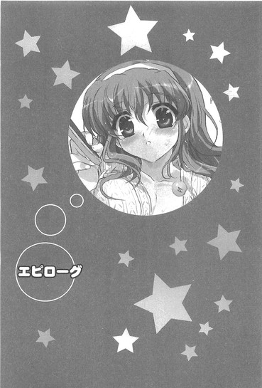

| [五十嵐雄策] 乃木坂春香の秘密07 | |
| 五十嵐雄策 | |
| (2015) | |
|
乃木坂春香の秘密 ７
五十嵐雄策
|
底本データ
一頁17行 一行42文字 段組１段
乃木坂春香の秘密⑦
容姿端麗で才色兼備、『白銀の星屑』という二つ名まで持つ超お嬢様、乃木坂春香。彼女と一緒に過ごした大晦日から年明けの世界で一番長い一日は......色々な出来事がありすぎて記憶もあやふやなのだが、二人にとっての秘密がまた一つ増えたということだけは確かだった。
そして、新学期。俺と春香は椎菜の誘いを受けて、仲の良いクラスメイト達と三泊四日の温泉旅行に参加することに。友達同士の旅行は初めてという春香も心持ちテンション高く、浴衣の春香が卓球したりする姿を眺めていたりしたら、気づけばなぜか俺は女湯にいて、湯気の向こうからは聞き覚えのある声が響き──!?
お嬢様のシークレットラブコメ第七弾（はあと）
五十嵐雄策
五十嵐雄策の秘密⑦。10月３日生まれのＯ型。第４回電撃ｈｐ短編小説賞最優秀賞を受賞し、文庫デビュー。マンガ化、ドラマＣＤ化に続き、念願のアニメ化までも......。そりゃあ、司法試験にも身が入らないというものです。やっぱり合格には長い時間かかるんですね。
イラスト：しゃあ
しゃあの秘密⑦。「電撃Ｇ'ｓマガジン」で『ＣＬＡＮＮＡＤ』のコミック連載をしています。こちらもよろしくお願いします！何を隠そう、しゃあ氏の一番好きなゲームだそうでして......。
乃木坂春香の秘密 ７
急がば回れという言葉がある。
それの意味するところは、急いでいる時には近道をするよりも回り道をした方が意外と早く目的地に到着するということであり、それが転じて物事を進める際には目先の安易な手段に焦って飛びつくよりもゆっくりと考えて多少遠回りでも慎重に行動した方が結果としてうまくいく場合が多いということだ。
「......」
さて何だって突然こんなことを言い出したのかというと、それにはいちおうワケがある。
俺と春香との関係。
関係というか立ち位置。
それはまさに急がば回れの典型例である。
いや急がば回れどころかほとんど一周がやたらと長い螺旋階段（十メートルくらい）をひたすらに駆け上っている感じか。グルグルグルグルとハツカネズミの横回転のようにやたらと回る必要があるんだがなかなか上には進んでいかない、みたいな。
ある意味牛歩の極みとも言える。
「......」
......自分で言ってて少しだけ虚しくなってきたが。
それはともあれ、だがそのことは必ずしもマイナスに働くばかりではない。
確かに螺旋階段ということはある程度同じ場所を回り続けることを余儀なくされるわけなんだが、道が繋がっている以上、裏返せば回り続ける限り確実に上昇はしていくのである。
エッシャーのだまし絵のように、いつまでも同じ階層をループし続けるだけというわけではない。
遅いながらも確実な前進。
それはこういったことにおいて地味に重要なファクターである。
「......」
いやまあいつものごとくワケノワカランことがゴチャゴチャと長くなっちまったが。
結局何が言いたいのかというと。
今回の一月上旬から中旬にかけての四連休の出来事で、螺旋階段の階層を少しだけ（五十センチくらいは）上がることができたかもしれん......ってことなんだがね。
第二十五話
０
「──ねえ裕人、いっしょに温泉に行かない？」
始まりは、椎菜のその一言だった。
「温泉？」
「そう。長野の方にある温泉旅館。ちょっと前にお父さんが会社でたまたま割引券をもらってきてさ、せっかくだから使わないともったいないと思って。今週末の土日と成人の日＆創立記念日を使って三泊四日とか予定してるんだけど」
一月十日火曜日。
あらゆる意味で一生の思い出に残るだろう一期一会（？）な展開だった年末年始も終わりを告げ、新学期が始まってから早数日が経った日の放課後。何となくボーっと教室を眺めながら帰り支度をしていた俺に隣の椎菜がそう言ってきたのだった。
「温泉か......」
割と急な話だが、悪くなかった。温泉だとかそういったものにはもうずいぶんと縁がない。最後に行ったのは確か中学に入ったばかりの頃で、あの時はどこぞのアホ社長秘書とセクハラ音楽教師（当時はアホ大学生とセクハラ音大生）が酔って暴れて野球拳を始めた挙句に、勢いでそのまま男湯を覗きに来ようとして大変だった。止めようとして逆にこっちが息の根を止められそうになったし......。いやしかしあの二人、昔から全然進歩がないんだな......
シーラカンス並の進化速度な年長者二人を思い起こし複雑な気分で沈黙していると、
「あ、な、なんか迷ってるみたいだけど、もちろん二人でじゃないよ？麻衣と良子が来ることになってるし、割引券は十人まで有効だから裕人にもだれか誘ってもらいたいと思うし......」
「ん、ああ、そうだな」
なぜか椎菜が焦ったようにそう言った。いや別に初めから二人だとはこれっぽっちも思ってなかったんだが......
そのことを伝えると、
「あ、そ、そうだよね、あ、あたし何言ってんだろ......」
「？」
「あー、うん、何でもないの。それでどうかな？行かない？」
顔の前で手をぶんぶんと振った後、そう改めて訊き直してくる。
まあ週末からの四連休には特に予定も入ってないし、さっきも言った通りここ最近は温泉なんてもんにはすっかりご無沙汰である。断る理由もなかったため、
「ああ、いいかもしれんな」
「え、ほんと？」
「ん、たぶん大丈夫だ」
そう答えると椎菜はその場でぴょんぴょんと飛び跳ねて、
「やった、これで裕人は確保！ あとは──」
くるりと後ろを振り向いたかと思うと
「乃木坂さんもどうかな？ 今度の土日とか空いてる？」
「はい？」
自分の席でのんびりぽやぽやと明日の予定を連絡帳に書き写していた春香（楽しそう）に向かって呼びかけた。
「あのね、今度のお休みにみんなで温泉に行こうと思ってるんだけど、乃木坂さんもどうかな？いっしょに行こうよ」
「わあ、温泉ですか？ 楽しそうですね」
ぱあっと表情を輝かせて胸の前で手を合わせる。
「うん、女子は今のところあたしの他に麻衣と良子が行くことになってるの。今裕人が参加するのも決定したし、乃木坂さんも来てくれればきっともっと楽しくなると思うよ。だからどう？」
その言葉に春香は少しの間ちょこんと首をかたむけながら考えこんでいたようだったが、
「えと......私でいいのですか？」
「もちろん！ ていうかむしろ来てって感じかな」
「ありがとうございます。でしたら私も参加させていただきますね」
そう言って、にっこりと嬉しそうに笑った。
「うん、じゃあ決まりね！ それじゃ裕人、悪いけどあと何人か男子を誘っておいてくれるかな？やっぱりこういうのは男女混合で行った方が面白いって良子が言ってて......。朝倉くんとか永井くんとか、裕人と仲がいい男子でいいからさ」
「あ、おう」
「よろしくねっ！ じゃあちょっとあたし、このこと麻衣たちに報告してくる。ばいばーい！」
そう言って、椎菜はたたたっと走って行ってしまった。
ちなみに朝倉が信長の名字だってことには今さら説明はいらんだろうが、永井ってのは三馬鹿の一人の名前である。他の二人は小川と竹浪。いやまあこの期に及んではどうでもいいっちゃいい事実なんだが、いちおうな。
「えへへ、楽しみですね、裕人さん♪」
そんなよく分からん確認をしていた俺に、にこにこ笑顔の春香がとてとてと近づいてきた。
「ああ、そうだな」
「温泉......とっても魅惑的でろまんてぃっくな響きです。『ノクターン女学院』の春琉奈様も冬合宿で部活のみなさんといっしょに入っていましたし......」
そんなことを言いながら目をきらきらと輝かせてくる。
まあ春琉奈様やら何やらはともあれ、楽しみであることには変わりなかった。
椎菜を始めとしたクラスメイトたちとの温泉旅行。
気の合ったやつらだけで集まって何かをするってのは、それだけで楽しいもんだ。
加えてよく考えてみりゃあこれは春香との初旅行でもある。英語にするとファーストトリップか。二人だけでないってのは残念といえば残念ではあるものの、それでも期待で胸がトムボーイのようにボトボトと弾むくらいのエキサイティングイベントであることだけは確実だった。
「──楽しい旅行になるといいな」
「はいっ♪」
満面の笑みで大きくうなずく春香。
その見ているだけで心が和む人間マイナスイオン発生器（エコ機能付き）みたいなイノセントスマイルに思わずとろけたチョコレートのような気分になっていると、
「あ──そうです。裕人さん、一ついいでしょうか？」
「ん？」
ふいに真剣な顔をしてそんなことを訊いてきた。
「裕人さん、私、こういった旅行での〝しきたり〟について、昔から一つだけ疑問に思っていることがあるんです。とっても知りたくて、でも訊くに訊けなかったこと......」
「〝しきたり〟？」
「はい。〝しきたり〟、です」
こくりとうなずく春香。
何だそれは？ やたらと古風な言い回しだが、乃木坂家にはそんなもんがあるのか？
まああの乃木坂家には今さら何があっても驚くことじゃないが......だがいずれにせよ春香がこんな思いつめた様子で訊いてくるなんてただごとではあるまい。いったいどんな内容なのか......
心して身構える俺に、
「あの、ですね......」
「ああ」
「その......」
しばしの沈黙。
やがて少しの躊躇を挟んで、春香はこう言ったのだった。
「こういった場合......バナナは、おやつに入るのでしょうか？」
１
一月十四日土曜日。
その日は朝からまぶしいくらいに太陽が照り付ける、西高東低冬型の気圧配置を絵に描いたかのような見事な冬晴れの一日だった。
「おはようございます、裕人さん♪」
「おう、おはよう、春香」
東京駅のＪＲ線のホーム。
ぱたぱたとチェック柄のマフラーとコートの裾を揺らしながら小ぶりのバッグとともに階段を上って来た春香（むう、今日もまた可憐だな......）と挨拶を交わす。
「いいお天気でよかったですね。絶好の温泉日和です。きっとおサルさんたちも気持ちよく湯船に浸かってらっしゃると思いますよ」
「ああ、そうだな」
駅のホームは、三連休頭の土曜ということもあってそれなりに人で混み合っていた。
辺りを見回せばそこかしこに人の姿。種類も老若男女様々で、くたびれた中年のおっさんもいれば元気な親子連れもいる。大きな荷物を二人で持ちながらイチャイチャと仲良さげに笑い合ういかにもなカップルの姿もあった。
「でも東京駅って、とっても広いんですね。初めて来たのですけれど、ちょっと迷っちゃいました」
周りをきょろきょろと見ながら春香が少し恥ずかしそうに笑う。
「ん、そうか？」
「はい、動く床とかもありましたし、最初は間違えて地下のホームへと行ってしまって......。裕人さんはけっこう利用されるのですか？」
「どうだろうな、そこそこってところじゃないか？迷うことがないってくらいで」
まあ用事がある時に普通に利用する程度なんだが。
だけど春香は、
「わあ、すごいです。さすが裕人さん、東京駅ますたーです......」
本当に感心した面持ちでじ～っと見上げてくる。
飼い主を前にしてぱたぱたとシッポを振るワンコみたいな表情。
その顔には、旅行前の高揚感もあってか、不思議といつもとは違った打ち解けた雰囲気があった。どこか親密感があるというか......おそらくは初日の出での、その、メテオストライクフルな出来事も影響してるんだろうね。何か辺りを漂う空気が違う感じだった。
その心安い空気を何となく肌で感じていると、
「──ん？」
と、そこでふとあるモノを見つけた。
にこにことこっちを見る春香の首元で光る小さなリングのような物体。確かこれは──
「春香、それ......」
「え？」
「その、首に着けているやつ......」
「あ、はい」
訊いてみると春香はちょっと恥ずかしそうに下を向いて、
「これは『月の光』です。その、クリスマスに裕人さんにいただいた......」
「ああ」
やっぱりそうか。道理で見覚えがあるはずである。でも何だってこんなネックレス状態に変態（アブノーマルではなく）してるんだ？
少しばかり首を捻る俺に、
「あ、えと、これは自分でやっちゃったんです。信州は寒いので手袋をすることが多くてなかなか指輪を着けることができないと思って......。でもやっぱり裕人さんにいただいた大切な指輪です。できるだけ身に着けておきたくてどうしたらいいか考えて、その結果こうしてペンダントみたいに通しておくのがいいかなって......」
「......」
ナルホドそういうわけか。確かに手袋をしながらの指輪はなかなかに辛いもんがあるからな。
「あ、も、もしかしていけなかったですか？ 指輪をこういう風にしてしまうのはマナー違反とか......」
「あ、いや」
そんなことあるはずがない。むしろそうまでしてあの『月の光』を大切に身に着けてくれている春香の気持ちに心がブートキャンプしそうなくらいである。
「そ、そうですか、よかったです......」
安心したかのように胸を撫で下ろす。
そんな感じに和やかに話をしていると、
「おはよ、裕人、乃木坂さん！」
ふいに後ろから声がした。
「二人とも早いね！ 集会時間までまだ十五分くらいあるのに、もう来てたんだ」
「おはようございます、乃木坂さん、綾瀬さん」
「いよいよエックスデーだねー。楽しみだなっ♪」
やって来たのは私服姿の椎菜、朝比奈さん、澤村さんだった。
それぞれ手に荷物を持って、楽しげな笑顔でこちらへと歩いてくる。
「あ、おはようございます、天宮さん、朝比奈さん、澤村さん」
「うん、おはよう乃木坂さん」
「お二人とも、今日はよろしくお願いしますね」
「元気マックスクライマックスではりきっていこーねー！」
わいわいとそんな会話が交わされる。
さらにもう少しして、
「今日はスマンな、綾瀬。まさか男女混合の温泉旅行だなんてこんな妄想のようなイベントに俺たちを誘ってくれるとは......知り合って初めてお前のことがいいやつに思えたかもしれん」
「愚鈍に見えてそれなりの甲斐性はあるということですね、いちおうお礼を言っておきますよ」
「もう俺は今日死んでもいい......」
今度は三馬鹿たちがやって来た。
それぞれ背にバカでかいリュックサックを担いで、ヘンな方向に感極まった顔でこちらへ歩いてくる。
これで参加者は全員だった。
俺、春香、椎菜、朝比奈さん、澤村さん、三馬鹿の八人。
男子四人と女子四人のバランスの取れた編成ながら、なかなかの大所帯である。
ちなみに信長も誘いはしたんだが、何でもその週末にはどうしても外せない大事なイベントがあるとか何とかで、行き先さえも聞かずに「ごめんねー、その日だけは何があっても空けられないからー」と断ってきたのだった。
「──あ、それじゃみんな集まったみたいだし、これからの大まかな予定を確認しとくね」
全員が集まったのを確認して、椎菜がそう口を開いた。
「ええと、いいかな？ まずは今から十時四十四分発の新幹線に乗って長野の方に向かうから。だいたい乗車時間は二時間くらいかな。で、そこからまたローカル線に乗り換えて一時間ちょっとで下車。駅を出たところに旅館のマイクロバスが迎えに来てくれるみたいだから、それに乗って旅館まで一直線。たぶん旅館に到着するのは三時過ぎくらいになると思う。──えっと、ここまでで何か質問あるかな？」
「はーい、椎菜センセー」
即座に澤村さんが手を上げる。
「ん、なに、良子？」
「バナナはオヤツに入るんですかー？ 砂糖入り麦茶はー？」
きゃっきゃっとはしゃぐような声でそんなことを言ってくる。
「あのね良子......」
「私としてはー、バナナはオヤツじゃなくてデザートに入ると思うんですけどー。やっぱり果物だしー」
イタズラっぽく笑いながらさらに続けてくる澤村さん。
そのノリノリな発言に椎菜がしょうがないなもうって顔で苦笑する。
すると、
「──あ、あの、バナナはおやつに入ると思います」
「え？」
なぜかそこで春香がおずおずと手を上げた。
「バナナは消化もよく高い栄養がありますので、デザートというよりは本来補助的な栄養補給のために考えられたおやつに含めるのが正しい判断だと......。え、えと、裕人さんもそう仰っていましたし......」
「......」
「......」
その唐突なバナナ＝おやつ発言に、ぽかんとした空気で静まり返る椎菜たち。
「あ、あの、わ、私、何か間違ったことを......」
皆の顔を見回しながら不安げな表情になる春香に、
「もー、かわいいんだから乃木坂さんはー♪」
「え？」
澤村さんが毛並みのいい高級お嬢様犬を見つけたトリマーのごとくがばっと抱きついた。
「うんうん、そうだよね、バナナはおやつに入るよねっ。私が間違ってた。ごめんねー」
「え、あ、あの......」
目をシロクロとさせながら春香がじたばたとするものの、
「いいからいいからっ。うーん、柔らかくっていい匂いー。落ち着くなー♪」
構わずに追撃（？）を加えてくる澤村さん。普段から基本的にハイテンションな彼女だが、今日はいつにも増してスタートから浅草のようにノリノリのようである。
やはりこれからイベントということで皆浮き立ってるんだろうね。いつもは控えめな朝比奈さんも少しだけ声を上げて笑ってたり、三馬鹿たちも通常の二倍速で恒例のアホ話を繰り広げたりで、全体的にハイテンションな空気になっていた。
そんな中、
「......『裕人さんもそう仰っていましたし』か......」
「？」
椎菜だけが少しだけいつもとは違う様子で、ぽつりと何かをつぶやいていた。
「どうかしたのか椎菜。なんか元気がないみたいだが......」
怪訝に思い訊いてみるものの、
「え？ あ、う、ううん、別に何でもないよ！」
「そうか？」
この普段から元気指数一二〇パーセントで常にエンジンフルスロットルしているようなフレンドリー娘が大人しいと、こっちとしても何となく気になるんだが。
「ほんとに大丈夫だって。ちょっとぼーっとしてただけだから。あ、それよりそろそろ新幹線に乗っちゃおう。自由席だから、バラバラにならないように早めに座っちゃった方がいいと思うし」
そう言って椎菜が一歩前に出る。
「ん、ああ」
「はい、良子もいつまでも乃木坂さんにじゃれついてないで、移動する」
「はーい」
椎菜の言葉に従い澤村さんがぴょこんと春香から離れる。
「ほら、裕人も行こう。永井くんたちも」
「え、ああ、今行く」
「うん、急いでね」
にっこりとうなずく椎菜。
その笑顔にはさっきまでの微妙な物憂さ加減はなく、すっかりいつも通りのフレンドリーなものになっていた。
「......」
うーむ。
今覚えた微妙な違和感は俺の気のせいだったのか？
いまいちよく分からんな......
新幹線内は、ホームと同じようにやはり人で混み合っていた。
「んー、やっぱりけっこう混んでるね」
「そうですね、連休の初日ですし......」
「早く席取っちゃおうよー。急がないといいとこがなくなっちゃいそう」
椎菜たちがそんな会話をしていて、
「わあ、私、新幹線って初めてです......」
その隣では、春香が車内に入るなりきょろきょろと辺りを見回しながら子供みたいなきらきらとした目でそう声をもらしていた。
「？ そうなのか？」
てっきり春香ならいつでもグリーン車に乗車可能な特別優待フリーパスくらいは持ってるものかと思ったんだが。
「はい。どこかに行く時はいつも飛行機か自動車でしたから......。他に乗ったことがあるのは〝りんかい線〟と〝総武線〟くらいだったりします」
「......」
それはまた偏りに偏りまくっているラインナップだな......
「だからとっても新鮮です。長野新幹線さん、かっこいいですし......」
「ナルホド......」
で、まあそんなことを話しながら八人で通路を進んでいき、何とか三人がけの対面席とその周辺を確保する。
「えっと、この辺でいいよね？ 日当たりもいいし、デッキとかにも近いし」
「あ、はい」
「うん、いいと思うよー。あ、私窓際ねー、そこのＡ席がいい！」
椎菜の言葉に朝比奈さんたちがうなずく。
「じゃあ良子はこっちの一番窓際の席ね。麻衣はその隣でいいかな？」
「あ、うん。大丈夫です」
「ん、だったらあたしはその隣で...。えっと、裕人たちはどうする？」
「お？」
「座る席。あたしたちの対面か、それとも永井くんたちの方か、どっちにする？あ、隣の二人席っていう選択肢もあるけど......」
ちらりと横を見ながら言う。
ちなみに三馬鹿たちはすでに一つ前の三人席を確保して、『新幹線における売り子さんのお辞儀の角度とスリットの因果律』についてムダに熱く議論をしていた。
「そうだな......」
まあ三馬鹿たちの対面はないとして、どうせならわざわざ離れたところに座るよりも椎菜たちといっしょの方がいいだろう。なので、
「ならここで。春香もそれでいいか？」
「あ、はい。だいじょぶです」
こっくりと春香がうなずく。
「ん、りょうかい。だったら早く座っちゃお。裕人、そっちに詰めちゃってくれる？」
「ああ、分かった」
特に深く考えずに窓際の席に座ろうとして、
「あ......」
と、そこで春香が小さく声を上げた。
「？ どうした？」
「あ、い、いえ......」
「？」
「べ、別に何でもないです。き、気にしないでください」
とは言うものの明らかに挙動不審である。
見ればその視線が、自覚はないようだが、ちらちらと俺の前にある窓際の席に注がれていた。
「......」
どうやら進行方向の窓際に座りたいらしいな......
新幹線は初めてだと言ってたし、その気持ちは分からんでもない。だがそんな何でもないことも言い出せないのが実に春香らしく微笑ましいというか......
俺は心の中で苦笑して、
「あー、春香。悪いが席を替わってくれるか？」
「え？」
「俺は通路側の席の方が好きなんだ。出やすいし。いいか？」
「あ、え......」
その言葉に春香は少しの間目をぱちぱちとしていたが、
「あ──は、はいっ」
直後にものすげぇ嬉しそうな顔をして、そうぶんぶんと首を縦に振ってうなずいた。
むう、実に分かりやすいリアクションだ......
まあそういうわけで座席順も決まり、
『それではこれより当新幹線は長野へ向けて発車いたします』
こうして、新幹線は長野へ向けてブイブイと走り出したのだった。
２
新幹線が東京駅を発車して三十分ほどが経とうとしていた。
窓の外では次第に高いビルの数が少なくなっていき、対照的に少しずつ緑がデコレートされた風景が多くなってきている。心なしか道路を走る車の量も減ってきているようだ。段々と都心から離れてきているのが、俺のメガネ越しの視覚でもバッチリと実感できるナイスビューだった。
で、車内では、
「ね、『山科庵』とか行ってみたいよね？どう思う？」
「あ、いいですね。確か手打ちのおソバで有名なところで......」
「やっぱりソバは絶対に外せないよねー。乃木坂さんはどう思うー？」
「あ、えとですね......」
ガイドブックを広げながらのそんな楽しげな会話が繰り広げられていた。
「これはどうかな？ 『ソバ処風林火山』。ソバもだけど、ここの塩イカがおいしいんだって」
「そうなんですか、椎菜ちゃん？」
「うん、使ってるイカが日本海直送アオリイカで、身の締まりが違うらしいよ。前に読んだ雑誌にそう書いてあった」
「へー、そうなんだ。すごいんだねー」
「わあ、アオリイカさん......」
話題の中心になっているのは主にこれから向かう先の名物料理である。
ちなみに一人だけやたらとイカにご執心しているテンタクル娘の姿があったが、それがだれかはまあ説明するまでもあるまい。
「裕人はどう？ どこか行きたいソバ処とかある？塩イカのお店でもいいよ」
と、椎菜がこっちを見ながらそんなことを訊いてきた。
「ん？ いや」
「ここの『高砂屋信州店』とかもいいらしいよ？こっちの『更科亭』は名前の通り更科ソバとかが有名で......」
「あー、まあどこでもいいというか......」
てかいきなりソバとイカ限定じゃな......
「んー、だめだって、そんな消極的じゃ。せっかく信州まで行くんだからイカとかソバとかイカとかイカとかを堪能しなきゃ」
「......」
だから何でイカが七割五分で残り二割五分がソバだけなんだよ......
他にもせめて普通の郷土料理屋だとかご当地喫茶店だとか、というか食事処以外にも観光施設くらいは選択肢として欲しいお年頃である。
「えー、だって信州といえばソバと塩イカじゃない。もうほとんど代名詞っていうか。ね、麻衣たちもそう思うよね？」
「あ、はい。おソバは有名だと思います」
「手打ちとか平打ちとか色々あるよねー。他にも山菜のとかもおいしいって話だしー」
「そうなのですか？ 早く食べてみたいです、信州のおソバ......」
そう答える朝比奈さん、澤村さん、春香。
つーか三人とも見事にイカについては一言も言及してないってのがポイントだな。
まあそんな感じに、のんびりと車中での時間は過ぎていった。
くつろぎでブレイクタイムなひと時。
ほっこりまったりとした空気の中、今は春香が持参してきたミカン（春香曰く「旅行といえばみかんです♪」なのだそうだ）をにこにこ顔で皆に配っている。
「うん、分かる分かる。冬の電車といったらみかんだよね」
「私もみかん、好きなんです。ありがたくいただきますね」
「もー、こんなとこもかわいいんだから乃木坂さんはー♪」
聞こえてくるのはそんな声。
「......」
──やっぱりこういうのはいいもんだね。
辺りの和やかな雰囲気をかみ締めながら思う。
車窓を流れる穏やかな景色。
楽しげに笑い合う春香たち。
初めは緊張していたのか少しだけぎこちなかった春香も、すでにすっかりリラックスした様子で朝比奈さん、澤村さんたちとも笑顔で喋っている。
それらを見ていると、それだけでどこか自然に口元が綻んでくるような気がする。心安らぐアットホームな光景っつーか......
そんな風なことを何となく思いながらボーっと眺めていると、
「......お弁当はいかがですか？」
ふいに通路からそんな声が聞こえてきた。
同時に台車のようなものがガラガラと押されてくる音。
どうやら巡回中の売り子さんらしいな。
まあちょうど少し小腹が空いてきたところだったのでナイスタイミングといえばナイスタイミングである。なので声をかけてようとして、
「あ、ええと、どんなのがあるんですか──ぶっ!?」
次の瞬間、思わず口に入っていたミカンを吹き出してそのまま目の前の朝比奈さんにミカンインパクトを食らわせそうになった。
そこにいた売り子さんの顔。
「......私の顔に何か付いているでしょうか？」
それはもはやこの上なく見慣れているメガネ着用メイド服標準装備の無口メイド長さんだった。
「な、何で......」
葉月さんがここに？ 副業としてたまたま長野新幹線で売り子さんのバイト中......なんてことはあるわけねえし。いや待て、この人がいるということはまさか......
俺の中にテキサス原産大型トルネードのごとく渦巻いたイヤな予感は、およそ三秒後に現実のものとなった。
「やっほ～、おに～さん♪」
「!?」
俺たちから五つほど離れた席。
ちょうどシートの配置の関係でこちらからは死角になっていた場所。
そこにいたのは──
「元気してる～？ ぷりてぃ～美夏ちゃんだよ～♪」
「那波さんもいますよ～」
「──（こくこく）」
「なっ......」
こっちに向かって実に楽しそうに手を振るツインテール娘とにっこりメイドさん、ちびっこメイドだった。
「ん、ど～したのおに～さん、そんなトイプードルだと思って買った犬が実はヒツジだってことが判明した時の愛犬家みたいな顔しちゃって？」
口元に指を当てた美夏がツインテールを揺らして尋ねてくる。
「どうしたってな......」
何だって葉月さんが売り子のマネゴトをしてるんだとかそもそもいつからあそこに座ってたんだとか、突っ込みたいことはそれこそチョモランマほどあるんだが......とりあえず早急に訊いておきたいことは一つだ。
「......何でここに？」
「ん～？」
「......何で美夏たちがここにいるんだよ。何だってまたよりによって同じ電車に......」
すると美夏はにぱっと笑って、
「何でって、わたしたちもおに～さんたちと同じでたまたま信州まで行くことになったの♪三泊四日の温泉慰安旅行ってやつかな。で、たまたま同じ新幹線になったって感じ？ちなみに泊まる先もたまたまおに～さんたちといっしょのところ。だから旅は道連れ世は情け？」
「......」
何だそのあり得ないたまたま祭りは。
とりあえずお嬢様（妹）を問い詰めてみてもまったくもってもラチがあかなそうだったためお嬢様（姉）の顔を見るも、姉の方も「何が何だか全然分かりません......」って顔で呆気にとられたチワワみたいに首をふるふると振っている。
「ま、細かいことはい～じゃん。それよりせっかくおんなじ新幹線なんだからいっしょに遊ぼうよ♪人生ゲームとかトランプとか持ってきたんだ～。大富豪でもする、する？」
そんなことを言いながら隣に強引に座ってこようとして、
「わー、なになに。この子、もしかして乃木坂さんの妹？かわいー♪」
「え？」
それを遮るような勢いで、澤村さんが目をきらーんと光らせて席から立ち上がった。
「美夏ちゃんっていうんだ？ 名前もかわいーねー！私もおんなじツインテールだよ。触ってもいい？いいよね？」
「え、え～と......」
思わぬ積極アピールにたじろぐ美夏に、しかし澤村さんは構わずにがばっと抱き付き、
「!?」
「んー、やっぱりナイスな抱き心地！大きすぎもせず小さすぎもしない絶妙なサイズというかー」
「ちょ、ちょ、ちょっと、おね～さん!?」
目をシロクロとさせながら美夏がじたばたとするものの、
「いいからいいからっ、うーん、柔らかくっていい匂い。落ち着くなー♪」
「にゃ、にゃ～！」
マイペースで抱き付きを続ける澤村さんに押されっぱなしの美夏。
どうやらいつかのアキハバラでのネコミミメイドさんしかり、この天下無敵天上天下唯我独尊に見えたツインテール娘も、押しの強いタイプには意外に弱いようだった。

「う～ん、美夏様はああ見えて実のところ攻められ慣れてないですからね～。プッシュプッシュには弱いのですよ～」
「那波さん」
と、いつの間に隣にやって来ていたのかにっこりメイドさん（脇にちびっこメイド付属）がそんなことを言った。
「自分と同じタイプにはマイナス補正がかかると言いますか～、攻撃力が高い半面守備力は弱い負け知らずのケンカ番長みたいなものなんですよね～」
「──（こくこく）」
ちびっこメイドまでもがうなずく。いまいちよく分からんたとえだがそういうことらしい。
で、しばしの間猫好きの子供に捕まった気まぐれ仔猫のようになるツインテール娘を眺めていて、
「──と、とにかく」
ようやく澤村さんのハグ攻撃から逃れた美夏がこほんと咳払いをする。
「せっかくなんだから、みんなで何かして遊ぼ～よ。大富豪とかどう、罰ゲーム付きで♪」
「トランプか......」
まあ特にやることもなかったし俺としては別に構わんのだが。
「あ、いいね、トランプ。やろうよ。あたしは椎菜、天宮椎菜っていうの、よろしくね、美夏ちゃん」
「ええと、私は朝比奈麻衣です。よろしくお願いしますね」
「もちろん私は美夏ちゃんの提案なら何でもありだよー。ちなみに私は澤村良子。良子ちゃんって呼んでくれればいいからー」
椎菜たちもそう言ってくる。
「は～い、乃木坂美夏で～す♪ 十四歳の中学二年で、趣味はインパラの餌付けとフィーエルヤッペン。いつもお姉ちゃんがお世話になってます。──ね、おね～さんたちって文化祭の時にコスプレ喫茶に出てた人たちだよね？それにそっちの天宮おね～さんは確かロンドンでピアノのコンクールにも......」
「え、美夏ちゃん、来てたの？」
「うん、お姉ちゃんが出てるコンクールだったからね。おに～さんといっしょに来てたんだよ。ね、おに～さん♪」
「ん、ああ」
なぜか意味ありげにちらりとこっちを見ながら同意を求める美夏。
まあそこで初めて椎菜と会ったわけだから、椎菜にとってそれ（俺がいたこと）は周知の事実なわけだが。
「──というわけで、さ、それじゃ始めよっか。全十回勝負で、罰ゲームとしてビリの人は一位の人の命令を一つだけ聞くっていうのでどう？葉月さんたちももちろんやるよね？」
「......はい」
「美夏様のお頼みとあれば～」
「──（こくり）」
無口メイド長さんたちがうなずく。
「それじゃあ第十三回長野新幹線杯大富豪大会の始まり～♪」
そして総勢九人にトランプが配られ、
長野駅に到着するまでの、全十回の大富豪大会が始まったのだったが──
３
──やめときゃよかった。
長野駅のホーム。
新幹線から降りた俺は背に荷物とツインテール娘とを抱えてモソモソと歩きながら、心の底からそう思っていた。
「ほらほらおに～さん、もっと優しくエスコートする♪」
「優しくったってな......」
「あ～、なんか不満そうな顔。だめだよ、女の子をちゃんとおんぶできない男の子は男の器が北海道生息ナキウサギの鳴き声（プチー♪）みたいなんだから～」
楽しそうにそんなことを語りながらきゅ～っと抱きついてくる美夏。
言うまでもなくこれは大富豪大会の罰ゲームによるものだった。俺が大貧民（ダントツビリ）でツインテール娘が大富豪（ダントツトップ）。その結果美夏から下された指令は──
『この三泊四日の旅行中に、おに～さんは一日一つわたしのお願いを聞くこと♪』
というものだった。
ある意味反則に近い内容なのだが、ツインテール娘の「え～、それくらいい～じゃん。せっかくの楽しい旅行なんだし～」の一言とそれを後押しする澤村さんの援護（美夏ちゃんかわいー♪）とで、見事に承認されやがったのである。
「あ、それじゃみんな聞いてー。ここからはちょっと歩きで移動してローカル線に乗るから。──えっと、美夏ちゃんたちも行き先は同じでいいの？」
「は～い、おんなじで～す♪」
俺の背中でにこにこと手を上げながら美夏がうなずく。「てゆ～かわたしたちもナチュラルにみんなの一員と思ってくれてい～から。遠慮はいらないよ。よろしくね、おね～さんたち♪」
「あ、あの、すみません......こ、こら美夏」
そのあまりに悪びれない様子に春香が「めっ」とするものの、
「え、いいっていいって。別に謝るようなことじゃないし、人数は多い方が楽しいし」
「はい、全然大歓迎です」
「美夏ちゃんぷりてぃーだしねー♪」
ちんまいツインテール娘は椎菜たちには大人気だった。
ちなみに三馬鹿たちも美夏たちには肯定的なのか、四人が現れてからはずっと『ツインテールと妹とメイドさんの黄金律』について熱く議論を交わしていた。まあ目の前の実物よりもそれらが表すテーマに対してご執心なのは実にこの三人らしいというか......
「さ、それじゃ行こっか。乗り換え時間までもうあんまりないし。それにこの路線、本数が少ないみたいだから」
そんな椎菜の言葉を受けてローカル線のホームへと向かう。
新幹線の改札から歩いて少し行ったところ。
総勢十二名となった大所帯でワイワイと駅構内を移動していき、
「あ、電車来てるみたいですよ、椎菜ちゃん」
「え、ほんと？ だったら乗っちゃおう！ たぶん次の電車って一時間くらい後だと思うから」
「なんかもう今にも発車しちゃいそうだけどー」
「え、えと、あの電車に乗れば......」
「お姉ちゃん、そっちの電車じゃないよ、あっちのやつ」
ふらふらと反対側のホームに歩いていきそうになった春香に俺の背中から美夏が声をかける。
「え、そ、そうなのですか？ あ、きゃっ！」
「だ、大丈夫か、春香？」
「な、何でお姉ちゃんは何もないところで滑るかな～......って、お姉ちゃん、バッグからバナナが出てる出てる！」
「あ、こ、これはおやつに用意した......」
「と、とにかく押し込め！ バナナを中に押し込むんだ！」
「お、おに～さん、早くしないと発車しちゃうよ！」
「あ、ああ、分かってる！ まずはバナナを......」
そんな感じにバナナと格闘しつつ、椎菜たちから少し遅れて今にも発車しそうだった電車に慌しく乗り込んだ。
「つ、疲れた......」
乗車口に飛び込むなり動き出した電車の振動を背中に感じながら、息を吐く。
「お、お姉ちゃん、なかなかバナナが入らないんだもん。どうなるかと思っちゃったよ～」
「バナナだけにイエローカードですね～」
「......そんなバナナ」
「──（唖然とした表情）」
「す、すみません......」
ぺこぺこと頭を下げる春香。
そんな俺たちを見て椎菜は、
「だいじょうぶ、裕人？ なんかどたばたやってたみたいだけど......」
「ん、まあちょっとな......」
まさかバナナがカバンからはみ出していてそれを必死に押し込んでいたとは言えまい。
「？ よく分かんないけど......でもあとはこのまま終点まで乗り換えとかはなしだから、ゆっくりできると思うよ」
「ああ、そうだな」
うなずき返しながら辺りを見回す。
電車の中は、新幹線と違って閑散としていた。
もともと二両編成で乗れる人数は限られているとはいえこの時間は空いているのか、俺たちの他には電車の振動に合わせてプルプルと震える推定大正生まれだろうジイさんが一人乗っているだけで、あとはほとんと貸切状態である。
「わ～、すご～い。なんかプライベートスペースみたいだな～」
俺の背中から飛び降りた美夏が嬉しそうに窓際に駆け寄る。
「ほんとだねー。あ、しかもすっごいいい眺めだよー。鉄橋とかあるしー」
「きっとあれは千曲川ですね。いよいよ本格的に信州に来たって感じです」
澤村さんと朝比奈さんも楽しげに外の景色を指差していて、
「椎菜も来なよー。キレイだよー」
「あ、うん。今行く」
それに返事をして椎菜がたたたっと駆けていく。
窓の外を見ながら楽しそうに喋る美夏、椎菜、澤村さん、朝比奈さん。
それらの周りで横一列に並ぶ葉月さん、那波さん、アリス。
ついでに一番先頭の席でまだ『ツインテールと妹とメイドさんの黄金律』を議論している三馬鹿たち。
そんな皆の喧騒から少し離れた座席で春香は、
「......（にこにこ）」
それらの光景を見つめながら、幸せそうにぽわぽわと微笑んでいた。
さっきまでバナナを入れようとしてあたふたしていたとは思えないほどの牧歌的な笑顔である。
「──春香、楽しそうだな」
近づいて声をかけると春香はにっこりと顔を上げて、
「あ、はい。とっても楽しいです。私、こういう風にみなさんといっしょに旅行とかするの、初めてで......」
「ん、そうなのか？」
「はい。高校に上がってからはお稽古事とかで忙しくてなかなかこのような機会はなかったですし、その、それより昔は色々とありましたし......」
「......」
「だからこういった雰囲気の中にいっしょにいられるだけで嬉しくって......ついつい、見入っちゃいました」
照れくさそうに言う。
「春香......」
そういえば何だかんだで春香にはこういった普通のクラスメイトと何かをやるイベント経験が少ないんだよな。まあ今回は何とかなったんだろうが元々は超箱入りのお嬢様で多忙な毎日だし、中学の時とかはそもそもそういう状況じゃなかったんだろうし......
何となくしんみりとした気分になっていると、
「でもみなさんと来るのも楽しいですけど......」
「？」
「いつか裕人さんと二人でも来られたらなあ、とかもちょっとだけ思って......」
「え!?」
思わずテンパったメガネザルのように春香の顔を凝視しちまう。
いやまあ似たようなことは俺も考えてはいたんだがまさか春香の口からそんな言葉が出て来てくれるとは......
「あ、わ、私、何を言ってるんだろう......え、えと、べ、別に特別な意味はないんです。ただつい口から出てしまって......」
「あ、ああ」
「そ、その、わ、忘れてください。は、恥ずかしいです......」
恥ずかしがり屋の金魚みたいに顔を真っ赤にしてそう言った。
「......」
「......」
そのまま何となくお互いに黙り込んでいると、
「あ、乃木坂さーん、そんなところでのほほーんとしてないでこっちでいっしょに外の景色を見ようよー！」
と、澤村さんのそんな声が飛んできた。
「え、あ、は、はい」
春香が慌てたようにびくんと顔を上げる。
それからうかがうようにちらりとこっちを見て、
「あ、あの、ちょっと行ってきますね。呼ばれちゃいました」
「お、おう。どんと行ってこい」
「は、はい。ではまた後で......」
ぺこぺこと頭を下げる春香を送り出す。
「......」
......むう。
なんかまだ胸がドゴリドゴリと蠢いてるな。
その後も電車は順調に進んでいき、四十分ほど経った現在は五つ目の駅で停車していた。
どうも時間調整の関係とかでここで五分間ほど待機するらしい。
「ん～、早く発車しないかな～。あと少しで着くのに～」
「まあまあ美夏様～、こののんびり感がローカル線のいいところですよ～」
「......スローライフなひと時を貴女に──」
「──（こくこく）」
座席でぱたぱたと足を揺らしながら美夏たちがそんなことを話している。
春香は椎菜たちといっしょに車窓をバックに写真を撮っていて、三馬鹿たちは相も変わらず『メイドさんのホワイトブリムとフリルエプロンと編み上げブーツの防御力』とやらについて議論していた。
で、俺はというと、
「......」
──ノドが乾いたな......
そんな風情も何もないことを考えていたのだった。
考えてみれば新幹線内で春香からもらったミカン以外に水分補給をしていない。冬場の乾燥した空気にあてられて咽頭がエボダイの干物みたいになっちまっていてもおかしくはないだろう。
チラリと座席から窓の外を見ると、長さにして十メートルほどのホームの隅に自動販売機が置いてあるのが目に入った。
古びてはいるが、ランプは点灯しているのでいちおう稼動はしているようである。
......ちょっと行ってくるか。
まだ発車までは少し時間がある。ハシボソカラスの行水のようにサッと行ってサッと戻ってくれば大丈夫だろう。立ち上がって歩き出そうとして、
「あれ、おに～さん、どこ行くの？」
美夏がくりんと首をかたむけて訊いてきた。
「ん、ちょっと飲み物を買いにな」
「そうなの？ あ、だったらわたしホットレモンティーがいい♪」
「は？」
いきなりそんなことを言い出しやがった。
「ん、綾瀬っち、何か買いに行くんだー？じゃあ私はさんぴん茶ー」
「俺はドクターペッパーでいいぞ」
「タブクリアをお願いします。ああ、釣りは取っておいていいですよ」
「スコールを頼む」
次々と追加されるリクエスト。
どいつもこいつも俺がハヤテのごとくパシってくるのが当然って顔をしてやがる。
「......」
......仕方ねえ。
何となく釈然としないが、こうなれば毒を食らわば備前焼きの大皿までってやつだろう。
「......ついでだから全員の分を買ってくる」
「わ～、さすがおに～さん、忠犬ハチ公みたいなそうゆうところが好き～♪」
きゃっきゃっと手を叩く美夏。
それにこれ以上ないってくらいの大きなため息を吐きつつ自販機へと向かおうとして、
「──あ、待ってください、裕人さん」
「──裕人、ちょっと待って」
「お？」
二つの声が重なった。
「えと、裕人さんだけじゃそんなにたくさん持ってくるのは大変ですし、私も──」
「裕人だけだと全員分は大変じゃないかな？ だからあたしも──」
春香と椎菜だった。
それぞれ言い方こそ違うものの、言っている内容はほぼ同じである。
「あ......」
「え......」
驚いたように顔を見合わせる二人。
「え、えと......」
「あー、んー......」
何やら微妙な空気。
そんな二人を見た美夏が何やらツインテールにぴ～んと来たかのようにきらりと目を光らせる。
「はは～ん、よく分かんないけどもしかして......。ああ、そっか、どっかで聞いたことがあるなと思ったらひょっとして椎菜おね～さんって文化祭の時の............だとするとこうゆう時は............あ、でもあからさますぎるのもまずいし......。──うん、こうなったらここは」
「？」
何やらぶつぶつとつぶやいていたかと思うと、
「ん、決めた。ここは葉月さんに行ってもらうのがいいと思うな。お手伝いはメイドさんの本分だし。い～よね、葉月さん？」
なぜかそんなことを言い出した。
「......はい」
「お姉ちゃんたちもそれでいい？ 異議なし？」
「あ、は、はい」
「あ、あたしは、別に......」
春香と椎菜がうなずく。
「よし、じゃあ決まりね。れっつご～、おに～さん♪」
「......」
ぱちりとウインクをしながら号令をかける美夏。
というか当事者である俺にはまったく意見を述べる機会が与えられないってのがまた理不尽極まりないっつーか......いや別に葉月さんが付いてきてくれることにはこれっぽっちも異議はないんだが。
そんなわけで二人で車外へと出て、自販機へと歩いていく。
ホームの端っこに忘れられた電柱のようにボーっとたたずむ自販機。
「あー、すみません、付き合ってもらって」
「......いえ、お気になさらずに」
悟り切った仏像のようにひっそりと横に立つ葉月さんにそう話しかけながらレモンティー（ホット）のボタンをポチリと押す。ガタンという音とともにアルミ缶が落ちてきた。
「──よし、これで全部か」
最後のドクターペッパー（タブクリア、スコールとともになぜか普通に置いてあった）を取り出し口から拾い上げ、数を確認する。
ちなみに全十二個もの大量のアルミ缶は、葉月さんがメイド服のエプロン部分を広げてそこに収納（？）してくれていた。
「じゃあ戻りましょうか」
「......はい」
うなずいた葉月さんとともに電車へと向かおうとする。
その時だった。
ぽてり。
「？」
目の前で何かが落ちた。
大きさ二十センチくらいの緑っぽいぬいぐるみ。
見ると胸の部分に大きく『信州名物のざわなくん』と書かれている。
落ちてきた元は、無口メイド長さんのエプロンドレスのポケットだった。
「......」
「......」
「あの......落ちましたよ、葉月さん」
「......」
「葉月さん......？」
そう声をかけるも無口メイド長さんはつつーと目を逸らして、
「............知りません」
「は？」
「............それは、私のものではありません。なのでお気になさらず、捨て置いてください」
「え、だけど......」
「............身に覚えが、ありません。まったくありません。知らない子です。ここに来るまでにこっそりと長野駅で買ったなどということは絶対にないですから」
そんなことを言う。
ああ、そういえばこの人、ぬいぐるみだとかかわいいものが好きなことは皆には隠してるつもりだったんだっけか。しかしまったく隠せてないところや口ではそう言いつつも目ではちらちらと顔面が緑ばしったぬいぐるみ（『のざわなくん』：微妙にかわいくない）を追っているところなんかはさすがに春香付きのメイドさんってとこか......
ともあれこんな押し問答を続けていても仕方がない。
「ええと......とりあえず見なかったことにしますから、サクっと袷っちゃいましょう」
「............いえ、ですから、それは私のものでは............あっ」
なおもかたくなに否定していた葉月さんが小さな声を上げた。
続いて葉月さんのエプロンドレスの中からアルミ缶（×十二）がガランガランと次々に地面へと落ちた。
「......」
「......」
「............申し訳ありません」
やはり動揺しているのか、いつもよりワンテンポ遅れた動作で拾い集めようとする。
「あー、手伝いますよ」
「......いいえ、こんなことで裕人様の手を煩わせるわけには」
「煩わせるって......別に大丈夫ですから」
「............すみません」
申し訳なさそうな葉月さんとともにホームに転がったアルミ缶（×十二）を給い集め始める。
これはちょうどいいチャンスだ。
この機に『のざわなくん』もいっしょにエプロンドレスの中に放り込んで穏便にすませちまおう。そう思い、抜かれたマンドラゴラのように地面にデロンと転がる『のざわなくん』（やはりかわいくない）に手を伸ばそうとして、
「おに～さ～ん！」
「ん？」
と、何やら美夏が窓から顔とツインテールを出してこっちに向かって手を振っているのが見えた。何だ？なんか慌てた顔をしてるが......
「どうしたんだ、何かあったのか？ ああ、もしかして追加注文でもあるとか......」
「そんなのんびりしてる場合じゃないって～！早くしないと電車が──」
「え？」
だが次の瞬間に、それが何を意味していたのか明らかになった。
プシュー。
響いてきたそんな音。
同時に警笛のようなものが鳴り、電車のドアがパタリと閉まる。
「あ──」
「............」
そしてゆっくりと動き出す車輪。
アルミ缶に手をかけたまま屈んだ姿勢で固まる俺たちの前で、
「......」
「......」
「お、おに～さ～ん、葉月さ～ん！」
そんな美夏の声をドップラー効果で残しつつ、ガタンゴトンと電車は走り去っていってしまった。
置き去りになった、瞬間だった。
４
時刻表で確認したところ、次の電車がやって来るのはおよそ二時間後だとのことである。
正確に言うと一時間四十八分後。
それまでは貨物列車一つやっては来ないらしい。
「......」
「......」
絶望した。
いやその間こんな駅舎も何もない吹きっさらしなホームで過ごせってのか？どこまでも続くような平地に申し訳程度の土台と屋根を建てただけの無人駅であるため休憩できる場所もありゃあしないし、何か身体を温めようとしても手元にあるのはレモンティー（ホット）と『のざわなくん』だけである。春香たちと連絡を取ろうにも山に囲まれているせいか携帯も見事に圏外だし......
「......」
本当にどうしろっていうんだろうね？
あまりにどん詰まりな状況に心の中でグリコポーズ（お手上げ）になる俺に、
「............申し訳、ございません」
「え？」
葉月さんがぽつりとつぶやいた。
「............私はメイド失格です。本来お護りすべき方であられる裕人様を自らの過失でこんな状況に追い込んでしまうなんて。本当に、言葉もありません......」
その翡翠色の目の奥に深い後悔と申し訳なさとをにじませて深々と頭を下げてくる。
「あー、いいですって」
ブンブンと手を振る。もともと飲み物を調達しようなんて考えたのは俺なわけだし、別に葉月さんだけのせいじゃない。
「少しばかり運が悪かっただけでこんなのはよくあることです。だから気にしないでください」
「......裕人様......」
それよりも問題はこれからどうするかだ。
さっきも言ったように移動手段もなければ連絡手段もない。次の電車を待とうにも防寒施設もないときている。まさに八方塞がりもいいところだ。
頭を捻らせながら悩んでいると、
「...あの、裕人様」
「？ 何ですか？」
「......裕人様、もしもよろしければですが、徒歩による目的地到達を提案したいと思うのですが......」
と、葉月さんが少しばかり遠慮がちにそう言った。
「歩いて......？」
「......はい。実のところここから本日裕人様たちがお泊まりになられる旅館までそう距離は離れていないのです。だいたい徒歩で一時間ほどでしょうか。歩いた方が身体も温まりますし、お嫌でなければこのまま電車を待つよりはそちらの方が得策かと思われますが」
「......」
歩く、か......
それは考えもしなかった。
基本的に体力には湿気かけたマッチ棒ほども自信がない俺だが、もはや選択肢としてはそれが一番マシなような気もしないでもない。追いつくのが遅れて春香たちに余計な心配もかけたくないしな。
なので、
「──分かりました。そうしましょう」
そう言った。しんどそうだがこの際仕方がない。
「......了解いたしました。それでは参りましょう」
葉月さんがうなずき駅の出口へと歩き始めようとする。
と、そこで一つ疑問に思ったことがあった。
「──そういえば葉月さん」
「......はい？」
「道は分かるんですか？ なんか周りは山ばっかりみたいなんですが......」
それが問題である。いかに歩いていける距離とはいえ具体的な道が分からなきゃどうしようもない。
すると葉月さんはくるりと振り向いて、
「......それは大丈夫です。これがありますから」
「え？」
そう言いながら差し出された右手。
そこには『わくわく信州ガイドブック～ワサビーナちゃんと行く楽しい北アルプス～』と書かれた本がちょこんと載せられていた。
「......これがあれば何も恐れるものはありません。一騎当千、天下無敵です」
「......」
メガネをきらーん、と輝かせながらそんなことを言ってくる。
......いや。
さっきの『のざわなくん』といい、実はこの人ものすげぇ今回の旅行を楽しみにしてたんじゃねえのか？
また一つ、目の前の無口メイド長さんに対する認識が改まったのだった。
さてそういった次第で歩いて旅館まで向かうことにしたわけだが、色々と障害はあった。
まず、
「さみぃ......」
駅構内でもすでにその兆候はあったが、外に出てみると思いのほかに気温の低さが身に染みた。
何と言っても一月の信州である。確かに歩いていれば全身の血行が促進されてそれなりに発熱はするんだが、それに勝る寒風が吹きすさびまくっているというか。
おまけにコートは電車の中に置きっぱなしであるため、今の俺はシャツにセーターを着込んだだけの部屋着仕様である。
せめて少しでも自家発熱するために壊れたダンシングフラワーのように小刻みに身体を動かしながら歩いていると、
「......裕人様、お寒いのですか？」
「あ、ええ、まあ......」
見ての通りである。というか逆に何でこの人はいつも通りのメイド服姿で平然としているのか訊きたいんだが。
すると葉月さんは何かを考え込むように少し目を伏せて、
「......そうですか。了解いたしました」
「？」
「......では私でよろしければ、身体でお温めいたしますが？」
「!?」
いきなりそんなことを言ってきた。
「......何でもこういった場面では体温と体温とを分け合って温め合うのが一番だとか。人の身体を温めるには同じく人の体温が最も有効なのだそうです。なので私の身体を使えば裕人様のお身体も温まると思いますが？」
「あ、なっ......」
な、何をいきなりどこぞのツインテール娘みたいなことを言い出すんだ、この人は!?またいつかの実技指導か何かなのか!?
思わず道端に立つ道祖神のように固まる俺に、
「......くすっ」
「......え？」
「......冗談です」
「......は？」
「......今のはほんの冗談です。いっつ・あめりかん・じょーく」
「............」
しれっとそんなことを言いやがった。いや、アメリカンとか言ってる場合じゃねえだろ......
「......と、冗談はさておきまして、裕人様、よろしければこれをどうぞ」
「え？」
「......温まります」
そう言って、葉月さんが何かを差し出してきた。
一体どこにしまってあったのか白くてモコモコとした毛皮のようなモノ。
「これは......」
そこにあったのは、いつかのクリスマス会で見かけたシロクマの着ぐるみだった。
「......ダグラスです」
「は？」
「......ダグラス。この子の名前です」
名前付きだった。しかもセンスが微妙だ......
「......大切に着てください。だれかにダグラスをお任せするのは、初めてなのですから」
「......」
「......初体験（ぽっ）」
いやそれ絶対言葉の使い方を間違ってるだろ......
まあそれはともかく、受け取ったシロクマ（ダグラス）を着込む。
見た目的にも精神的にも少々アレだが、どうせひとっこ一人いないしこの際背に腹は替えられない。
「......裕人様、とてもよく似合っておられます」
「......」
「......まるでダグラスがそのまま人間になったかのよう──感無量です」
......それは褒めてるのか？
甚だ疑問だったが今はそこに突っ込んでも仕方がない。
とりあえずはもうそういうもんだと納得して、シロクマ姿にチェンジして歩みを進めていく。
「何もないですね......」
駅を出てしばらくは、基本的に何もない平地が続いた。
延々と続く見晴らしのいいだだっ広い道。周囲にはところどころ雪で薄く化粧された何もない土地が広がっている。おそらく他の季節には畑かなんかに使われているんだろう。ビニールハウスやら作業小屋らしきものやらが時折目に付いた。
「......ここの辺りは夏には葡萄や洋ナシなどの栽培も盛んなのです」
と、葉月さんがそう言った。
「そうなんですか？」
「......はい。ゆえに今の季節は休耕地となっている場所が多いようですね。中にはリンゴの栽培をやっているところもありますが、どうやらここは違うようです」
「へえ......」
そんな葉月さんの解説を受けつつさらに歩いていくと、やがて辺りの景色が少しずつ様変わりしていき、道は傾斜のある山道へと変わっていった。
あまり人の手が入っていないと思われる道。
周囲には針葉樹や岩肌の露出した部分が多くなっていき、ほとんど山道というよりも獣道といった様相である。雪があるせいか基本的に滑りやすく、場所によっては歩くのにも難儀するような険しさだった。
「......裕人様、足下にお気を付けください」
「あ、はい」
葉月さんがそう声をかけてくる。
「......もう少しです。この山を越えてさらにその先にある沢を通り抜ければ旅館のある区画へと辿り着くはずです。がんばりましょう」
「越えるって......この山をですか？」
思わず訊いちまった。
「......そうですが、何か？」
「いえ......」
すでに入り口付近の現地点で音が上がりそうなんだが。しかもあちこちに倒木だとか凍った雪だとかがあって見るからに通行困難である。
「......大丈夫です。何かありましたらこれで切り拓きますので」
そう言い切った葉月さんの手にはいつの間にか怪しく輝く木目模様のチェーンソーが握られていた。ああ、そういやあ他のインパクトが強すぎてすっかり忘れてたが、この人は元祖チェーンソー使いメイドさん（商標登録申請中？）だったんだっけな......
「......何か？」
「............。いや、何でもないです......」
まあそんな感じに進んでいった。
シロクマな俺とメイドさんな葉月さんの客観的に見ればかなり怪しい二人連れの道中。
さすがに冬の獣道だけあってその道程はけして楽なものではなかったものの、全て葉月さんの活躍によって（具体的にはチェーンソーをスノボ代わりにして雪の急斜面を滑り降りたりチェーンソーをロープに吊るして方位磁石代わりにしたりチェーンソーを鉄板代わりにして非常用の干し肉を炙ったり）何とか乗り越えることができていた。
「......」
「......」
で、早くも駅を出てから四十分ほどが経過。
ようやく俺の軟弱な身体もウインターフォールな山道に少しずつ慣れ始め肉球越しの雪の感触にも足が馴染み始めてきたところで、ふと頭に浮かんだことがあった。
──そういえば、春香は今頃どうしてるんだろうな......
つい先ほど駅で離れ離れ（強制的に）になった春香たち。
時間から考えて、順調に進んでいればおそらくはもう旅館に着いている頃のはずだ。
「......」
春香はうまくやっているだろうか。何だかんだでドジだからまた何もないところで足を滑らせてバナナをぶちまけたりしてないだろうか。あるいは道を歩くミニチュアホースに見とれていつの間にか迷子になってるとか。まあ美夏たちが付いてるからそうなったとしてもフォローは大丈夫だとは思うんだが......
そういったことを考えていると、
「......裕人様」
「はい？」
「......春香様のことが、気がかりですか？」
「え？」
いきなりど真ん中ズバリなことを突っ込まれた。
「......春香様のことを考えていたのですよね？春香様は無事にやっておられるか、またバナナをおこぼしになられたりミニチュアラクダに見とれて迷子になられたりされていないかとか......」
「......」
......いやこの人、読心術でも使えるのか？
思わず訝しげな顔になる俺に、さらに葉月さんは、
「......ではそんな心配性な裕人様のために、今から春香様クイズを開催いたします」
「は？」
何の脈絡もなくそんなワケノワカランことを付け加えた。
「......春香様が気がかりな時は春香様のことをお考えになるのが一番です。この場に春香様はおられませんが常に心に春香様を......という感じでしょうか。ちなみに春香様クイズとは、裕人様の春香様に対する知識の習熟度をチェックする一問一答です。好成績でしたら花丸と春香様検定三級合格の証明書を進呈いたしますが、あまりにも目を覆うような結果でしたらその時は玄冬様にご報告させていただきますので、あしからず」
「......」
もはやどこから突っ込めばいいんだか分からんのだが。
ほとんどどうしていいか分からん俺をヨソに、
「......それでは第一問。春香様の身長は百五十五センチである。○か×か」
どうやら開始したようだった。人さし指を立てながらずいと迫ってくる。
「あー、ええと......」
信長じゃあるまいし、そんなもん分かるわけもないんだが。
ここはもう二択にかけるしかあるまい。フィフティフィフティだ。
「○です。確か春香はそれくらいだったはず......」
歩きながらそう答えると、
「......正解です」
当たっていたらしい。僅かな微笑みとともになでなでと頭を撫でてくれた。
「......では次です。春香様の誕生日は十一月十一日である。○か×か」
む、これは分かるぞ。いくら俺の記憶力がカピバラ並でもあのハッピースプリング島に連れていかれた鮮烈な出来事は忘れようもない。
「×です。春香の誕生日は十月二十日のはずです」
「......正解です」
なでり。再び頭を撫でてくれる。
「......続いて第三問。春香様の所持しているテディ・ベアの数は全部で十八体である」
「×です。そこまでたくさんは持ってなかったと......」
「......不正解です。実は出窓のカーテンの裏などの目立たないところにも置いてあるので、十八体で正しいのです」
ぺちり。今度はデコピンが飛んでくる。
こんな具合に進行していった。
正解の時は頭をなでなで、間違えた時は代わりにデコピン。
そんなアメとムチローテーションを繰り返し──
「......では続きまして──あ、裕人様、あと少しで旅館に到着いたします」
「え、もうそんなに進んだんですか？」
いつの間にやら長かった道のりも終盤を迎えていた。キツイ山道もクイズのやり取りをしながらだとあっという間だったというか......。もしかして葉月さんはそのためにわざわざこんなことをやってくれてたのか......？
思わず目の前の無口メイド長さんの顔を見直しちまったその時だった。
ガサリ。
「？」
何やら後ろの方から音が聞こえたような気がした。
何かが枯れ枝を踏んだみたいな音。
「葉月さん、今何か物音がしませんでしたか？」
こんな山の中だし、気のせいだろうか。確認のために葉月さんに尋ねてみるものの、
「......」
「葉月さん？」
返答がない。
ただ五メートルほど先にある木の陰を厳しい目でじっと見つめたまま、その場を動かずにいる。
「あの葉月さん、何か......」
「......裕人様、ゆっくりと私の後ろに下がってください」
「え？」
「......ゆっくりと、です。大きな声などは出さずに......」
「だから、どうして......」
「......早く！」
珍しく差し迫った声。
一体何が......と思った次の瞬間、
「フシュルルル！」
「!?」
そんな聞き慣れない音とともに、針葉樹の陰から黒い影がいきなり飛び出してきた。
５
「......裕人様！」
「えっ」
葉月さんの緊迫した声が響いた。
続いてドン、と横へ押される衝撃。
そのまま勢いで倒立前転をして積もった雪の上に倒れこむ。ぐ、関節からヘンな音が出やがったぞ......
「な、何が......」
背中に冷たい雪の感触を受けながら目を開く。
するとそこには、
「フシュー、フシュー......」
「......く......」
何やら剣呑な声を上げる生き物と、それを阻むように俺の前に立ち塞がる無口メイド長さんの姿があった。
「こ、こいつは......」
でかい犬みたいな四足の体躯、ゴワゴワとした灰色の体毛、その頭頂部に短く生えた尖ったツノ。
犬と言ったが、サイズ的にはほとんど小型の牛と言ってもおかしくないような様相である。
「............カモシカ、です」
「え？」
「......おそらくは野生のニホンカモシカでしょう。気付かない内に、私たちは彼の縄張りに入ってしまっていたようです。かなり怒っていて......く......」
苦しげに息をもらしながら言う葉月さん。見れば正面からその太いツノをがっつり掴んで、力ずくで突進を阻止していた。
「は、葉月さん!?」
な、何をしてるんだこの人!? そんな牛と闘うヘラクレスみたいなマネ......
だが俺の言葉に、
「......大丈夫です」
「え？」
「ニホンカモシカは確かに国の特別天然記念物ですが、正当防衛ならば戦うことも許されるのです」（注：本当です）
「......」
そういうことを言ってるんじゃないんだが。
色々な意味で呆然とする俺の前で、だがしかし葉月さんは真剣な眼差しでカモシカを見据え直した。どうやら本気でニホンカモシカとガチ勝負をやる気みたいだ。
「......貴方に恨みはありませんが、これも運命です」
「フシュー！」
葉月さんが厳かにそう言い放ちカモシカが宣戦布告をするかのように高らかに威嚇の声を上げる。
そして始まった無口メイド長さんVSニホンカモシカ。
「............」
「シュー......シュー......」
立ち上がりは互角だった。
葉月さんが押せばカモシカが押し返し、カモシカが押せば葉月さんが押し返す。
まさに文字通り異種格闘技戦。
手に汗握る一進一退の攻防が続く。
「ブシュルルル！ フシュー!!」
「............う......」
だがやはり野生に生きるニホンカモシカと超絶メイドさんとはいえ人間（......だよな？）である無口メイド長さん。次第に葉月さんが押され始めてきた。足下が雪でありふんばりが利かないのもマイナスなのか、少しずつ後退していく。
「は、葉月さん！」
「......」
しかも押されていく葉月さんの後ろには、運の悪いことにサルノコシカケ（ヒダナシタケ目に属するキノコ）の群生があった。マズイ、このままじゃ......葉月さんがサルノコシカケまみれになっちまう。
だが葉月さんは、
「............今の内に、お逃げください」
「え？」
「......裕人様は今の内にこの場をお離れください。この先の道を真っ直ぐに行けば国道に出るはず......。そこまで行けば安全です。このカモシカは私が刺し違えてでもここで食い止めますので......」
自分の危機的状況（サルノコシカケまみれ一歩手前）にはまったく気を払わずに俺にそんなことを言う。
「な、何だってそこまでして......」
「......？」
「何でそこまでして俺のことを......」
すると葉月さんは真っ直ぐにこっちを見て、
「......春香様のためです」
「え？」
「......裕人様が万が一おケガでもなされたら、春香様が悲しみます。私はメイドとして、春香様にそんな思いをさせるわけにはいかないのです」
「だ、だからって......」
「............それに」
「？」
「............それに私自身、裕人様にはおケガなどしていただきたくはありません。私にとっても裕人様は大事な人......お守りすべき大切な身内の一人なのです」
「葉月さん......」
「......お話はここまでです。さあ、早くお逃げください」
そう言って再びカモシカへと向き直る。
その横顔には絶対に退かないという強い意志が見て取れた。
「......」
──何とか、ならないのか。
全力でカモシカと相対する葉月さんを目の前にしながら強く思う。
身体を張って俺を守ってくれているこの人のために、俺ができることは......
「......」
と、そこで気付いた。
今俺がしている格好。
白い毛皮に覆われた地上最大の肉食動物の着ぐるみ。
もしかしたら、これが使えるかもしれない。
──よし。
とにかくやれるだけのことはやってやる！
一縷の望みを託して、俺はダグラスを目深に被ると、
両手（肉球付き）を天に向けて大きく上げながら腹の底の底にまで力を入れて、
フクロテナガザルもかくやとばかりに懸命に叫んだ。
「ガ、ガオー!! ガルルルルルリュ!!（噛んだ）」
「......」
「......」
一瞬、時が止まった。
カモシカのつぶらな瞳と無口メイド長さんのいつも通りの冷静な瞳が、一斉にこちらへと向けられる。
やがて、
プイ。
カモシカがふいに力を抜いて踵を返した。
何かものすごくかわいそうなものを見たような目。
そのまま山の中へと消えていく。
「......」
──やった、のか......？
いまいち実感が湧かんのだがどうもそのようである。
まあどう見ても怖がって逃げたというよりも呆れて闘争本能を失ったように見えたんだが、それは自らの精神上のバランスを保つためにも気のせいということにしておこう、うむ。
「......見事なシロクマっぷりでした」
と、葉月さんが穏やかにそう言ってきた。
「......力強い吠え声といい勇ましい決めポーズといい、本当に何から何までダグラスに生き写しで──三重花丸を差し上げてもいいくらいです」
それはフォローなのか本気で褒めてるつもりなのか、すげぇ微妙だ......
「......なのでそれは裕人様に差し上げます」
「え？」
「......今のナイスプレイを見て悟りました。ダグラスはもう私には必要のないものなのかもしれません。カエサルのものはカエサルへ。きっと裕人様ならば、これからもダグラスを有用に使っていただけるでしょう」
「......」
嬉しくねぇ......
何だか妙に身体に馴染んでいる気がしなくもないダグラスを肌に感じながら複雑な気分でいると、
「......裕人様。............ありがとう、ございました」
「え......？」
「......今の行動......私を助けるために、危険を顧みずにカモシカに立ち向かってくれたのですよね？あのようにだれかに助けられるというのは、王季様に拾っていただいて以来初めてで......」
ぽつりと、そうつぶやく。
「......」
「............とても、嬉しかったです」
「......」
いつもより少しだけ柔らかな表情。うーむ、改めてそんなことを言われると照れちまうな。特に普段からあまり感情を表に出さない無口メイド長さんが相手だと余計にそれが際立つっつーか......
「あー、と、とにかく、行きましょう。またあのカモシカが戻ってきたりするとアレですし......」
「......はい」
気恥ずかしさを隠すためにも早くこの場を立ち去ろうとして、
「......ああ、そうです。一つ忘れていました」
「？ な、何ですか？」
微妙な焦りを覚える俺に葉月さんは、
「......先ほどの春香様クイズの結果ですが、十問中八問正解です。なので春香様検定三級合格の証明書を進呈したいと思います。さらに副賞として北海道産甘納豆もプレゼントです。ぱちぱちぱちぱち」
今度はいつもと全然変わらない調子でそう言った。
「......」
やっぱりこの人はよくワカラン......と心底思い知らされたのだった。
６
で、それから三十分ほど山道を歩いて、
「あ、おに～さんやっと来た。おそ～い」
「あら～、思ったよりお時間がかかったみたいですね～」
「──（こくり）」
ようやく旅館（街から少しだけ離れた山の中腹にあり）に到着した俺を待っていたのはツインテール娘たちのそんな言葉だった。
「......いや、こっちも色々あったんだがな」
「そなの？ もしかして次の電車が待ちきれなくて山道を歩いてきてその途中でクマさんと戦いでもしてたとか？ま、最初はちょっと焦ったけど、葉月さんが付いてるならまあだいじょぶかな～って」
「葉月さんなら一人で戦車一個師団に突っ込んでいっても無傷で生還するでしょうから～」
「──（こくこく）」（尊敬の眼差し）
そんなことを言いやがる。つーか少しは心配してくれてもいいだろ。
心配してくれるのは、
「裕人さん、無事だったんですか！よかった、私、気が気でなくて......」
「裕人、だいじょうぶだったの！」
俺たちの姿を見るなり案じるような顔で駆け寄ってきてくれた春香と椎菜の二人、それと朝比奈さんくらいである。
ちなみに三馬鹿たちはロビー脇のソファで『温泉旅館と美人女将のうなじの関係』について語り合っていてこっちには見向きもしやがらなかった。まあもうやつらについては突っ込んでどうとなるもんでもないのでそれでいいとして、
その横のソファにはなぜか、
「おお、裕人、ようやく来たか」
「おねいさん、待ちくたびれて一人で始めちゃった～♪」
「......」
なんか......増えてやがった。
地酒を片手にふんぞり返っている浴衣姿のアホ姉とセクハラ音楽教師。
すでにすっかりでき上がっているのか辺りには酒瓶と食い散らかした馬刺しが散乱し、テーブルの上にはギラリと輝く脇差しが垂直に突き刺さっている。いや何でこの二人が......
「え～、だって青春がぎらぎらとみなぎってるうら若い裕くんたちだけで温泉旅行なんて色々とキ・ケ・ン♪じゃない。教師として保護者としてこれはほっとけないってゆうか～。それに裕くんがいないとおいしいご飯が食べられないし～」
「まあ簡単に言えば保護者による監督というやつだな。ああ、この場所については乃木坂さんの妹さんから聞いたぞ。メル友なのでな」
「......」
迷惑極まりないホットラインができてやがった。てかこの二人、絶対ただ温泉と酒を満喫したかっただけだろ......
招かれざる闖入者たちに早くも疲れ切った気分でいると、
「それじゃ裕人たちも無事に合流したことだし、そろそろ部屋に行こっか？」
椎菜が皆にそう呼びかけた。
「ん、そだねー、何だかんだでまだチェックインしてないしー」
「だったらまずはフロントですね」
「お姉ちゃんも行こ」
「あ、はいです」
皆で並んで歩き出す。
俺もそれに従おうとして、
「......ん？」
と、そこで気付いた。
ロビーの入り口付近に置かれているパンフレットの束。
温泉案内やら観光地案内やらが陳列されている中、それらに紛れてごくナチュラルに並べられているモノがあった。
それは、
『私立ノクターン女学院ラクロス部～春琉奈様キャラソン発売記念イベント!!
開催：一月十五日（日）開催地：冬合宿の舞台となった温泉地』
と書かれた、佗び寂びの極みである温泉旅館には似つかわしくないやたらとカラフルなパンフレットだった（他にも細々と色々書いてあるがよく見えん）。
「これは......」
確か春香のお気に入りのアニメの一つだったか。なんか春琉奈様とやらの名前には聞き覚えがある。ただ春香は気付いていないのか、フロントのところで椎菜たちと楽しそうにお喋りをしている。
「......」
むう、これは教えてやるべきなんだろうか。知ればきっと春香は興味を持つに違いないだろう。だが今は椎菜たちもいるしな......
どうすべきか考えていると、
「ほ～ら～、おに～さん何ぼ～っとしてるの？みんないっちゃうよ」
「あ、おう」
美夏に呼びかけられてそう返事をする。
──まあ、今は仕方ないか。
今すぐというほど急ぐものでもないし、あとで春香が一人になった時を見計らって言えばいいだろう。
そう思って、その場は美夏たちの後を追ったのだった。
第二十六話
０
ヒンヤリとした空気で目が覚めた。
まるで倉庫管理のバイト中に入れられた業務用冷蔵庫で間違えて外から閉められて三十分閉じ込められた時みたいなそこはかとなく冷えた空気。
「ぬう......」
布団から身体を起こしながら何となく周りを見ると、開け放たれた窓と見慣れないソファの上やらテーブルの上やらで死んだように眠っている三馬鹿たちとアホ姉＆セクハラ音楽教師（浴衣がハデにはだけ両手には酒瓶を握りしめている）の姿が目に入り、ああ、そういやあ皆で旅行に来てたんだっけな......と思い出した。
「......」
昨日は色々と大変だった。
何だかんだで俺たちが旅館に着いたのが夕方だったため、とりあえずその日のところは翌日に備えてゆっくりと休もうということになりすぐに籠りモードへと移行したんだが......何せメンバーの中には動力が血液でなくアルコールなんじゃねえかってくらいの有害指定生物がいやがる。当然のごとくというか必然の流れで荷物を置くやいなや宴会へと雪崩れ込み、早々に温泉へ向かうことにした春香や椎菜たちを除き、そのまま夜中まで宴は強制的に続けられたのだ（男子部屋で）。
「頭いてぇ......」
おかげで色んな意味で二日酔いである。精神も肉体も疲れ切ったっつーか......
──ちょっと散歩でもしてくるか......
時計を見ると時刻は朝の六時半。
旅館で用意される朝食にはまだ少しばかり早い時間である。
頭痛を覚ますためにも気分を切り替えるためにも部屋の外で適当にブラブラして新鮮な空気を吸うのもいいだろう。色々アレでまだ旅館の中もよく見てないしな。
「......」
そうと決めたら善は急げだ。
寝ぼけた頭と寝乱れた浴衣を引きずって男子部屋──『青竹の間』を出る。
まだ朝も早いということもあり、シンと静まり返った廊下にはほとんど人の姿は見られなかった。
よく造り込まれた感じの日本家屋風の廊下。
ただしメチャクチャ広い。
今さらながらの解説になるが、俺たちが泊まっているのは『悠久の宿・千石屋』という名の温泉旅館である。
総部屋数二十九、温泉数八、本館が重要文化財木造建築四階建てという、こういった旅館にしてはかなり大きなところであり、それに比例して内部の造りもかなり豪華なものとなっていた。
どこを見回しても目を引く景観というか、至るところに色々と手の込んだ装飾がされているというか。敷石が並べられた床には砂利が敷き詰められているし、赤く塗られた壁には行灯がぶら下がっている。天井近くには室内にも関わらず軒が出ていて、さらに廊下の中央にはでかい杉の木で造られた見事な通し柱があった。
「すげぇな......」
改めて見てみるとほとんど昔話の世界とかどこかの時代劇のセットとかに迷い込んじまったような感じである。
そんな非日常的な光景に感嘆しつつも適当に廊下を歩いていると、
「お......」
見知った顔を発見した．
裏庭に面した窓辺でぼんやりとガラスの向こうを眺めている小柄な人影。
浴衣姿のお嬢様（姉）だった。
「よう、春香。おはよう」
「あ、裕人さん♪」
こっちに気付くと春香はとてとてと走り寄ってきて、
「おはようございます。気持ちのいい朝ですね」
ちょこんと首をかたむけてそう言ってきた。むう、ちょっと大きめの浴衣とも相まって朝から雪の隙間で春を待ちわびて背伸びをするフキノトウみたいでかわいいな......
「どうしたんだ、こんな早くから」
「えと、何だか早く目が覚めてしまったみたいなんです。こういう旅行は初めてなのでわくわくしすぎたのか五時にはすっかり覚醒してしまっていて......。まだみなさんお休み中でしたので、旅館の中を見て回っていたんです」
ちょっと恥ずかしそうにえへへと口元を緩ませる。
ちなみに春香は椎菜、朝比奈さん、澤村さんといっしょに『紅梅の間』に泊まっている。俺たちの部屋からは渡り廊下を挟んで別館にあたる位置。その隣には美夏たちの泊まる『桃源の間』があったりもした。
「裕人さんはどうされたんですか？ 何かご用事でもあったとか......」
「ん、まあ俺も似たようなもんだ」
もっとも目が覚めたのは単に部屋が寒かったからだし三馬鹿たちはアルコールに浸されて潰れてるだけだが。
「それより昨日はどうだったんだ、温泉はのんびり入れたのか？」
「あ、はい。とっても楽しかったです。澤村さんに誘われて『天孫降臨の湯』とかを三つも回っちゃいましたし......今日は雪見ができるという露天風呂に入ろうと思ってるんですよ」
「お、そうなのか？」
「はい♪」
野に咲く一輪のコスモスみたいな可憐な笑顔。
うーむ、それだけで二日酔いで手作り青野菜ジュースのように混濁していた頭もすっきりさっぱり浄化されていくような気がするね。まさに歩く高濃度酸素カプセルとでも言おうか......
そんな感じに幸せな気分を噛み締めていて、
「......」
と、そこで一つ思い出した。
それはロビーで昨日見つけたパンフレットのこと。
春香に伝えようと思ってはいたものの昨日はあの後すぐに強制的に宴会に突入したせいで結局話す機会を逃してしまったが、今なら周りに俺たち以外のだれもいないしいい機会だろう。
なので、
「──なあ、春香」
「はい？」
「あのな、実は昨日ロビーのところで見かけたもんがあるんだが──」
おもむろにそう切り出そうとして、
「──あれ、そこにいるのって裕人と乃木坂さん？」
「え？」
ふいに後ろから声をかけられた。
「あ、やっぱそうだ！ おはよ、早いね！ そっか、乃木坂さん、部屋にいないと思ったら散歩してたんだ」
「おはようございます、乃木坂さん、綾瀬さん」
「ふーん、朝も早くから春香ちゃんと綾瀬っちが二人っきりかー。へー、ほー」
椎菜、朝比奈さん、澤村さんの三人だった。
それぞれやはり浴衣姿で楽しそうにこっちに向かって手を振っている。
「ん、おう、椎菜たちも早いな」
「うん、せっかくの旅行なんだから早く起きないともったいないと思って」
「早起きは三文の徳と言いますから」
「こんな風に朝からみんなで集まるなんてのも旅行ならではだしー。あ、でも乃木坂さんには負けちゃったけどねー」
澤村さんがあははーと元気に笑う。その言葉に当の春香＠早起きは「そ、そんなことないです......」とぷるぷると首を振りながらしきりに恐縮していた。
「だけど昨日の夜はすごかったよね。裕人のお姉さんとか、由香里先生とかがノリノリで」
「そうですね、野球拳をしようとしてましたし......」
「男湯を実地調査しに行くとかも言ってたよねー」
顔を見合わせてそんなことを言う椎菜たち。
「そのことは思い出させないでくれ......」
というかホントに進歩がないシーラカンス二人である。
「で、二人ともこんなところで何やってたの？体操とか？そろそろ朝ご飯だし、特に用事とかがないんだったらいっしょに行こうよ。美夏ちゃんたちもすぐに来るって言ってたから」
「食事処はあっちみたいですよ」
「ごーごー♪」
「ん、ああ、そうだな」
「はい」
うなずき、椎菜たちの後に付いて食事処である『稲穂の間』へと歩き出そうとして、
「あ、そうです。裕人さん、さっき何か言いかけてませんでしたか？」
「え？」
「その、ロビーがどうかされたとか......」
春香が首をちょこんとかたむけながらそう訊いてきた。
「ん、あー、それはまあいいんだ」
「？ ですけど......」
「大したことじゃないんでな、気にしないでくれ」
というか椎菜たちの前では話せることじゃない。いちおう春香の秘密に関わることであるし。
「あー、ほら、それより早くせんと。椎菜たちが行っちまうぞ」
「あ、はい」
そう言って促し、
頭の上に小さなハテナマークを浮かべる春香とともに『稲穂の間』へと向かったのだった。
１
「わ、朝からすごいねー！ おいしそー！」
「けっこう量がありますね。食べきれるかな......」
「やっぱり地の物がたくさんあるみたいだね......あ、塩イカがある！ねえみんな、イカだよイカ！」
囲炉裏を囲んだ特別製の食卓で、澤村さんたちが黄色い声を上げる。
その目の前には朝食とは思えないほど豪勢に盛り付けられた料理の数々があった。
「ん～、これはたぶん地元の野沢菜漬けだね～、いい浸かり具合でおいしそ～♪」
「自家製ですかね～。見事な色ツヤをしています～」
「──（こくり）」
「......のざわなくんがお料理されて......（切なげな目）」
少し遅れて合流してきた美夏たち（美夏は浴衣、葉月さん、那波さん、アリスはここでもメイド服のまま）も大絶賛している。
ちなみに現在この場に集まっているのは、三馬鹿を除いたその他のメンバー十一人である。
何でも三馬鹿たちは体調不良のため朝食はパスするとか。まあ昨晩部屋の隅で『天然温泉と女教師とバスタオルから見えるフトモモ』について嬉しそうに語っていたところを由香里さんに捕まって「目の前にこんなにむちむちなリアルおねいさんがいるのに失礼ね～。おしおきよ～♪」と、なぜか信州なのに沖縄産のハブ酒を大量に飲まされてたからな......
その一方で浴びるように（文字通り）飲んでいたはずの当のルコと由香里さん（浴衣ははだけたまま）は「むう、うまいな......むしゃむしゃ......」「おねいさんしあわせ......がつがつ......」と飢え切った今帰仁アグーみたいな恐るべき食欲で次々と料理を胃袋に収めていっている。一体どういう代謝機能をしてるんだよ......
「あれ、どしたのおに～さん、食欲ないの？ こっちの野沢菜漬けとかおいし～よ？」
「ん、ああ......」
食欲がないというか、目の前の野生動物二人の食いっぷりに少しばかり胸焼けを起こしていただけなんだが。
気を取り直して勧められた野沢菜漬けに手を伸ばす。
「お、ホントだ、ウマイな」
「あ、おに～さん、分かる？」
「ああ、いい味だと思うぞ」
「でしょでしょ、へへ～、これが分かるのはツウなんだから」
訳知り顔でそんなことを言うツインテール娘（十四歳中学二年生）。
「もっと食べる？ お皿に取り分ける？ あ、よければあ～んしてあげよっか♪」
「......いや、それは遠慮しとく」
さすがに椎菜たちもいるこの状況でそれはあまりにもチャレンジャーすぎる行為だ。
「でもホントにウマイな。この独特の風味が何とも言えないっつーか......。春香もどうだ？」
隣の春香に勧めると、
「あ、はい、いただきます。......わあ、おいしい」
「だろ？」
「はい。とってもまろやかな味付けで......。あ、裕人さんもこちらのお魚さんの塩焼きはどうですか？ニジマスさんみたいですよ」
「お、じゃあもらうか」
「はい♪」
春香が満面の笑みで囲炉裏に刺さっている串を一本手渡してくれる。むう、なんかこういう機会は貴重というか、こんなほのぼのとした雰囲気なのもいいもんだな......
でまあ、そんな感じに朝食は進んでいき、
「うーん、野沢菜漬けおいしー。さすが美夏ちゃんのお勧めだけあるなー」
「やっぱり塩イカだよ塩イカ！ あ、おかわりもらっていいかな？」
「......のざわなくん......（涙ぐんでいる）」
「......むしゃむしゃ、ごくごく、ばりばりばり......」「......がつがつ、ごっごっ、ごぎゅごぎゅごぎゅ......」
一部で微妙なカオスを見せながらも食事タイムは終了した。
そしてそのまま食後のお茶（玄米茶）を飲みながら、話題は本日のこれからの予定について移行する。
「それじゃ今日はどうしよっか？ みんな、どこか行きたいところとかある？」
椎菜（結局塩イカを三杯ほどおかわりした）が皆の顔を見回してそう言う。
今日明日は丸々一日時間を自由に使うことができるため、どうやって過ごすかは皆の意見を総合して決めるのである。
「はいはーい、椎菜センセー！ 私はこの近くにある温泉タマゴ作りが体験できるっていう茹釜に行きたいでーす！」
澤村さんが元気よく手を上げながらそう言った。
「やっぱり冬の信州っていったら熱々の温泉タマゴだって！あのドス黒いまでに真っ黒なボディが何とも言えずにおいしそうだし、他にも温泉のお湯がそのまま飲めるお店もあるんだってー。おまけに今はなんかキャンペーンをやってて参加者全員にもれなく温泉タマゴのストラップをプレゼントしてくれるらしいよー」
「へぇ、温泉タマゴかー......」
「いいんじゃないでしょうか？ 温泉街ならではですし、私は良子ちゃんに賛成です」
「そうだね、うん、ナイスアイデアだと思う」
朝比奈さんが笑顔でうなずき、それに椎菜も同意する。
「裕人たちはどう？ それでもいいかな？」
「ん、ああ......」
「？ なんかまずい？」
「いやそういうわけじゃないんだが......」
一瞬返答に詰まる。温泉タマゴも別に悪くないんだが、例のイベント（ノクターン女学院キャラソン何とかやら）のことも少し気にかかったりもするんだよな。てか絶対に知れば春香も行きたがると思うんだが......
だが、
「わぁ、温泉タマゴですか？ ぷりぷりとしていておいしいですよね」
そう言ってにこにことうなずく春香。むう、春香が楽しそうにしている以上はあえて俺がこだわる必要もないんだろうか。
「美夏ちゃんたちはどう？ 由香里先生たちは？」
「ん～、温泉タマゴか～。ま、定番だけどそれもアリかな」
「私たちは春香様と美夏様の行かれるところでしたらどこでもお供いたしますから～」
「......お二人が在るところにメイド隊在り、です」
「──（こくり）」
美夏たちは賛成のようだったが、
「ふむ、悪いが私たちは別行動をとらせてもらってもいいかな？せっかくの温泉、少しばかりやりたいことがあるのでな」
「大人のお楽しみタイムっていうか～、ちょっとしたロマンなのよね～」
「あ、そうなんですか。残念だな......」
ルコたちは不参加らしい。まあ昨日言ってた保護者として監督うんぬんはどうしたんだって突っ込みはあるが、この年長者二人については放し飼いにしておいた方が平穏なことは間違いないので謹んで放置しておこう。
「うん、じゃあそんな感じで決定かな。それじゃこれから各自で準備とかして、一時間後に着替えてロビーに集合ってことで！」
椎菜がそうまとめて、
そういう次第で、朝食の時間は終わった。
「おに～さん、ちょっといい？」
「ん？」
「ちょ～っとお話があるんだけど、今だいじょぶかな？」
部屋に戻ろうとしていた俺に、ツインテール娘がそう声をかけてきた。
「ああ、平気だが......」
そう返すと美夏はにっこりとうなずいて、
「ん、よしよし、じゃあ悪いけどこっちまで来て～」
「あ、おい」
俺の腕をつかんで『青竹の間』とは反対側にある区画へと引っ張っていく。
その先にあったのは美夏たちの部屋である『桃源の間』。
そしてそこには、
「は～い、いらっしゃいませ裕人様～」
「......おいでませ」
「──（こくり）」
三つ指をついて出迎えてくれたいつものメイドさんトリオがいた。むう、このおもしろメンツで一体何の話をするつもりなんだ？
訝しがる俺に、
「──さておに～さん、それでお話なんだけど......単刀直入に言って、おに～さんはこのままでい～の？」
「え？」
美夏がいきなりそう言って下から覗き込んできた。
「このままでいいって......どういう意味だ？」
「言葉通りだよ。この温泉旅行、このままノンビリのほほんとグループ旅行を楽しんでるだけで満足なのかってこと。お友達のみんなとわいわいと楽しくやるのもいいけど、お姉ちゃんとのすい～とでらぶり～な愛のめもり～作りとかもしたいと思わない？三泊四日なんてあ～っという間に過ぎちゃうんだよ？」
「それは......」
確かにそういう思いはないわけじゃない。
いかに皆で来ている旅行とはいえ春香と二人で何か特別な思い出が作れればいいに決まってるし、例のノクターン女学院イベントだって、その、春香と二人で行ければとは思ってたわけだしな（まあアレにはどの道椎菜たちは誘えないが）。
すると美夏は腰に手を当ててツインテールを颯爽とはためかせながら「びっ！」と人さし指を突きつけてきて、
「だったらもっとがんばんなきゃ！ せっかくの華の高校時代の温泉旅行なんだよ？もう一生で二度とあるか分かんないんだよ？ここで発情したアメリカアリゲーター（天然モノ）くらいの勢いでが～っと攻めなきゃどこで見せ場を作るってゆうの？」
「いやアメリカアリゲーターってな......」
またすげぇたとえだ。ちなみにそのワニ、攻撃性よりもハンドバッグなんかの革製品としてよく使われることで有名である。
「そりゃおに～さんが奥手でパッシブなのは知ってるけどさ～。やっぱり女の子は決める時にはばしっと決めてほしいものなんだよ。普段は甘えん坊なお座敷犬にもいざという時には暴れん坊の番犬になってほしいってゆうか～。特に今日の温泉街巡りなんて大チャンスじゃん」
「まあそうかもしれんが......」
そう簡単にいけば世の中何も苦労しないっつーか......
言葉に詰まる俺に、
「──とゆうわけでここはわたしたちが一計を案じてあげることに決まりました♪」
「は？」
そこで美夏はすげえ楽しそうににぱっと笑うと、
「ぱんぱかぱ～ん、それではこれより『第一回何とかしておに～さんとお姉ちゃんに二人きりのらぶり～たいむat温泉街を過ごさせよう会議』を始めま～す♪」
「ぱふ～ぱふ～どんど～ん♪」
「......ぱちぱちぱちぱち」
「──（こくこくこくこく）」
そんなやたらとデジャヴを呼び起こすタイトルを言った。
どうやらこれが本題らしかった。
「これはタイトルからも分かるように、お姉ちゃんと二人きりになりたくてなりたくてたまらずに身悶えるおに～さんをぷりてい～な美夏ちゃんたちが応援してあげようってゆう企画です。構想六十五分、経費四二〇円（税込み）の壮大にして深遠なプロジェクトなんだから、震えて聞かなきゃだめだよ？」
「......」
まあ確かに構想時間も経費も前回（六十分、二一〇円）より多少はグレードアップしてるみたいだが......それにしたって牛丼一杯並ってのはショボイことには変わりなくねえか......？
あらゆる意味で唖然となる俺に、
「はいはい、とにかく細かいことはい～から実技指導を始めるよ。今回のおに～さんのためにわたしたちが考えたシチュエーション。名付けて『みんなで温泉街を散策してたんだけど途中でおに～さんとお姉ちゃんが横道（人生のじゃないよ♪）に逸れて二人きりになった挙句にそのまま秘宝館にしけこんじゃったシーン』！」
「......」
秘宝館って......この耳年増娘、意味分かってるのか？
「で、キャストだけどもちろんおに～さん役はおに～さんね。お姉ちゃん役は今回も厳正な審査（マジカル裏バナナ）の結果、葉月さんに一肌脱いでもらうことになったから。よろしく、葉月さん♪」
「......承りました」
その言葉を受け葉月さんはすっと前に出ると、なぜかおもむろに着ていたメイド服の前ボタンに手をかけ（!?）ぱさりと下に落とし──
「......一肌脱ぎました」
「......」
取り払われたメイド服の下からは、旅館指定浴衣姿のニューメイド長さんが現れた。
......いやこの人、このパフォーマンスのためだけにわざわざメイド服の下に浴衣を着込んでたのか？何ともムダな懲りようっつーかなんつーか......
「それで椎菜おね～さん役と朝比奈おね～さん役は那波さんが兼任ね。澤村おね～さん役はアリスちゃんにやってもらうから。二人とも、おっけ？」
「は～い、お任せください～。私たちも一肌脱ぎますね～」
「──（こくこく）」
こちらもやはりにっこりメイドさんとちびっこメイドが思わせぶりにメイド服を脱ぎ捨てる。てかずいぶん賑やかな朝比奈さんと無口な澤村さんだな。
「さ、それじゃ役者もそろったところだし始めるよ。まずはみんなで温泉街を適当に歩いてるところから。準備はい～い？三、二、一......キュー♪」
どこから取り出したのか折り畳みイスに腰掛けてメガホン片手に美夏が号令をかける。
そして実技指導が始まったわけだが──
「はい、おに～さん、そこでまずお姉ちゃんの手を取って横道に入る！」
グルグルと部屋内を適当に歩いている演技をしていたところいきなりそう言われた。
「いや横道ったってな......」
この僅か十畳ほどの広さの部屋でどうしろというんだろうか。
「ん～、そこはほら、ふぃ～りんぐでカバー？考えるんじゃなくて感じるって感じ？あ、ちなみに手はあんまり強く握りすぎちゃだめだよ。女の子の身体はデリケートなんだから。でも弱々しすぎるのも考えものだから、逃げ回るウナギをつかむくらいの絶妙の力具合でね♪」
「......」
そんなもんウナギ職人でもない俺にはさっぱりワカランのだが......
「い～からとにかく実践実践。はい、きりっとした表情で『春香こっちだ！いいから俺を信じて付いて来てくれ！』って」
「............。......春香こっちだ。いいから俺を信じて付いて来てくれ」
もはや突っ込むことは放棄して、葉月さんの手を取って横道（架空の）に逸れるフリをする。
とはいえ狭い部屋ゆえにすぐに壁（本物の）にぶつかってそれ以上は進めなくなるのだが。
それでも美夏は満足そうに、
「うんうん、その調子だよ。次はそこでお姉ちゃんがたまたま足下に落ちてた野沢菜を踏んづけてそのままハデに転んじゃうの。で、それをおに～さんがキャッチして──」
「ちょっと待て、何で野沢菜なんだ......」
「え～、だって信州だよ？ 道を歩けば野沢菜かワサビが落ちてる感じじゃない？」
「それは偏見だろ......」
地元の人が聞いたら間違いなくクレームが噴き出しそうな台詞である。
「そかな？ ま、とにかくそうゆう設定なの。ほら、いいから続き続き」
「......」
.........まあ、美夏たちがそれでいいのならもう何も言わんが。
「はい、じゃあ葉月さん、転ぶリアクションをよろしく。お姉ちゃんの転びっぷりだから、できるだけハデにね♪」
「......了解いたしました」
美夏の言葉に葉月さんは小さくこくりとうなずいて、
「............とう」
そんな声とともに音もなく飛び上がった。
そのまま空中で目にも留まらぬ速さでぎゅるぎゅると見事な六回転半（目線付き）を披露して、さらにはそれに高性能ドリルのようなひねりを加えて、絶妙な角度で十点満点な姿勢のままタタミの上に降り立つ。
ほとんど忍者だとかそういった特殊専門職（in闇の世界）のような身のこなしだった．
「わ～、さすが葉月さんですね～。見事な体術です～」
「──（こくこく！）」
「......」
「ほら～、おに～さんはそこでちゃんとお姉ちゃんのことキャッチしなきゃだめだよ～。できればがばっとお姫様抱っこ風味でスライディングキャッチするのが理想かな～」
「......いやムリだろ............」
あんなほとんど人間を超えたアバンギャルドな動きを俺にどう捉えろと。
「え～、そこは気合で何とかしなきゃ～。もしくはらぶ？お姉ちゃんへの愛が試される大事なシーンなんだから～」
「それは愛じゃなくてただの身体能力だ......」
「も～、またそうゆう夢のないこと言う～。だめだって、夢とロマンのない男の子なんてただの動物プランクトンなんだよ？」
「......」
クリオネとかシーモンキーとかと同じレベルかよ......
「でもまあい～や。今はこれでも本番でちゃんとキャッチしさえすれば問題ないし。それじゃ続きいこっか。はい、おに～さんはお姉ちゃんの頭に載っかったワサビを払ってあげる！」
「は、ワサビ？」
またワケノワカラン単語が出て来た。
「そ。今の転倒でお姉ちゃんは顔から軒下に積んであった収穫したてのワサビ群に突っ込んだの。だからそれを払いつつ『大丈夫か？ワサビが髪飾りみたいになってるぞ』って」
......ああ、そういう設定なのか。しかし何気に春香のキャラがさっきからアレだな。まあ実際どれも（野沢菜スリップ＆ワサビダイブ）やらかしそうっちゃあやらかしそうなんだが。
とはいえ今さらそこに突っ込んでもアレなので先に進めることにする。
「......大丈夫か？ ワサビが髪飾りみたいになってるぞ」
「.........すみません」
なぜか恥じらった表情を見せる葉月さんの頭に手を添えて、ワサビを落とすフリをする。
と、それを見た美夏が勢いよくイスから立ち上がって、
「よし、おに～さん、ここで決め台詞だよ！お姉ちゃんの目を真っ直ぐに見つめて『──春香、こうなったら俺のワサビを食べてくれ！これが俺の気持ちなんだ！最初は少し辛くて苦いかもしれんが......きっとそれが段々クセになるから！』って！」
「言えるか！」
てか何だそれは！ 文脈的にもうワサビしか共通項がねえ！
それに今気付いたんだが椎菜兼朝比奈さん役の那波さんと澤村さん役のアリスが何の役にも立ってねえ......。ただ周りで楽しそうに騒ぎながら見物してるだけである。つーかそもそも横道に逸れた意味からしてねえし......
「え～、何で～？ こんなのよくプロポーズとかにある『毎日お前の手料理を食べさせてくれ！』とかいうあれと同じじゃん。ある意味思い出作りのクライマックスみたいな？あ、ちゃんと臨場感をもたせるためにワサビは本物を用意したから。はい♪」
そう言われどでかいワサビを一本手渡される。まさかとは思うがこれが今回の経費（税込み四二〇円）だってのか......
「ほらほらおに～さん、早く～！」
「ここが男の見せ所ですね。」
「──（こくこく）」
「......じ～（期待に満ち溢れた目）」
もはや全ての意味で絶望感を覚える俺を視線でじわじわと急き立ててくる。
ハア......もうここはとっとと済ませて全てを終わらせちまおう。
清水の舞台からバンジージャンプをするかのごとく覚悟を決めて、
「..................春香、こうなったら俺のワサビを食べてくれ。これが俺の気持ちなんだ。最初は少し辛くて苦いかもしれんが、きっとそれが段々クセになるから（棒読み）」
そう言いながらワサビを葉月さんに向けて差し出す。
その時だった。
がらり。
入り口のフスマが突然開かれて、中に入ってきた人物がいた。
「ふんふんふ～ん、信州はほんとお酒──もとい大人のロマンがおいしくていいわね～。中でも朝から温泉で飲むモーニングドリンキングは最高だけど、せっかくのお楽しみにおつまみを忘れるなんておねいさんもまだまだ未熟者......って、あれ、裕くんじゃな～い♪」
「ゆ、由香里さん？」
「どうしたの～、そんな一所懸命な顔しておねいさんたちの部屋で何をして──」
と、そこで由香里さん（両手に酒瓶）の言葉が止まった。
その視線が俺たちの姿に注がれる。
現在の状況。
密室で向き合う俺と葉月さん。
葉月さんはさっきの六回転半（目線付き）の影響でちょっとはだけた浴衣姿。
そして俺の手にはその葉月さんに向けて真っ直ぐに突き出されたぶっといワサビ。
「......」
「......」
さらに最悪なことに由香里さんの後ろからは、
「む、どうした由香里？ 何かあったのか？」
アホ姉（やはり両手に酒瓶）が姿を現し、
「ゆ、裕くんが......裕くんが.........採れたてワサビ（長さ三十センチ太さ二十センチ）を手にメイドちゃんに迫って......。それもあんないい感じにごつごつしたのを......いや～ん♪」
「あ、なっ......」
「何だと!? 裕人、お前こんな朝っぱらからそんな反社会的な真似を！」
腰に差していた〝瑠璃髑髏〟を抜き放ち首元に突きつけてくる。いや日本刀常備＆こんな朝っぱらから飲酒をやろうとしていた反社会性を体現したかのようなアホ姉に言われる筋合いはこれぽっちもないような気はしたが......その目がすでにアルコール色に染まっていたのでここでのヘタな反抗は危険と判断した。
「や、だ、だからこれは......は、葉月さんも何か言ってください！」
「............裕人様、（ワサビの香りが）とても刺激的です（ぽっ）」
「ちょ、それは──」
ウソじゃないんだがどうしてまたそういう紛らわしいことを！
「み、美夏！ 美夏たちの口からも何か......って、いねぇし！」
見ればいつの間にか部屋の中から忽然と姿を消しているツインテール娘たち。く、逃げやがったな......
「おのれ乃木坂さんというものがありながらそのメイドさんに手を出すとは......二度と変な気など起こせないようにぶった斬ってくれる！」
「メイドちゃんと生鮮ワサビ......この上級者にしか分からないようなマニアックな関係に快楽を覚えるお年頃なのかしらね～。若いっていいわ～......」
「だ、だから......」
そうじゃないってのに......
だが興奮したアホ姉と別世界にイっちゃったセクハラ音楽教師は聞きやしない。
結局誤解を解くのに、それから丸々十分ほどかかったのだった。
２
旅館近くの温泉街は、日曜日ということもありたくさんの人で賑わっていた。
比較的道幅の狭い石畳の坂道には人が横並びになって歩いているし、道脇に競うようにズラリと並ぶ土産物屋の店先では多くの人たちが足を止めている。多人数でわいわいと騒いでいるグループから一人で橋のたもとに寄りかかり川を眺めているアンニュイな女の人まで実に様々で、中にはこの寒いのに浴衣に上掛け姿で下駄を鳴らしながら歩いているおっさんの姿もあった。
また街のあちこちにはモワモワと硫黄の匂いがする白い湯気を上げる川や独特の造りの建物なども見られ、いかにも温泉街といった風情をかもし出していた。
「んー、すごいね。やっぱりこういうとこに来ると温泉に来たって気分になるなー」
澤村さんがぐーっと身体を伸ばしながら言う。
「微妙にひなびたというかレトロな雰囲気がたまらないっていうかー。気持ちいいー」
「そうですね。何となく空気が違う感じです」
「昔からの湯治場って感じだよね。あ、でも良子、楽しいのは分かるけどあんまりはしゃいで転んだりしないようにね。けっこう雪とか残ってるし」
「はーい、気を付けまーす、椎菜センセー」
そんな風にノリノリな会話を繰り広げる椎菜たち。
その横では美夏たちも、
「ほらほら、見てあそこ！ おサルさんが川でなんか顔面をかきむしりながらのたうちまわってるよ～」
「あら～、あれはカニさんを採ろうとしているようですね～。負けて顔をハサミで挟まれているようですが～」
「......リアル猿蟹合戦」
「──（こくっこくっ）」
いつもよりも三割増しなハイテンションで（後ろ二人はいまいち分かりづらいが）きゃっきゃっと黄色い声を上げている。
一方の俺はというと、
「皆、元気だな......」
微妙に陽に当たった乳草（西洋名：レタス）みたいなテンションだった。
何というか身も心もすでにへたれきった気分というか。まあ朝っぱらからあんなハイリスクノーリターンなことに付き合わされたんだから仕方ないといえば仕方ないのかもしれんが......
そんな気分で賑やかに先行く椎菜たちを眺めている俺に、隣の春香が声をかけてくる。
「？ どうしたんですか、裕人さん。何だかとっても疲れた顔をしてますが......」
「ん、あー、ちょっとな......」
例のワサビうんぬんは思った以上に俺の精神力を削り取っていたようだった。旅行二日目序盤にしてすっかり消耗気味である。
「本当にだいじょうぶですか？ 赤道直下のシベリアンハスキーみたいな感じで.........」
「ん、平気だ......心配かけてスマンな」
不安そうな顔をする春香に手を上げて笑い返す。
すると春香はそれを空元気と思ったのか、
「え、えと、元気だしてくださると嬉しいです。せっかくのいっしょに来られた旅行なんですから......」
「え？」
「あ、その、裕人さんといっしょにこういったところに来られる機会ってあんまりないと思うんです。今年はもう三年生なりますし......。なのでいっしょに来たことの特別な思い出というか、どうせなら裕人さんにも楽しい時間を過ごせたと思ってもらえればいいなあって......」
両手でぎゅっと俺の手を包み込むようにしてそう真っ直ぐに訴えかけてくる。
「春香......」
──そんなことを考えていてくれてたのか......
思わず春香の顔に視線が吸い寄せられる。
いっしょに来たことの思い出。
春香も同じようなことを思っていてくれたのが嬉しいっつーかなんつーか......
思わぬ春香の気持ちにプチ感激していると、
「──へへ、おに～さん、お姉ちゃんの癒しパワ～にめろめろかな～？」
「む、美夏」
いつの間にかこっちまで下がってきていたツインテール娘がにまにまとからかいの笑みを向けてきた。
「何を二人だけでこっそり話してたのかな～。どじょうすくいを踊ってる人みたいに鼻の下がびよ～んと伸びてたよ♪あ、でも路上でのらぶらぶスキンシップはほどほどにしといた方がいいかもね～。いちお天下の往来なんだしさ～」
「いや別にだな......」
「そ、そんなこと......」
春香が真っ赤になってぱっと手を離す。
そこで美夏はこそっと耳打ちをしてきて、
「ふふ～、なかなかいい感じじゃん、おに～さん♪あとはさっきの実技指導を実行に移すだけだね。この辺は裏道とか路地とかが多いからチャンスがいっぱいだよ。いいタイミングがあったらわたしたちがばっちりサポートするし別行動のアフターフォローもしてあげるからさ。がんばってね、目指すは秘宝館一直線かな～♪」
「......」
さっきからやたらと秘宝館にこだわるな。どんだけ秘宝館好きなんだよ......
まあそれはともあれ。
今の春香の飾らない気持ちを聞いて、ここで改めて再確認したことがあった。
再確認というか、決意したこと。
それは、
──やっぱ、春香と二人での思い出を作りたいかもしれん......
ってことだった。
あのイベントのパンフレットを見つけた時から考えていたこと。
いや潜在的にはこの旅行が決まった時から心のどこかで期待していたこと。
それが今、俺の中で確かなモノになっていた。
春香と二人で忘れられない時間を過ごす。
美夏たちに言われたからとかじゃなくて、イベントがあるからとかじゃなくて......自分の意思でそうしたいと思うんだよ。
「......」
「？ どうしました、裕人さん？」
俺の視線に気付いたのか、春香が不思議そうな顔でこっちを見上げてくる。
「............春香」
「はい？」
無邪気にこっくりと首をかたむける春香。
──よし
覚悟は決まった。
俺は一度寝起きのカバのように大きくゆっくり深呼吸をすると、
春香の白くほっそりとした手を取って、
「え、ゆ、裕人さん？」
「──悪い、こっちに！」
近くにあった細長い路地に入って一直線に走り始めた。
「あ、え？ え、えと......？」
春香が驚いたように声を上げる。
「え、おに～さん？」
さらには美夏の声が続き、
「ちょ、ちょっとおに～さん？ もう行っちゃうの？ま、まだ合図出してないのに～。てゆうか秘宝館はそっちじゃないよ～！おに～さんってば！」
直後にそんな焦ったような声が背後から追いかけてきたものの、俺は構わずに足を動かし続け──
「ハア、ハア......」
「あ、あの......」
「とりあえずここまで来れば......」
路地裏をいくつも適当に通り抜け、比較的広めの道を二つほど横断し、
全力疾走を五分ほど続けたところで俺は足を止めた。
辺りの風景はさっきまでいた場所とはすっかり様変わりしていて、周りにある建物や街並みなどもそれまでとは違ったものとなっている。
そんな景色を視界の隅でかすかに捉えながら猛暑の日の犬みたいに荒くなった呼吸を整えていると、
「え、えと、裕人さん、何が.........」
気付けば春香が困ったような戸惑ったような顔をしてこっちを見ていた。
何が何だか状況がまったく掴めてませんって表情。
あっけに取られまくって言葉も繋げないって感じである。
むう......何やらあまり深く考えずに感情の赴くままにダッシュ＆エスケープをしちまったが、もしかしたらかなり大胆なことをしちまったんじゃないのか？
少しばかり弱気というか自分の行動に自信がもてなくなるものの、ここで尻込みしてしまっては元も子もない。
俺は気を取り直して、
「あ、あー、実はだな、昨日こんなもんを見つけて......」
「え？」
ポケットから例の春琉奈様キャラソンイベントとやらのパンフレットを取り出し、春香に手渡す。
すると春香はぱあっと表情を輝かせて、
「わあ！ これって春琉奈様のイベントですよね？え、え、もしかして本日開催なのですか？し、しかもここが冬合宿の開催地で......。ど、どこでやってるのでしょう!?」
ものすげぇ嬉しそうな声で身を乗り出してきた。
うむ、やはり当初の読み通りにこのイベントは春香のツボにすっぽりと入ったというかストライクゾーンど真ん中だったみたいだな。
「どうもそれ、この近くでやってるみたいなんだ。それでもしよければいっしょに行けたらと思ってな。よかったら今からどうだ？」
「ほ、ほんとですか！ は、はいっ、行きたいです！ぜひ行きたいです！あ、でも.........」
そこで何かに気付いたように顔を曇らせて、
「天宮さんや美夏たちにはどうお伝えすれば......。いっしょに温泉タマゴ作りへ行くと言ってしまいましたし......」
「あー、うん」
まあ当然そこに行き当たるだろうな。
俺は少しばかり間を置いて、
「そのことなんだが......椎菜たちには悪いと思うが、このまま俺たちだけで行くのはどうだ？」
「え？」
春香の顔を見てそう提案した。
「他の皆にはメールをしておけばおそらく大丈夫だと思う。それにこういったイベントについては秘密だから言うわけにもいかんだろ」
「そ、それはそうですけれど......でも、いいのでしょうか？そんな......」
困惑した様子になる春香。
「......皆にはあとで謝っておく。きっと美夏たちもフォローしてくれてるはずだし......」
「で、ですが......」
「それに............俺はやっぱ春香と二人だけで行きたいんだ」
「え......？」
春香の言葉が止まった。
「さっき思い出って言ったよな？ いっしょに旅行に来たことの特別な思い出。あれは......俺も同じ気持ちだ。春香との忘れられない思い出を作りたい。そのためにはやっぱ二人で......」
「裕人さん......」
春香の顔を真っ直ぐに見つめて言う。
あー、自分で言っててアレだが何とも言えず恥ずかしい台詞だな。後で思い返してみたら悶絶すること間違いなしの赤面羞恥メモリーっつーか。でもこれが今の俺の正直なところだからしょうがない。
「だから、ダメか？ 春香の気が進まないってならムリには言えんが......」
「あ、え、ええと......」
僅かな沈黙。
そして春香はちょっと恥ずかしそうに下を向きつつ、
「..................だ、だめじゃないです。全然、少しも、ちっともだめなんかじゃ......。そ、それにその、わ、私も、裕人さんと、その、二人になりたかった............かもしれないです......」
消え入りそうな声でそんなことを言ってくれた。
「春香......」
「だ、だから......よろしく......お願いします......」
遠慮がちに、でもはっきりとした意思をもって......春香はぺこりと頭を下げた。
「──あー、じゃあ、行くか」
「は、はいっ」
春香が大きくうなずき、
俺たちは二人並んで歩き出したのだった。
３
そういうわけで会場に向かいつつ、ちょっとした寄り道として途中にある温泉施設等を見て回ることにした。
何でもパンフレットによると会場へと続く道には春琉奈様とやらに関連した縁の場所が多数存在するらしく、どうせならそれらにも寄りながら進もうということになったのだ。
「わあ......あったかいです♪」
で、その中の一つ。
街中にある無料の足湯に浸かりつつ春香が嬉しそうに声を上げる。
「春琉奈様も冬合宿の疲れを癒すためにこうやって温もっていたのかもしれないんですよね？そう思うと感慨もひとしおで......」
「......」
「えへへ、春琉奈様とおそろいです♪」
ぱちゃぱちゃとスカートから伸びた足を小さく動かしながらそんなことを言う。
ふむ、やはり春香にとって〝春琉奈様〟とやらは〝ドジっ娘アキちゃん〟に次ぐくらい思い入れのあるキャラみたいだ。
「でも足湯ってなんか面白いですね。他はお洋服を着たままなのに足だけ温泉に浸かっているって、何だか不思議な気分がします」
「そうだな、少しだけこそばゆい感覚とでもいうか......」
「温かい部屋でおこたに入りながらアイスクリームを食べている感じにもちょっとだけ似ていますよね」
そんなことをのんびりと話しつつ足湯には十五分ほど滞在して、
「ふう、気持ち良かったな。それじゃ次に行くか」
「はい、裕人さん♪」
足湯を出た後にも、俺たちは近くにあった神社へ立ち寄ったり土産物屋を覗いてみたりした。
春琉奈様が県大会優勝を願ってお参りをしたという神社では、
「あ、見てください、狛犬さんがいますよ」
「お、本当だ」
「やっぱり狛犬さんも『わんっ』って鳴くのでしょうか？そういえば葉月さんから聞いたのですが、パンダさんも興奮した時には『わんっ』って鳴くそうなんですよ」
「そうなのか？」
「はい。子犬さんみたいでとってもかわいいそうです♪」
「......。クマ科なのに......」
などと狛犬の話をしていたと思ったらいつの間にか大熊猫の話になっていたり、
春琉奈様が家族へのお土産に木彫りのニホンカモシカを買ったという土産物屋では、
「ね、裕人さん。これ、裕人さんに少し似ていませんか？」
「ん？」
「ほら、この『ニジマス王子』さん。どことなく面影が重なるというか.........」
「そうか？ 特に親近感は覚えんのだが......」
「似てますよ。口元が凛々しいところとかそっくりです、うふふ♪」
「むう......」
かわいいんだか何なんだか微妙なマスコットを前に『ニジマス王子』談義をしたりして、
二人だけでの楽しいひと時を過ごした。
短いながらもなかなかに充実した時間だった。
で、そんなこんなで進んでいき、
「──お、そろそろ着くみたいだ」
「え、ほんとですか？」
「ああ」
いつの間にかかなり会場に近づいていたようだった。
パンフレットに載っている簡易地図を見ると、町民ホールはここから川沿いにあと五分ばかり歩いたところにあるようである。
「わあ、もうすぐ春琉奈様に会えるんですね......」
春香が小さく声を上げる。
「どんなイベントなんでしょう。春琉奈様、どんな服装をしてるのかな.........どきどき......」
「ん、楽しみだな」
そんなことを話しながら、立ち昇る湯気で少しばかり煙る川沿いの道を二人で歩いていく。
と、その途中で、
「くちゅん」
なんか隣からかわいらしい音がした。
小鳥がさえずりを噛んだ時みたいな音。
目をやってみると、
「あ、ご、ごめんなさいです......」
恥ずかしそうに口元を手で押さえながら上目遣いでこっちを見ている春香がいた。
どうやら春香のくしゃみのようだった。
「大丈夫か？ もしかして寒いとか......」
そういえば足湯を出てからけっこう時間が経ってるからな。川沿いだけあって風も意外に強いし、身体が冷えちまったってこともあり得るかもしれん。
しかし春香は、
「あ、へ、平気です。たまたまちょっと出てしまっただけで......」
「でもな......」
「ほ、ほんとにだいじょぶです。別に寒くなんてありませんから.........くちょん！」
「......」
「......」
......全然大丈夫じゃねえ。
まあどこまでもくしゃみの音がかわいくてしかたがないのは置いておくとして、このままにしておくわけにはいかないだろう。
俺はその場で足を止めて、
「──ほら、これを着けろって」
「あ......」
自分の首にガラガラヘビのように巻き付けていたマフラーを春香の首元にかけてやった。
「どうだ、これならもう寒くないだろ？ 首元は意外と冷えやすいところなんだ」
「は、はい、とってもあったかです。裕人さんの温もりが残っていますし......。あ、で、でも、これだと裕人さんが寒いんじゃ......」
「俺は大丈夫だ。けっこう着込んでる上に、寒さには強い方だしな」
「ですけど......」
「気にするなって、ノープロブレムだ」
「......」
春香は少しの間何かを考えこんでいるようだったが、
「だ、だったら、こうすればいいと思います。──え、えいっ」
「お......」
そんなかけ声とともに、
春香はちょこんと背伸びをしてマフラーの半分を俺の首にもかけてきた。
「ど、どうですか？ これなら私だけでなく裕人さんもあったかで、円満解決です」
「そ、それはそうだが......」
道徳的倫理的に若干問題があるというか。しかしこんな高等テク（？）をどこで......
微妙に動揺する俺に、
「え、えと、今朝美夏が教えてくれたんです。乃木坂家の家訓〝冬の巻〟では『女の子がマフラーをして男の子と歩いてる時は二人で仲睦まじく繋がって温もりを分け合わなきゃいけないんだも～ん♪』とあると......」
「......」
あのツインテール娘、またそういうところだけはしっかりと......
「あ、あの、何か間違っていたでしょうか？あ、もしかしてマフラーはきちんとちょうちょ結びにしなければいけないとか......」
「い、いや......」
間違ってるとかそういう問題じゃなくてだな......
まあしかし、これはこれでアリというかアフリカクロアリかもしれん。何せ長さに限りがある一つのマフラーを二人で巻くということはそれだけ接近せざるを得ないということであり、接近せざるを得ないということは必然的に春香が近くに第三種接近遭遇するということで......
「え、えへへ、あったかいですね、裕人さん♪」
電気毛布にじゃれつくミニチュアダックスみたいに安心しきった笑顔。
それはどこか皆といる時よりも甘えたもののように見えるというか大晦日から元旦にかけての親密な空気を彷彿とさせるものであり......
「......」
うーむ、この上なく心が安らいでいく感じだね......
束の間の至福な気分に首まで（文字通り）どっぷりと浸っていて、
その時だった。
「──ん？」
何か気配を感じた。
どこからか見られているというかそこはかとなく視線を感じるというか......
不審に思い振り返ってみると、
「......」
なんか......ヘンな生き物がいた。
いやアレを生き物と呼んでいいのか。大小二つの団子が積み重なったみたいなボディ。真っ白な身体に先が二又に分かれた青いトンガリ帽子。首元には「ヒーホー」と書かれた帽子と同じ青色のマフラーが巻かれている。
要するに......雪だるまだった。
というか明らかに雪だるまの着ぐるみを装着した無口メイド長さんだった。
「............」
おそらくは美夏に言われて俺たちのことを追いかけてきたんだろう。手にビデオカメラ（最新ブルーレイ搭載型）を持ってるし。
雪だるま（葉月さん）はこそこそと建物の陰から建物の陰へと移動すると、
「.........（じ～）」
自らの変装（？）に絶対の自信を持っているのか、気付かれているとは微塵も感じていないような素振りでひたすらにこっちを撮り続けている。いやアレでバレてないと思ってるんだ、この人......
「......」
「？ どうされました、裕人さん？」
「ん、いや」
不思議そうに見上げてくる春香に首を振る。
わざわざあんな格好でここまで追いかけてきた葉月さんには悪いが、今日のところは春香との特別な思い出を作ると決めた以上、ここから先はあんまり報告（撮影）されたくない。
「......」
ここは何とか撒かせてもらうか。
そう決めた。
尾行を撒くなんてのは初めての経験だが、相手が無口メイド長さんだけならやりようもある。
俺は大きく息を吸い込むと葉月さんの後ろの空を指差して、
「あ、ワサビーナちゃんがＵＦＯにアブダクションされてる！」
「......!?」
その叫びに葉月さんの顔が即座に後ろを向く。
──よし、今の内だ！
「春香、ちょっと走るぞ──」
素早くどこかの物陰に入ろうとして、
「え、わ、わさび～なちゃんはどこですか!?あ、あぶだくしょんされる前に助けないと！」
「......」
こっちも引っかかっていた。てかワサビーナちゃん、大人気だな......
「......ワサビーナちゃんは大丈夫だ。それよりこっちに」
「あ、え？」
目をぱちぱちとさせる春香を促し、
そのまま二人つながった状態（マフラーでな）で、イベント会場へと向かった。
葉月さんは追いかけてこなかった。
４
「わあ.........すごい行列ですね......」
「そうだな......」
イベント会場である町民ホールの前は、見渡す限りどこもかしこも人の行列で埋め尽くされていた。
「春琉奈様のラクロスを模した風船を持っている人たちがいます......あっちではグッズの販売も行われているみたいで......」
「ああ......」
真冬でありながら妙な熱気と活気に満ち溢れたその様子は、まるで夏コミ冬コミとやらをそのまま縮尺したかのようである（多少男の比率は高いが）。
うーむ、こんなローカル線で一時間のところでやるイベントだから閑散とまではいかなくともせいぜいそこそこの人の入りくらいがやっとだろうと思ってたんだが......春琉奈様とやらの人気は案外あなどれないものなのかもしれん。春香もお気に入りなわけだし......
予想外の盛況ぶりに少し圧倒されつつそんなことを考えていると、
「あれー、そこにいるのって裕人じゃないー？」
「!?」
と、そこでふいにどでかい声が耳に飛び込んできた。
普段から学園では聞き慣れまくって耳にヒョウモンダコ（猛毒）ができた、しかしここ（長野）では決して聞こえてくるはずのない、これだけ大勢の人の中でもこの上なく通りまくって貫通する声。
こんな声の持ち主といえば──
「あー、やっぱりそうだー。うわー、こんなところで奇遇だねー」
「信長!? ──っ！」
俺は瞬時に反応すると、
「ス、スマン春香、ちょっと飲み物を買いに行ってくる！」「え？」「すぐに戻ってくるから！」と言い、
「信長、ちょっとこっち来い！」
「んー？」
人ごみの中から満面の笑みで現れた信長の腕を掴んで、春香から見えないところ（近くにあった巨大春琉奈様ポップの裏）まで隔離する。
「どうしたのー、会うなりそんなスカイフィッシュを見つけたみたいな顔でこんなところまで強引に引っ張ってー」
「お、お前、どうしてここに......？」
突然の幼馴染み（♂）の出没に微妙に動揺しながらそう問いかける。
すると、
「どうしてって、ヘンなこと訊くねー。イベント会場にいるんだから春琉奈様イベントに来たに決まってるじゃんー」
「......」
そりゃそうだ。
そういえばこの週末は何か外せない用事があるとか言ってたが......これだったのか。
「それより僕からすれば裕人がここにいることの方が驚きだよー。なんか旅行に行くとか言ってなかったっけー？何でこんなところにいるのー？」
「いやそれはだな.........」
「あ、そっかー。とうとう裕人もこういう地方イベントにまで積極的に足を伸ばしてくれるまでになったんだー。僕の長年の布教活動の成果がそろそろ実りつつあるってことかなー、うんうん、いいことだよー」
人の言葉も待たずに勝手に納得する信長。
まあ現状について色々と突っ込まれるよりは遥かにいいんだが。
「でも裕人もなかなかいい嗅覚してるなー。このイベントは狙い目だよー。何てったってこの街は春琉奈様の冬合宿の合宿地のモデルになってるって言われてるところだからさー。聖地巡礼っていうかそんな感じでねー、普通のイベントよりも盛り上がりがすごくて人の入りもすごくてー。あ、もちろん忘れちゃいけないのは出演してる声優さんかなー。これもまたすごい豪華で..................うんたらかんたら............（長かったので中略）..................それに加えて今回のイベントはセットリストもスペシャルでねー。特に学院の時計塔を模したギミックのリアルさが............（さらに中略）............それで地方イベントなのにここまで人が集まってるってわけなんだよー。あ、ところで裕人、入場整理券は何番台ー？最前列に行くには十番台くらいまでじゃないときついかもしれないよー」
「入場整理券？」
そこで初出な単語が出て来た。
「そうだよー、入場整理券。特定のお店で春琉奈様のキャラクターソングを買うともらえるやつー。あれー、もしかして知らなかったのー？」
「......」
そんなもん当たり前だが知ってるはずねえ.........
そういえば入り口のところに入場整理券がどうとか書かれた注意書きがあったような気はしたが、その場で買うものかと思って大して気にも留めてなかった。だが信長の話からするとつまりはその入場整理券とやらはあらかじめ入手しとかなければマズイってことなのか？
予想外な事実に沈黙する俺に、
「ふーん、そうなんだー。まあ知らないで直接会場に来ちゃうってのは初心者にはありがちだからねー。だったらこれあげるよー」
「え？」
「これがあればばっちりだからさー」
そう言って信長が自分の首にかけていたのを取り外して手渡してきたモノ。
それは『いんびて～しょん＠のくた～ん』と書かれたパスだった。
「これは......」
「ま、見ての通り通行パスかなー。それが一枚あれば何人でも問題なく中まで入れるよー。ていうか前列の特別席に座れるんじゃないー？」
「いや、でもこれを渡したらお前が......」
入れなくなるんじゃないのか？
だが信長は首を振って、
「あ、心配しなくてもそれなら大丈夫だよー。僕はバックヤードまで顔パスだからー」
「......」
あっさりとそんなことを言った。いや顔パスって......
「......いいのか？」
「うん、いいっていいってー。他ならぬ裕人のためだしー。これを機にさらにこっち側に精進してくれれば嬉しいかなー。──あ、じゃ僕はそろそろ行くねー。色々挨拶周りとかしなくちゃいけなくてさー。裕人も乃木坂さんと二人で仲良くねー」
そう言って信長はいつも通りの虫も殺さないような笑顔で去って行った。
「......」
いや本当にやつはどれだけワールドワイドな人脈を持ってるんだろうね。結果として入場券というか入場パスをゲットすることができたからそれは本当にありがたいんだが......
微妙に複雑な気分になりつつ春香のもとへと戻ると、
「あ、おかえりなさい、裕人さん。飲みものは買えましたでしょうか？」
「ん、ああ」
笑顔の春香が迎えてくれた。
まあ買ってないんだが。
「あー、それよりそろそろ時間みたいだ。せっかく間に合うように来たんだし、早く中に入っちまおう」
「あ、はい、そうですね」
そううなずき合って、
二人で町民ホールの中へと入った。
ちなみに入り口で俺の首に下がった入場パスを見た受付の人が「あ、あのお方のお知り合いで......」となぜかすげぇ丁重な態度（超ＶＩＰ待遇）でおもてなしてくれたが......それは気にせんことにしよう。
「それではこれより『私立ノクターン女学院ラクロス部～春琉奈様キャラソン発売記念イベント!!』を始めます♪」
イベントの始まりを告げるその声とともに辺りから嵐のような拍手と「うおー！」だとか「のとまみ～！」だとか「かわいいぞー!!」だとかいう歓声が湧き上がる。
何かの式典みたいな独特の雰囲気。
館内は基本的には暗幕に覆われていて真っ暗で、女学院風にアレンジされたステージの上のみがライトで照らされている。そこで春琉奈様とやらの声優さんを初め数人の声優さんたちと司会らしきプロデューサーの男の人とが流れている曲の紹介などをしている。
「わあ、始まりました♪ すごいです、本物の春琉奈様の声優さんたちが目の前に......」
目をきらきらとさせながらうっとりとした表情をする春香。
ここで初めて知ったんだが、どうやら今回のイベントは春琉奈様とやらの声優さんたちがトークをしたり歌を歌ったりなどしつつ進めていくものらしい。
例のノクターン女学院とやらのイベントだからてっきりアニメの上映会かなんかでもやるもんだと思っていたんだが、どうもそうではないらしい。まあこういった系のイベントについては俺はまだよく分からんからな。だからそれはいい。
問題は、
「なあ春香、この声優さんなんだが......」
「はい？」
「いやなんつーか......春香の声にそっくりじゃないか？」
それだった。
「え、そうですか？」
「ああ」
今もステージ上で楽しげにトークをしている春琉奈様役の能登麻美子という声優さん。
春香に自覚はこれっぽっちもないようだが、俺の耳が壊れたイヤホンのようになってるんじゃなければホントにそっくりである。
ちょっと落ち着いた感じで耳心地のいいウィスパーボイス。声自体にマイナスイオンが含まれているかのような癒しの響きで、最初の挨拶の時には驚いて思わずステージ上と隣の春香の顔とを見比べちまったくらいだ。
「え、えと、自分ではよく分かりませんが......でも、もしもそれが本当ならとっても嬉しいです。大好きな春琉奈様ですし......」
少し照れたように笑う。
その表情と声はまたかわいらしくこの上なく可憐で......なんつーかこっちもこっちで負けずに地上に舞い降りたヒーリングの化身というか......
ステージ上と隣との二つのエンジェリックボイスに挟まれて、思わず日光浴中のニュージーランドアザラシのようにゆるんだ頬になっちまう俺の耳に、
「それでは次は恒例の春琉奈様クイズに移りたいと思います。春琉奈様直々のご出題で、最後まで残った方にはもれなく春琉奈様のサインをプレゼントさせていただきますので、がんばってください！」
そんな司会の声が流れ込んできた。
どうやら俺がノンキにニュージーランドアザラシしている間にもステージではトークが進行していて、次のプログラムになっていたようだ。
「わあ、クイズをやるそうですよ、裕人さん♪」
「みたいだな」
春琉奈様クイズとやら（なんかどっかで聞いたような......）。
ネーミングはアレだが要は単純な○×クイズらしい。あらかじめそれぞれの席に用意された表と裏に○と×のマークが書かれた下敷きを使って、正解だと思う方を上げることによって解答をするもののようだ。
「しかも最後まで残るとサインがいただけるなんて.........が、がんばっちゃいますね！」
「ん、おう」
両手でぎゅっとグーを作る春香。気合が入ってるな......
「それではクイズを始めたいと思います。──春琉奈様、よろしくお願いします！」
「あ、はい♪」
そんな司会の声を受けて春琉奈様役の声優さんが一歩前に出る。それとともに『おおおおおー!!』というでかい歓声が辺りの客席から響き渡った。
「それでは第一問です。みなさん準備はいいですか？」
その呼びかけに『オッケーでーす！』という声がすぐに戻ってくる。
「ええと、まずは腕鳴らしからです。私、春琉奈の従姉妹である秋緒ちゃんの隣に住んでいるお姉さんのお母さんが通っていた学校は私立セレナーデ学園である。○か×か、どちらでしょう？」
「......」
一問目からずいぶん細かいというか迂遠な質問だった。いや春琉奈様とやらについての知識が皆無な俺にはよく分からんのだが、こんなの知ってるやつがいるのか？
すると、
「○です、裕人さん」
「？ 春香、分かるのか？」
「はい。確か第四話のＡぱ～とで春琉奈様が電話でそのようなお話をされていました。間違いないと思います」
こっくりとうなずきながらちょこんと○の下敷きを上げる。
というか春香の他にも何人も迷うことなく○の方を選択している。むう、ファンにはこの程度は楽勝なのか......？
やがて制限時間が終了し、
「はい、そこまでです。みなさまお分かりになりましたか？最初の問題にしてはちょっと簡単だったかもですね。ではでは気になる答えは──○です。○を選択したみなさま、おめでとうございます♪」
そう声優さんが笑顔で発表した。
「わあ、やりました、正解です！」
ぴょこんと飛び上がって喜ぶ春香。何だかんだで見事に正答なのはさすがだった。
「それでは第二問です。私が夏の大会の決勝戦で部員の皆に言った激励の言葉の中で『勝利』という単語は全部で三回使われていた。○か×か」
「えと、あれは確か......裕人さん、今度も○です」
「ん、ああ」
再び春香がえいっと○の下敷きを上げる。
「みなさまよろしいでしょうか？ 第二問の答えは──○です。○の方、おめでとうございます！」
今度もやはり正解だった。
で、そんな感じにどんどんと春琉奈様クイズとやらは進んでいき、
十分後。
「──それではいよいよ次が最後の問題となります。まずはここまで残られたみなさん、おめでとうございます♪」
いつの間にやら最終問題になっていた。
現在残っているのは春香（と俺）を含めて五人ほど。
元々の参加者がざっと二〇〇人ほどだったことを考えるとこれだけでも大したものである。
「では最終問題にいきます。私の飼っているマルチーズのシャルルローズが散歩の途中でたまたま拾ったバルーンメールの差出人である香奈子様が、半年の間に使用した万年筆の種類はモンブラン、アウロラ、ファーバカステル、カランダッシュ、ビスコンティーの五種類である。最後だけあって少し難しいですが、がんばってください。さあ、○か×か、どちらでしょう？」
「............」
何だそれは。
もはや何がなんだかさっぱりワカラン。てか問題文自体がすでに暗号だとかそんなレベルである。
「え、えと、えと、確かあれは第六話からで......」
隣では春香が目をつむりながら必死にうんうんと思案している。ここまでは比較的順調に来たとはいえ、さすがにこの問題はそう簡単にはいかないようだ。
「モンブランが第八話、ファーバカステルが第十一話で......あ、でも確か十三話でカランダッシュ、十五話でアウロラとビスコンティー、二十一話のアイキャッチでパーカーのデュオフォールドが............わ、分かりました、×です、裕人さん！」
「ん、おお」
悩んだ末に×を選んだ春香に従って×を上げる。
×を選んだのは俺たちだけだった。
「はい、そこまでです。よろしいですか？ ○を選んだ方も×を選んだ方も悔いはありませんでしょうか。それでは最終問題の答えは──」
「......」
「答えは......」
「......どきどき、どきどき......」
「......」
一瞬の静寂。
そして、
「答えは──×です！」
そう、高らかに宣言された。
会場中に『おー!!』とざわめきが起こる。
「や、やりました！ 正解ですっ、裕人さん！」
隣の春香が興奮気味に手をぎゅっと握ってくる。
春香（と俺）の優勝が決まった瞬間だった。
「えへへ......能登麻美子さんのサインです......」
少しだけ夕暮れ色に染まった川沿いの道。
手に入れたサイン色紙を胸にきゅっと抱きながら幸せそうに春香が息を吐いていた。
「私、これ宝物にします。額縁に入れて間接照明を当ててお部屋の一番よく見えるところに大事に大事に飾ります。はあ......」
「よかったな、いいものが手に入って」
「はい、夢みたいです。しかも握手までしてもらっちゃいましたし......」
満面の笑みでそう答える。
あのあと再びのトークタイムやら声優さんへの質問タイムやらを経て、最後に参加者全員との握手会を行ってイベントはつつがなく終了した。
ステージ上にう設けられたスペースでのちょっとした会話も交えた握手会。
その際の春香と声優さんのやり取りが以下のようになる。
「あ、あのあの、わ、私......」
「あ、確かさっきのクイズ優勝者の方ですよね？おめでとうございました、すごかったですね♪」
「は、はははいっ！ あの、さ、サイン本当にありがとうございましたっ。た、大切にしますので......」
「あ、そんな......頭を上げてください。そこまで大したものではないですから......」
「い、いいえそんな、とっても大したものです。ものすごくすてきなものですっ」
「あ、ええと、ありがとうございます。そう言ってもらえると私も嬉しいです......」
二人してぺこぺこと丁寧にそんなことを言い合う。
なんかそっくりな声が同じようなテンポで恐縮し合っているのは、不思議というかどこか錯覚を生じさせる光景だった。
さらにそれだけではなく、
「そ、それではこれからもがんばってください！お、応援させていただきますっ」
「あ、はい。ありがとうございますね」
互いに挨拶をしようとして、
がんっ。
「あうっ」
「あっ」
「......」
ちょうどいいタイミングで双方とも頭を下げ合い、頭突きをし合うカタチになっていた。
涙目で頭を押さえている二人。
いやこの二人、声だけじゃなくなんかやたらとぽわぽわとしたキャラまで似てる気がするんだが......そこはあまり深く突っ込むところじゃないんだろうな。
まあそんな感じだった。
色々とハプニングはあったが、それでも基本的にはまったりとしたいい雰囲気だったし、充実した時間を過ごせたイベントだったといえよう。
春香も楽しんでくれたのか、
「今日はとっても楽しかったです。これも裕人さんが誘ってくださったおかげで......本当にありがとうございました」
そう言ってぺこりと頭を下げてきた。
「あー、いや」
何だかんだで俺もイベントをそれなりにエンジョイしてたし、そもそも半ば強引に誘っちまったっていう経緯もある。むしろお礼を言うべきなのはこっちな気もするんだがな。
だがそんな俺に、
「いいえ、そんなことないです。本当に楽しかったですし、私自身が裕人さんと行きたかったんですから......。それに......」
「？」
「......思い出、できました......」
「え？」
ぽつりと春香が言った。
「特別な思い出......できました。裕人さんといっしょに旅行に来たことの特別な思い出。春琉奈様イベントだけじゃないです。いっしょに足湯に入って、神社にお参りして、お土産を見て......全てが初めての体験でした。きっと私......今日のことは絶対に忘れないと思います」
「春香......」
「だからやっぱり、私の方から言わせてくださいです。今日は裕人さんのおかげでとっても幸せな一日でした。ありがとうございました」
きゅっと俺の手を握りしめながらにっこりと笑う。
うーむ、そう言われちまうとこっちからはもう何も言えんな。俺が言いたいことは全部言われちまったわけだし。
「それじゃあそろそろ戻りましょうか？お日様も傾いてきてしまいましたし」
「ん、ああ。そうだな」
「行きましょうです」
歩き出した春香の横に並ぶ。
まあ口で言えることはもうないが、それでもできることはある。
「あー、それでだな春香」
「はい？」
「その、だな、寒いんじゃないか？」
「え？」
きょとん、とした顔をする。
「あ、だからだな、寒くないかと思ってな。夕方だしだいぶ気温も下がってきてるわけだし、その、首元とかが......」
「？ いえ、イベント会場が温かかったおかげで今は特に寒くは──あっ」
そこでようやく言わんとすることを分かってくれたのか、
「あ──は、はい。ちょ、ちょっとですが......寒い、です」
そうこくんとうなずいて、少しだけその小さな身体をこっちに寄せてきてくれた。
「あー、だ、だったら温かくせんとな」
「は、はい......」
「じゃ、じゃあ行くぞ」
そう確認を取ると、俺は自分の首にヤマカガシのように巻きついていたマフラーを半分だけ外して、再び春香の首にそっとかけた。
「あー、ど、どうだ。これで大丈夫だろ」
「はい。とっても.........あったかいです」
マフラーを間に挟んで一つになるシルエット。
そうしてマフラーで連結したまま、旅館への道を歩いた。
何だか一つのマフラーを通して首だけでなく心までも繋がってるような気がした......ってのはさすがに少しばかり言ってて恥ずかし過ぎるな、いくら何でも。
５
「あ～、おに～さん、帰ってきた～!!」
旅館の入り口を通り抜けるなり、そんな大声を上げたツインテール娘がだだだっと駆け寄ってきた。
「こんな時間までどこで何してたの～！ わたしたちの合図なしに勝手に抜け出すし秘宝館にも行ってないみたいだし、葉月さんも途中でまかれちゃったってゆうし......。あのあとみんなへのフォローが大変だったんだからね～」
「あー、いや......」
「まったく、ほんっといいかげんなんだから～。『あとは頼んだ』のメールを送ってきただけで、いったいこんな時間までどこで何してたのさ～？」
「それはだな......」
ぷりぷりとおかんむりな美夏に一通りの事情を説明する。
すると美夏はちょっとだけすねたようになって、
「......二人でそんなことしてたんだ。そりゃあそういうお姉ちゃんの秘密に関わることならみんなに言えないのも分かるけどさ......。でもわたしたちには言ってくれたっていいのに......」
ぷ～っと横を向きながらそう言った。
「ホントに悪かったとは思ってる。だけどどうしても春香と二人で行きたくてな......」
「ごめんなさいです。でもやっぱり裕人さんといっしょに過ごしたくて......」
俺と春香の謝りの言葉が被る。
それを聞いた美夏は息を吐いて、
「は～、いいよ、もう。そもそも途中で抜け出すように勧めちゃったのはわたしたちだし、お姉ちゃんと二人きりになるってゆう目的は達成できたみたいだしさ～」
「お......」
「美夏......」
「............それに、そんな幸せそうなお姉ちゃんの顔見たら、何も言えないじゃん」
「？ 何だって？」
「ん～ん、何でもな～い。相変わらずおに～さんはナチュラルに女の子キラーだな～って思っただけ」
「??」
それはどういう意味だ？
意図が分からずに首を傾けていると、
「でも裕人様、すごいですね～。まさか葉月さんを撒いてしまうなんて～」
「──（こくこく！）」
那波さんとアリスがそう声を上げて集まってきた。
「それってなかなかできることではありませんよ～。葉月さんの尾行能力は全メイド隊の中でもピカイチで、〝ハナマルスッポンの葉月〟と呼ばれていたこともあるのですから～」
「──（こくっこくっ!!）」
「............面目ありません」
その言葉になぜかいまだに雪ダルマ姿のままだった無口メイド長さんがしょんぼりとそう答える。......やっぱりこの人、着ぐるみ大好きだろ......
まあそれはともあれ。
「あー、いや、あれは何て言うかな......」
ワサビーナちゃんの勝利というかファンシーなもの好きの葉月さんの自滅というか。
いずれにせよ俺が何かしたわけではない。
どう説明したもんかと頭を悩ませていると、
「あ、裕人、帰ってきたの！」
部屋から出て来たのか、今度は廊下の向こうから浴衣姿の椎菜が手を上げて呼びかけてきた。
むう、なんか初日といい今日といいロビーで色々と質疑応答させられてばっかだな。
椎菜はたたたっと駆け寄ってくると、
「大丈夫だったの？ 荷物は無事に取り戻せたの？大変だったって聞いたけど......」
「え？」
荷物？ 何のことだ？
首をねじる俺に、
「昼間は気が付いたら突然いなくなっててびっくりしたけど、美夏ちゃんが言うには、『あ～、ん、ん～とね、おに～さんは気の抜けた炭酸飲料みたいにぼーっと道を歩いてたところをサルに手荷物を取られてそのままそれを追いかけていっちゃいました。心配したお姉ちゃんもいっしょに着いていったみたいです。で、その途中で秘宝館を見つけて一休みしようと二人でしけこんじゃったとか何とか。そ、そうゆう連絡があったからさ～』だって話だから......」
「......」
いやフォローしてくれたのは助かったんだが、正直その内容（秘宝館で一休み......）はどうかと思うぞ......
あらぬ誤解を招きかねないというか。
すると案の定、
「あ、そ、それで秘宝館は楽しかった......？」
「え？」
「その、乃木坂さんと二人で秘宝館に、し、しけこんじゃって......」
椎菜が微妙に言いづらそうにそんなことを言ってきた。
「う、それはな......」
「あ、べ、別に困るようならムリして言わなくてもいいって。そ、そうだよね、秘宝館で二人きりだもんね。ただ何となく訊いてみただけだから......」
「......」
いやそんな掃除中にたまたま兄の部屋のベッドの下からエロ本を見つけてしまった妹みたいに気を遣った顔をしないでくれ......
とはいえ本当のこと（春琉奈様イベントとやら）を話すわけにもいかない。
何とかうまく誤魔化そうとして、
「お、お客様、困ります！」
と、今度はそんな声が廊下奥の大浴場の方から聞こえてきた。
「日本酒風呂などはウチではやっておりませんので、どうかそのような狼藉はお控えください！」
「え～、別にそれくらいならいいじゃな～い。大人のロマンっていうか、お酒は百薬の長ってゆうし、世の中にはワイン風呂とかもあるんだし、おねいさん興味しんしんなの～♪」
「心配しなくとも使う日本酒はこちらで自腹で用意する。ほれ見てみろ。年間数十本しか生産されないという幻の銘酒、『白熊裸祭り』だぞ」
「そ、そういう問題ではなくてですね......」
「............」
「裕人、今のって......」
「......。......ああ」
一瞬何も聞かなかったことにして部屋に直帰したくなった。
いや放し飼いにしといたと思ったら一体何をやってるんだあのワン公たちは......
「だ～か～ら～、ちょっとやってみるくらいいいじゃな～い。日本酒でだめならシャンパンとかでもいいわよ～。あ、知ってる？シャンパンって日本語にすると三鞭酒って書くんだけど、三つの鞭ってなんか危険な感じよね～、きゃっ♪」
「何だ、『白熊裸祭り』では不満だというのか？むう、ならば仕方ない、ここは秘蔵の『裸王降臨』を出して......」
「で、ですから......」
「............」
さらにワケノワカランことを言い出すアル中たち。
我が身の安全のためにも限りなくそのまま放置しておきたいが、こと食事と酒が関わる事項においてはやつらは放っておくと何をしでかすか極めてデンジャラスである。
「はあ......」
──俺が何とかするしかないか......
結局。
日本酒両手にごねまくるアホ姉とセクハラ音楽教師とを何とかなだめてすかして捕獲して、部屋まで連れ帰ることとなったのだった。
第二十七話
０
それは俺と春香が声優イベントを終えて旅館に戻ってきてからおよそ三時間後、『稲穂の間』で朝食と同様にこれまた豪華な夕食を済ませ（ジューシーな信州牛のステーキとか見事なピンク色の馬刺しとかがあった）、それぞれ部屋へと戻るべくわいわいと旅館内の通路を歩いていた時のことだった。
「あ、ねえねえみんな大変！ あれ見て！」
「ん？」
デザートの特製朝搾り生乳カスタードプリンが大当たりだったのか上機嫌にツインテールをふりふりさせていたツインテール娘が、何かを見つけてふいに声を上げた。
「ほらあれ、あそこ！ あの奥の部屋。あれって卓球場じゃない？ピンポン♪」
「ああ、みたいだな」
美夏のちんまりとした指が差していた先。
そこには『王華の間（卓球場）』と書かれた部屋名札があった。
「わ～、わ～、やっぱこうゆう旅館にはちゃんと完備されてるんだ～。さすがは温泉地ってゆうか～。すごいすごい！──ね、ね、せっかくだからこれからみんなでやってみない？」
「え？」
唐突にそんなことを言い出した。
「ほら時間もあるし、何といっても温泉といえば温泉卓球でしょ？浴衣でピンポン、ぽろりもあるよ、みたいな♪やっぱこれをやらずして温泉に来たとは言えないじゃん。そだ、温泉卓球六箇条って知ってる？①浴衣はひざ上までたくし上げなければならない、②かいた汗はダブルスのパートナーが拭いてあげる、③浴衣が着崩れても直してはいけない、④相手の懐に入ったピンポンは男の子が取らなきゃいけない、⑤くつ下を履くのは邪道である、⑥ピンポンが場外に飛んでいった場合は見ているギャラリーが胸元でキャッチしなければならない、の六つでね～」
俺の浴衣の袖をぐいぐいと引っ張りながらやたらと庶民的なことを熱弁するお嬢様（妹）。つーか何やらすげぇ気合いが入ってるな。そんなに卓球が好きなのか？
少しばかり怪訝に思っていると、
「あの、実は美夏はたっきゅうをやったことがないんです」
と、春香が小さな声でそう言ってきた。
「あの子も色々と忙しくて......前々からやりたがってはいたんですがなかなか機会がなかったみたいなんです。中でも温泉でやるたっきゅうに憧れていたようで......。昔からテレビとかで温泉でのたっきゅうシーンが出る度にやりたいやりたいと言っていましたから、その反動なのかもしれません」
「そうなのか......」
ならここまで積極的なのもうなずける話なのかもしれん。
「ね、ね、楽しそうでしょ？ だからみんなでやろうよ、温泉卓球♪」
皆の顔を見回して美夏が言う。
「卓球かー。そういえばここのところやってないかも」
「浴衣で卓球って、風情がありますよね」
「うんうん、卓球をチョイスするなんて美夏ちゃんは相変わらずぷりちーだねー」
椎菜たちがすぐに賛成し、
「わ、やった～。さすがおね～さんたち、いいノリしてる～♪あ、ルコおね～さんたちもい～よね？」
「ふむ、たまにはそういった戯れもいいかもしれんな」
「卓球といえば棒で玉を突っつくお・と・な（はあと）の球技よね～♪おねいさん、大得意よ～」
ルコ、由香里さんのアホ年長コンビ（日本酒風呂はようやく諦めたらしい）もそう同意した。
「いえ～い♪ あとはお姉ちゃんとおに～さんだけだけど......」
ちらりとこっちを見ながら訊いてくる。
まあそういうことなら付き合うのもやぶさかではない。何だかんだで昼間は色々と世話になっちまったしな。その感謝の意も兼ねてってことで。
「はい、だいじょうぶです」
「ああ、いっちょやるか」
なのでそう答えると、
「えへへ、やった。それじゃ決定だね♪」
美夏が嬉しそうにぴょこんと跳ね上がる。
それといっしょに浴衣の裾もツインテールもその持ち主の心の内を表しているかのように元気よく揺れた。
というわけであれよあれよという間に皆で卓球をすることになったのだが。
これがまさかこの後に控えている壮大なる悲劇（俺にとって）の序章となろうとは......この時の俺にはミジンコほども想像がつかなかったのである。
１
「それではこれから、第一回信州美夏ちゃん杯温泉卓球大会を始めたいと思いま～す♪」
そんなツインテール娘の声が高らかに響き渡る。
卓球場こと『王華の間』は学園の教室ほどのスペースで、二つの卓球台が置かれていた。
備品であるラケットやボール（ピンポン玉）も部屋の隅にカゴに入って用意されていて、利用者が自由に使えるようになっている。
「へー、結構広いね。ん、これなら本気で動いても大丈夫かも。ラケットはどれがいいかな......」
「あ、椎菜ちゃん、やる気ですね」
「椎菜は身体動かすの好きだからねー。私はこっちのペンでいこっと。美夏ちゃんはどっちにするー？」
「あ、ん～とね......」
そう楽しそうに笑い合いながらラケットを選ぶ椎菜たち。
ちなみに参加者は、春香、美夏、椎菜、朝比奈さん、澤村さん、ルコ、由香里さん、俺の八人である。葉月さんたちメイドさんズは審判をやってくれるらしく卓球自体には不参加で、三馬鹿たちは何でも『浴衣と卓球とチラリズムの相関性』についてのディベートを行うとやらで小刻みにスクワットをしながらどこかへ行ってしまったのだった。
そんな中、
「あ、あの、実は私もたっきゅうは初めてで......え、えと、これでいいのでしょうか......」
「......」
「あ、あれ何か違うような......。こ、ここをこうして握って......」
ペンタイプのラケットを逆手で握りしめながら、春香が迷子のカルガモの赤ちゃんのようにきょろきょろと辺りを見回していた。
「こ、ここにこう指をかけて......」
「......春香、それはアイスピックとかを持つ時の持ち方だ」
見かねてそう言うと春香はわたわたと慌てて持ち直して、
「あ、そ、そうなのですか？ じゃあこうで......」
「............。......それはおそらくフェンシングとかの握り方じゃないのか」
卓球のラケットでそれをやるとはある意味器用である。
「そうじゃなくてだな、こういう風に鉛筆を握るみたいに......」
「あ、は、はい」
「ここをこう軽く添えるようにして......」
「こ、こうですか？ あ、少しコツが掴めてきたような気がします♪」
実際に春香の手をラケットに添えさせながら持ち方を教えていると、
「ん～、相変わらず仲い～ね、おに～さんたちは」
「ぬ？」
「え？」
美夏がにまにまと笑いながらそんなことを言ってきた。
「二人して接近しながらいちゃいちゃとさ～。なんてゆうか、手取り足取り腰取り特別指導って感じ？あ～、あついあつい」
「な、こ、これはただラケットの持ち方を教えてただけでだな......」
「そ、そうです。別に、その、特別なことでは......」
「ふ～ん、そなんだ。へ～、ふ～ん。ま、そうゆうことならそうゆうことにしといてあげてもいいけど～♪」
「......」
これっぽっちもそういうことで済ませるって顔をしてないんだが。相変わらず耳年増というかマセガキというか......
その横では、
「............」
「ん、どうしたのー、椎菜？ なんか塩害に遭った小松菜みたいな顔しちゃってー」
「え？ あ、う、ううん、何でもないよ」
「？ ならいいけどー。元気出してこうよー」
何やら澤村さんたちがそんなやり取りもしていた。むう、椎菜、どこか調子でも悪いんだろうか？
で、まあそういった事前準備（？）を経て、温泉卓球が始まった。
二つの台を使ってそれぞれで適当に打ち合いをする。
「とりゃー、スマッシュー！」
「きゃっ、りょ、良子ちゃん、つ、強すぎます......」
「あ、ごめーん。久しぶりだったんでついー」
「......ナイススマッシュです」
「いや～ん、黒い棒がすっぽり胸元にはまっちゃった～」
とか、
「ほら、行くよ～、お姉ちゃん」
「は、はい。え、ええと、カットボールを返すには手首を使って......」
「あ、すごいすごい、ちゃんとカットできてるよ、お姉ちゃん！」
「......ナイスカットです」
「白い玉が、白い玉がおねいさんの豊満な身体をかき乱して......」
とか、
だいたいそんな感じだった。
途中でなんか呼吸をするかのごとく自然にセクハラをしてる人も約一名いたが、それはもういつもの持病（治療不可）なので気にせずに、せめてかわいそうな目で眺めていることにしよう。
「こんなのはどう、お姉ちゃん、とうっ」
「こ、ここをこうして......えいっ」
「わ、これも返してくるんだ。やっ」
「え、ええと、えいっ。──たっきゅうって面白いですね」
楽しげにラケットを振るう春香たち。
二人とも最初こそはたどたどしかったものの、そこはさすがに基本的には運動神経に恵まれたお嬢様姉妹である。少しやり方を教わっただけでその上達は目ざましく、特に美夏の方は一時間も経つ頃には朝比奈さん（卓球経験そこそこ）と互角に打てるくらいにまでなっていた。
「へへ～、これでわたしも温泉卓球ますた～だね。どう、すごい？すごい？」
くるくるとラケットを手の上で回しながら得意げな顔でそんなことを言ってくる。
「たった一時間でこれだけうまくなるなんて、もしかしたらわたしって天才かも♪もうおに～さんにも負けないかもね」
「いやまだ分からんぞ」
これでもいちおう卓球歴十年（小学生の頃にルコに仕込まれた）である。このちんまいツインテール娘がいかに梅雨時に水をたっぷりと吸収したカイワレダイコンのような成長っぷりを見せているとはいえ、さすがに開始一時間の初心者には負けん。
すると美夏は挑戦的にぐっと身を乗り出してきて、
「だったらおに～さん、ダブルスで勝負しない？」
「ダブルス？」
そんなことを言い出した。
「そ、わたしの開花した才能をおに～さんに直にたっぷり見せたげるから。ちなみにダブルスにしたのはやっぱり温泉卓球の醍醐味はダブルスに尽きるからかな♪温泉卓球六箇条も基本的にはダブルスを前提にしたものだしね～」
「......」
......そういうもんなのか？
怪訝な顔になる俺に、
「そういうもんなの。で、負けた方には罰ゲームってのも定番かな～。内容は、勝ったペアが適当に決めるって感じで。どうおに～さん、やる、やらない？」
「うーむ......」
どうするかしばし考える。
まあでも別に構わんか。ちょっとした余興みたいなもんだし、罰ゲームとは言っても互いにペアがいる以上そうひどいことにはならんだろう。
「──分かった。いっちょやるか」
「うんうん、そうこなくっちゃ♪ んじゃおに～さん、ペアはどうする？」
「そうだな......」
周りを見渡す。
候補者としては春香、椎菜、朝比奈さん、澤村さん、ルコ、由香里さん（後ろ二人は割と論外だが）。むう、だれがいいんだろうか──
「あ、えと、もしよろしければ私が──」
春香が何かを言いかけて、
「あ──あたしがやる！」
それよりも早く椎菜がばっと手を上げてそう言った。
「え、ええとほら、深い意味はないんだよ。こういう身体を動かすことは得意だから、力になれるかなと思って......」
「ん、おう。じゃあ任せた」
なんか妙な勢いに少し押されつつそう答える。
「ん、それじゃおに～さんは椎菜おね～さんとペアね。わたしは──」
「はいはーい！ 私がなるよー」
即座に名乗り出たのは澤村さんだった。
「美夏ちゃんのためならたとえ火の中水の中、何でもやっちゃうんだからー」
「あ、じゃあお願いね、良子おね～さん」
「うん、任せてー」
大きくうなずく澤村さん。
こうしてペアが決まり、
「よろしくな、椎菜」
「あ、うん、がんばろうね」
「ここはさくっと勝つからね～、良子おね～さん」
「うんうん、スポコンな美夏ちゃんもかわいいなー」
罰ゲームを賭けた温泉卓球勝負が始まった。
序盤はそれなりの接戦だった。
「椎菜、そこだ！」
「うんっ、えいやっ！」
椎菜が抜群の動きでラケットを振り、
「良子おね～さん、お願い～！」
「はいはーい。任せてー」
その勢いのある玉を澤村さんが打ち返す。
そんな感じの互角の戦い。
美夏は思ったよりも上手くなっていたが、それでも現時点ではまだまだ何とか対処できるレベルだった。
むしろ問題だったのはダブルスの場合に特に優先的に適用されるという温泉卓球六箇条とやらであり、
「ほらほら、椎菜おね～さん、そこは第二条に基づいておに～さんの汗を拭き取ってあげなきゃ」
「え、あ、あたしが？」
とか、
「あ、おに～さ～ん、浴衣の中に球が入っちゃった。取って取って～。第四条だよ～」
「お、俺が？」
とか、
「はいお姉ちゃん、場外に飛んでった球は胸元でダイレクトキャッチするの～」
「わ、私ですか？ ど、どうすれば──きゃあっ」
とか、
「ありゃりゃー、動いたらなんか着崩れちゃったー」
「あ、だめだよ良子おね～さん、着崩れを直すのはルール違反なんだから～」
とかの、桜色アクションだった。
浴衣に手を入れさせられたり入れられたり胸元でキャッチしようとして失敗したり目の前で着崩れて段々ときわどくなってきた俺以外の三人の浴衣姿がちらちらちらちらと乱舞したりで......正直ゲームに集中できないんだよ。
とはいえそれはまだ前座に過ぎなかった。
いや前座と言い切れるほど軽いもんでもなかったんだが、その後にそれ以上にイレギュラーな事態があったのだ。
最大の誤算だったのは、
「さてさてー、それじゃ肩もあったまってきたしそろそろ本気出そっかなー。負けたら美夏ちゃんが罰ゲームになっちゃうしー。──てりゃー、ジャンピングスマーッシュー！」
「ぬおっ」
「あっ......」
試合も終盤に差し掛かった辺り。
突如何かヘンな神が覚醒でもしたかのように見事なまでの腕前を披露する澤村さんだった。
「くらえー、サイドワインダー！」
「ぐあっ」
「わっ......」
「とりゃー、王子サーブー！」
「のわっ」
「きゃっ......」
それまでのけっこう適当だった動きがウソのような鋭いラケットさばきで、ガンガンと攻めてくる。
「ふふふー、こう見えても私、小学校の時は卓球クラブだったんだよー。それなりに有名で、クラスでは『ピンポンダッシュクイーン』って呼ばれてたくらいなんだからー」
「......」
それはただの迷惑ないたずらっ子じゃねえか。
まあそのことについての突っ込みはともあれ、澤村さんが俺たちの中で頭一つ抜けた実力だったことには違いなく、
二十五分後。
「......そこまでです。セットカウント３─１で美夏様澤村様ペアの勝利です」
そんな葉月さん（審判）の声が無情にも響き渡った。
「......俺たちの負けだ」
「うん......」
悔しいが完敗である。澤村さんだけでなく美夏も予想以上に上達していたようだし。
「へへ～、どう、わたしの実力？ ──じゃおに～さん。おに～さんには約束通り罰ゲームをやってもらうよ？」
「......ああ。何でも言ってくれ」
こうなったらもう柳川鍋の中のドジョウのように覚悟を決めるしかない。
「何でも？ ほんとに？」
「ああ、本当だ。男に二言はない」
すると美夏はもじもじとうつむきながら背中で手を組んで、
「じゃ、じゃあさ......」
「？」
「じゃ、じゃあさ......わ、わたしの頭をなでなでしてさ、い、いい子いい子してくれる？」
「......は？」
一瞬何を言われてんだか分からなかった。
「だ、だから～、頭を、その、なでなでして『よくがんばったな』って言ってくれればい～から。それがおに～さんの罰ゲーム」
「そんなんで......いいのか？」
このツインテール娘のことだからもっとそれなりにムチャなこと（それじゃ椎菜おね～さんと二人でリアルよいではないかよいではないかごっこをやってね♪とか）を要求してくるもんだと思っていたが......
「い、い～の。わたしがそうしてほしいんだから」
「まあ、そう言うなら......」
ナデナデ、とツインテールのついた頭をゆっくりと撫でる。「よく......頑張ったな」
「え、えへへ～......♪」
この上なく嬉しそうな顔をしてぴったりとくっ付いてくる美夏。
「......美夏様、嬉しそうです」
「美夏様はほめられて伸びるタイプですからね～。もっと慈しんであげてくださいな～」
「──（こくこく）」
メイドさんたちがそんなことを言う。
まあこんなに喜んでくれるなら負けてよかったのかもしれんな......
と思ったのも束の間。
「ふっふっふっー、綾瀬っち、お楽しみのところ悪いけどー、それで終わると思ったら大間違いだよー」
澤村さんが何だか邪悪な笑みを浮かべながらそう言ってきた。
「さ、澤村さん？」
「良子......？」
「まだ私の罰ゲームが残ってるんだからー。そんな乳繰り合いみたいなのだけで終わると思ったら大甘ってやつかなー。やっぱ罰ゲームなんだからもっとハデにいかなきゃねー♪」
楽しそうにきらんと目を輝かせると、
「へへー、私の罰ゲームはねー......」
五分後。
「きゃ～、裕くんかわいい～♪」
「へー、意外に違和感ないねー。これはこれでアリっていうかー」
「......」
実に楽しげな由香里さんと澤村さんの声が『王華の間』に響き渡っていた。
「さすがに姉弟だけあってこういう格好をすると少しルコに似てるっていうか～。このままおねいさんの部屋にお持ち帰りしたい気分だわ～」
「ぬ、私はこんな不格好なオカチメガネではないぞ」
「うんうん、そっちの趣味の人にはたまらないかもー。でも私としてはやっぱり椎菜の方が好みかなー。普段は活発なクラスメイトがふとした拍子に見せる恥じらいの表情がたまらないっていうか......じゅるり」
「......」
「な、何だろ、なんか悪寒が......」
弾みまくった声。
その黄色い声の先には............メイドになった俺と椎菜がいた。
もちろんこれは俺たちが趣味で装着しているわけではない。
〝メイド服を着てフラダンスを踊ること〟
それが澤村さんの提唱した罰ゲームだったのだ。
ちなみにメイド服は那波さんと葉月さんからの借り物（予備用）である。
「裕人様椎菜様～、よろしければそちらは差し上げますよ～。ぜひプライベートでも着ていただけると～」
「......メイド隊オリジナルのシリアルナンバー入りです」
「──（こくり）」
「............結構です」
そんなことを勧めてくるメイドさんたち。
さらには朝比奈さんと美夏も、
「こ、これって......何でしょう。綾瀬くんのメイド姿を見ていたら何だか急に胸がどきどきして......」
「ま、麻衣おね～さん、なんか目に怪しい光が......。............で、でも少しだけ気持ちは分かるかも............（ちらちらとこっちを見ながら）」
「............」
そんな少しばかりデンジャラスなやり取りをしていて、
最後の良心といえる春香も春香で、
「え、えと、裕人さん、とってもお似合いですよ。じゃすとふぃっとというか、ま、まるで裕人さんのためにあつらえられたお洋服みたいです」
必死に笑いかけながらそんなことを言ってくれる。フォローしてくれるのは嬉しいんだがそれがほとんどフォローになってないのもまた実に春香らしいというか......
「ほらほら裕く～ん、もっとせくし～なポーズをとって～♪」
「......カンベンしてください......」
「ね、ねえ椎菜、これ着けてくれないかなー？あ、これはねー、ネコミミって言ってー」
「りょ、良子、何でそんなの持ってるの......？」
「な、何でしょう、この胸の高鳴りは......（どきどき）」
「そ、それはきっと病気だよ、麻衣おね～さん......」
そんな悲劇と混沌の時間はそれからもしばらく続き、
ようやく解放されたのはそれから三十分後のことだった。
「............。風呂でも行くか......」
皆（特に由香里さんと朝比奈さん）がつやつやとした顔で去っていった卓球場で、
一人ポツンと残された俺は、人として何か大事なものを失った気分を味わいながら、そうつぶやいたのだった。
２
風呂場は思いの他に広い造りになっているようだった。
俺が向かったのは『雪月花の湯』という露天風呂。
旅館内に八つある温泉の一つで、その中でも最大規模の露天であるらしい。
「空いてるみたいだな......」
脱衣所には他に人の姿はない。
使用中の脱衣カゴの数からも考えて、ほとんど人は入っていないようだった。
まあ今は気分的になるべく一人になりたい感じである。
手早く浴衣とメガネを脱ぎ捨てて脱衣カゴに入れ風呂用の手ぬぐいを持ってガラス製の引き戸をガラリと開く。ノレンをかき分けて外に出るなり、露天の景色が視界に飛び込んできた。
「おお、すげぇ......」
それはなんつーか壮観の一言だった。
ちょっとした庭ほどはある広さの大浴場。たっぷり三十人くらいは入れそうな岩でできたヒョウタン型の湯船。どことなくマーライオンに似たどでかい給水口から滝のように流れる白い湯。
湯煙でよくは見えんのだが、湯船のあちこちには小さな岩がいくつも突き出ていていかにも露天といった風情をかもし出している。さらにそれらの岩の端々には至るところに雪の名残りがあったりもして......ナルホド、だから雪月花なのか......
そんなことを考えながらかけ湯をして汗を洗い流した後に、ゆっくりと乳白色の湯に足から浸かる。
「ぬお、あちぃ......」
少し熱めの湯。
普段だったら水を足すくらいの温度だが、気分を一新させるという意味ではピッタリである。
少しずつ熱さに身体を慣らしながらだれもいない広い湯船の中を進んでいく。
うーむ、気持ちいいね......
身体の奥底にまでお湯が染み込んでくるかのような心地よい感覚。
これだけでも信州くんだりまで来た甲斐があるってもんである。
そんな感じに溢れんばかりの温泉力を全身で堪能していて、
ぱちゃり。
「ん？」
少し離れたところで何か水音のようなものが聞こえた気がした。
湯船の中央にドンと置かれたタマゴ型をした岩の陰付近。
「......？」
だれかいるのか？ そういやあさっきからずっと姿を見かけなかったがもしかして三馬鹿たちが入りでもしてるとか......？
疑問に思って目を凝らしてみる。
すると、
「......」
「......」
「お......」
「......え......」
湯煙の向こうに......なんか見たことのあるようなシルエットを一つ発見した。
最初は何が何だか分からなかった。
まあ元々メガネなしじゃあ俺の視力は夜中のカラスみたいなもんだし、おまけにこの爆竹を三十個くらいハデに炸裂させたかのような湯煙である。そこにいるのが動物なのか人間なのか、ましてや知っている相手なのかなんてことはほとんど分かりやしない。
なので、
「し、椎菜......か？」
「え、ゆ、裕人......？」
現状把握に丸々一分ほどかかっちまっても、それはある意味セントバーナードが西向きゃ尾は東ってもんである（微妙に混乱中）。
椎菜は慌てたように胸元に両手を当てて、
「え、ど、どうして？ な、何で......？」
「い、いや何でと言われても......」
それはこっちが訊きたいくらいなんだが。俺の記憶が定かならば確かにここは男湯のはずである。
すると、
「あ、も、もしかして裕人、知らないの？ ここのお湯は男女交代制になってるってこと......」
「え？」
「日によって男子専用と女子専用、男女交代制の三ローテーションになってるんだって。それで今日は女子専用の日で......。昨日ここに着いた時に女将さんが説明してくれたんだけど......」
「......」
んなことはこれっぽっちも聞いてない。てかそもそも俺たちは昨日遅れて到着したため女将さんに会ってすらいないわけだし。
だがそれが事実ならつまり悪いのは一方的に俺ってことに......
「ス、スマン！」
「あ、ゆ、裕人？」
脱ドラネコのごとく慌てて湯船から飛び出ようとして、
ワイワイガヤガヤ──
「!?」
引き戸の向こうから何やら聞き慣れない声と人の気配のようなものを感じた。
それも一人ではなく数人。
見れば曇りガラスの向こうにいくつかの人影が映っている。げっ、まさか他の客が入ってきたのか......っ!?
慌てふためく俺に、
「ゆ、裕人、こっち！」
「え？」
「こっちに来て！ いいから早く！ 急がないと見つかっちゃうよ！」
椎菜のそんな声が飛び込んできた。
「あ、ああ」
もはや脳の中がショート＆スパーク状態な中、言われるがままに湯船の奥へと走って移動する。
「ここ、そこの岩陰に早く隠れて！」
「わ、分かった」
半ばヘッドダイビングをするように岩陰に飛び込むのと引き戸の向こうから数人の女性客が姿を現したのとは、ほとんど同時だった。
──あ、あぶねぇ......
岩陰で胸を撫で下ろす。
あと少しで痴漢容疑で通報されるところだった。いやこういう場合はわいせつ物チン列罪か？はたまた公然わいせつ罪なのか......って、どれでもいいな、んなもん。
（裕人、大丈夫？）
と、椎菜がちらりとこっちに目をやりながら訊いてきた。
（ここにいれば大丈夫だと思うから。声を立てないでじっとしてて）
（あ、ああ......）
椎菜の後ろに隠れながら小声で答える。
幸いなことに、女性客たちは俺たちからはかなり離れた場所で湯船に浸かっているようだった。このまま騒いだりヘタに動いたりしなければ見つかることはないだろう。
岩場の陰で息を殺したままただ時が過ぎるのを待つ。
「......」
「......」
ただひたすらに待つ。
「......」
「......」
岩と同化して待ち続ける。
そして二十分後。
「それじゃそろそろ出よっか？」
「うん、いいお湯だったね」
「次は『雪見酒の湯』に行かない？」
そんなことを言いながら、女性客たちは出て行った。
「ふう......」
自然と安堵のため息が漏れた。何とか助かったみたいだな......
椎菜も胸を撫で下ろすようにこっちを見て、
「行ったみたい......だね。これでもう大丈夫だと思う。食事の時に見たんだけどここに泊まってる女性客ってそんなに多くないみたいだし、良子たちは『花鳥風月の湯』に行くって言ってたから。ただ今の人たち、まだ脱衣所にはいるみたいだからもう少し待ってから動いた方がいいかな。ここは岩陰だから何かあっても見つかりにくいと思うし」
「そ、そうか......」
ひとまず危険を回避できた安心からか思わず岩場に寄りかかるようにして身を投げ出しちまう。
風呂場にやって来てからこっち、緊張しっぱなしだったからな......
ようやく少しだけリラックスして周りに目をやろうとして──
「......」
──と、そこで気付いた。
今の俺たちの状態。
そういえば女性客の出現でうやむやになっていたが、今の俺と椎菜は互いに一糸まとわぬ姿で真っ白な液体（温泉な）に浸かっているのであり、さらにはこの風呂場という閉じられた空間で二人きりであり......
「あっ......」
椎菜もそれに思い至ったのか、
「え、ええと、そ、その、あんまりじっと見ないでくれると......」
「あ、ス、スマン！ す、すぐに目を潰すから......！（つむるからを言い間違えた）」
「え、う、ううん、そこまでしなくても......」
そんなことを言い合いながら牽制するかのようにバッと離れる。
その距離三メートルほど。
それはお互いに手を伸ばせば届くような間近な間隔だが......なんか気まずい雰囲気だった。
まるで辺りを覆う湯煙が白い壁になっちまった感じというか。
「......」
「......」
何とかその状態を打開しようと会話を試みてみるものの、
「あー、何だかこのお湯、カルピスみたいじゃないか？濃い白って感じで......」
「そ、そうかな？ どっちかといえばブルガリアヨーグルトっぽい感じもするけど......」
「そ、そうか......」
「う、うん......」
「......」
「......」
「あー、も、もう出られるか？」
「あ、ど、どうだろ？ もう少しかも......」
「そ、そうか......」
「う、うん......」
「......」
「......」
話が続かねぇ......
会話のキャッチボールでお互いにフォークボールとナックルボールを投げ合ってる感じ（捕れない）である。
「......」
こんな状況は初めてだった。このフレンドリー娘と二人でいてこんなに言葉が出ないなんてのはこれまでに一度たりともなかったことである。てか空気が重い......
「......」
「......」
続く気まずい雰囲気。
仕方がないので湯船の一番奥にあったマーライオンくんのタテガミでも磨くことで心を落ち着かせようとして、
「ぬ、ぬおっ、あ、あちぃ!?」
その口からゴボゴボと流れてきたお湯のあまりの熱さに、真夏のアスファルトに誤着陸したアマガエルのごとく悶絶した。
「ちょ、ちょっと裕人、何やってるの!?」
椎菜がびっくりしたような顔でばちゃばちゃと駆け寄ってくる。
「い、いやマーライオンくんとコミュニケーションでも取ろうかと......」
「は？」
「や、それは気にせんでくれ......」
「？ なんかよく分からないけど......温泉のお湯って温度が高めなのが多いから、噴き出し口のところはけっこう熱かったりするんだよ。近づくなら気を付けないと......」
「そうなのか？」
「うん、温泉好きには割と基本事項かな」
「......」
それは初耳だが......しかし落ち着いて少し考えてみれば分かることかもしれんな。
納得する俺に椎菜は人さし指を立てて、
「だから裕人も注意しなきゃだめだよ。温泉だけにお湯のオン度がセン択できないんだから」
「......」
「......」
「......」
ひゅー、と極寒の風が湯煙の間を吹きぬけていくのを感じた。
一瞬だけ辺りを漂う湯煙が吹き荒れる雪嵐になったかのようだった。
いや今の......聞き違いじゃねえよな？
なんかこのフレンドリー娘の口から葉月さんレベルのトンデモギャグが飛び出た気がしたんだが......
あまりの出来事に理性が対応できずに完全に思考停止状態に陥っていると、椎菜はものすげぇ恥ずかしそうな顔をして、
「ちょ、ちょっと、何か反応してよ。黙られると恥ずかしいじゃない！」
「ん、あ、ああ」
「な、なんか落ち着かない感じだったから気分を紛らわそうと思って勇気を出して言ったのに......そんなスズメが米鉄砲をくらったみたいな顔しなくても」
うつむきながら胸の前で指をつんつんと突き合わせる。
その姿はなんだか妙に子供っぽくて......
「......」
「......」
やがて、
「......ぷっ」
「......フッ」
「ふふ、あはははは」
「ハハハ」
どちらともなく二人同時に笑い出してしまった。
「何だろ、なんかおかしいね。何でこんなに緊張してたんだろ」
「ああ、そうだな」
笑いながらそううなずき合う。
それがターニングポイントだった。
これまでのともすれば重苦しかった空気がウソだったかのように、辺りを覆う雰囲気はいつも通りの軽やかなものになっていた。
「別にいつも通りでいいんだよね。あたしたちはあたしたちなんだから」
「ああ」
そこからはもういつもの俺たちだった。
「それでさ、そこで麻衣が温泉タマゴを落としそうになっちゃって......」
「そうなのか？」
「うん、危なかったんだけど、でも地面に落ちる寸前で良子がすごい反射神経を見せて口でダイレクトキャッチしたんだよ。あれは見事だったな」
「澤村さん、すげぇな......」
昼間のことを話したり、
「そういえばさっきの卓球は大変だったよね......」
「ああ、本当に災難だった......」
「あ、でも裕人はかわいかったよ♪意外なマッチングっていうか」
「......いやそれはもう忘れさせてくれ......」
「えー、どうしよっかなー。携帯で写真も撮っちゃったし、待ち受け画面に設定しちゃおっかな」
「椎菜......」
「あはは、うそうそ。お気に入りフォルダに保存で許してあげる♪」
ついぞさっきの苦いこと極まりない思い出に苦笑し合ったりと、
肩肘を張らない気楽なやり取り。
広い湯船の中央で背中合わせになりながらそんな何でもない話にいくつも花を咲かせる。
湯気に包まれた大浴場の中をサラサラと心地よい風が吹き渡り、少し火照った身体（ヘンな意味ではなく）を丁度いい具合に冷ましてくれる。
とても居心地がよくて、心安らぐ時間。
そんな穏やかなひと時を共有していて、
「......」
「......」
やがてふと再び沈黙が訪れた。
ただそれはさっきまでの気まずい沈黙とは違い、会話の合間にふいに発生するエアポケットのような静寂。決してイヤなものではない。
しばしその空白の時に身を任せる。
背中に感じるのは流れるお湯と柔らかい椎菜の感触。
聞こえてくるのはマーライオンから注ぐお湯のコポコポという音と時折中庭から伝わるししおどしのカコーンという音のみ。
それらの響きにノンビリと耳を傾けていて、
「..................あ、あのさ裕人」
「ん？」
と、その静寂を破るかのように椎菜が口を開いた。
「ちょ、ちょっと訊きたいことあるんだけど......いいかな？」
「ん、何だ？」
何を訊きたいんだろうか？ 何やら改まった様子である。
「う、うん、あのさ......」
「......」
「え、えっと......」
「？」
なかなか次のフレーズに繋がらない。むう、この椎菜が言い淀むなんて珍しいな。
首をひねりつつ言葉を待っていると、
「あ、あのさ！」
「ん、おう」
急にがばっと立ち上がりこっちを振り向いた。
そして、
「あのさ、ゆ、裕人って............付き合ってる人とか、いるの？」
「!?」
いきなりの不意打ちだった。
これっぽっちも予想をしていなかったというか、フリッカージャブに備えていたらカエル跳びアッパーが来たみたいな感じというか。
あまりに突然なその内容に温泉にも関わらずフリーズしていると、
「あ、べ、別にヘンな意味じゃないよ！ 何ていうか、裕人ってあんまりそういうことを話さないから、それでちょっと気になっただけで......。ほ、ほら、た、たとえば..................乃木坂さん、とか？」
「え？」
「や、だって仲良さそうだしよくいっしょにいるし、今日だって二人で秘宝館なんかに行っちゃうし......」
「あ、あー、それは......」
ものすごく困る質問だった。
いや俺と春香が付き合っているのかと訊かれればそれは間違いなくノーなのではある。少なくとも形式上はそういう関係ではない。だが形式上はそうとはいえ実質的に考えてまったくそういった気がないのかといえばまたそれは確実にノーだし、だからといってそれに自信をもってイエスと言えるわけがないのもまた現状で......
「............」
うーむ。
分からん。
分からんというか現状がどういう状態なのか、当事者である俺自身計りかねて整理しかねている部分があるというか......
............
........................
ともあれ椎菜には答えを返しておかないといかん。
なので、
「あー、とりあえず付き合ってるやつはいないぞ」
「え、そうなの!?」
そう言ったところ、ぱちゃんという水を叩くような音とともにそんなハデな反応が返ってきた。
「いやそこまで驚くところじゃないだろ......」
「あ......だっててっきり裕人は乃木坂さんと付き合ってるものかと思ってたから......」
ちょっと声を小さくしながらそんなことを言う。
「う、それはだな......」
そこが最も微妙なところである。
だがとにかく今はこう答えてお茶を濁す以外にできることはない。椎菜相手にイイカゲンなことを言いたくもないし......
言葉に詰まる俺に、
「......そっか、だったらまだチャンスはあるかも......」
「？ 何か言ったか？」
「あ、う、ううん、何でもないの！ ちょっと考え事をしてただけだから！」
「??」
「き、気にしないで！ ホントに何でもないから！」
いまいちよく分からんが、まあ椎菜がそう言うならそうなんだろう。
「あ、そ、それじゃあそろそろ出よっか？ あんまり長く入ってて湯中りとかになってもよくないし」
「ん、ああ、そうだな」
「じゃあちょっと待ってて。もう大丈夫だとは思うけど、脱衣所に人がいなくなったかいちおう確認してくるから──」
そう言いつつ椎菜が湯船から出ようとした時だった。
「あれ～、もしかしてだれか入ってるの～？」
「!?」
引き戸の向こうからそんな声がした。
さっきのものとは違い、今度は明らかに聞き慣れた声。
「なんか人の声とか聞こえたみたいだけどだれだろ？ルコおね～さんたちかな」
「え、でもルコさんと由香里先生は『雪見酒の湯』の方に行くとおっしゃってましたが......」
「あ、椎菜じゃないかなー。さっきこっちのお湯に行くみたいなこと言ってたから。だよね、麻衣？」
「はい、たぶん椎菜ちゃんなんじゃないかと思います」
「そなんだ？ あ、ごめん那波さん、ちょっとシャンプー持っててくれるかな？」
「お任せください～」
「......横のきざみがシャンプーの証」
「──（こくり）」
「.........」
こ、これはまさか......
イヤな予感を覚える間もなく、
直後にガラリと勢いよく引き戸が開かれ、その向こうから数人の人影が姿を現した。
３
「あ、やっぱ椎菜だー。どう、気持ちいいー？」
「やっほ～、椎菜おね～さん、元気してる～？」
「あ、ど、どうもです、天宮さん」
「りょ、良子、みんなも......。え、な、何で......？確かみんな、『花鳥風月の湯』の方に行ったんじゃ......」
「うん、そうだよー。でもせっかくだから色々と湯巡りしてみようかと思ってこっちにも来てみたの。特にここの『雪月花の湯』は明日は入れないからさー」
入ってきたのは春香たちだった。
正確にいえば............おそらくは春香、美夏、葉月さん、那波さん、アリス、澤村さん、朝比奈さんの七人。おそらくってのは俺の現在位置からはほとんど声しか判別できないからであり──
（ちょ、ちょっと裕人、あんま動いちゃだめだよ！）
（ぬ、ス、スマン）
椎菜が小声で注意してくる。
そう現在の俺の位置。
それはヒョウタン型の湯船の端っこ付近に後退した椎菜のさらに後ろ......マーライオン似の給湯口からドバドバと吐き出される滝の裏の僅かなスペースで水面に顔半分だけを出しているという、ほとんど恥ずかしがり屋の海坊主のような状態だった。さっきとは違い突然のことだったため、もはやこうするしかなかったのだ。
「どう椎菜ー。お湯加減とかどんな感じー？」
「あ、う、うん、いい感じだよ。少し熱めで、温泉って雰囲気が出てるかな」
とっさに俺の頭を隠しながら湯船の方に近づいてきた澤村さんにそう声を返す。
「ふーん、そっかー。どれどれー」
「あ......」
そう言ってかけ湯をしつつ、澤村さんも中に入ってきた。「あ、ほんとだー、ちょっと熱めだねー」
その隣では、
「ほらほら、早く入ろうよ、お姉ちゃん」
「あ、お、押さないでください。い、今入りますから......」
美夏に促されながら春香が水際（お湯際？）で足先を恐る恐る伸ばしているようだった。どうやら少しずつ温度を確認しながらでないとお湯に入れないタイプみたいだ。
「え、えと、まずは心臓に遠いところからゆっくりとお湯をかけていって......」
「も～、お姉ちゃん、時間かけすぎ～」
丸々一分ほどかけてようやく湯船に浸かる春香。
で、その後には朝比奈さんやメイドさんたちも続き。
気付けばさっきまで広々としていて貸切状態だった湯船は、すっかり人（というか女子）でいっぱいになっていた。
「わあ、とってもいいお湯です......」
「それに広いよね～。泳げそうってゆうか～」
「それってだれもが一度は温泉でやることだよねー。バタフライとかシンクロとかー。ね、麻衣」
「りょ、良子ちゃん、お尻出てるよ......」
交わされる楽しそうな会話。
マーライオンから放出されるお湯のカーテン越しにそれらの断片が聞こえてくる。つーか最低限の呼吸路は確保しているとはいえ酸素過少状態には変わらんわけだし、降り注ぐお湯が熱いこともありかなりキツイぞ......
ドボドボと降り注ぐ熱湯を頭頂部で受けながら必死に耐えていると、
「あ、そういえば何で椎菜そんなに遠くにいるの？」
「え!?」
（!?）
澤村さんがこっちを見ながらそう指摘してきた。
「そんな隅っこにいないでもっとこっち来ればいいのにー。そんなところで一人だけしんみりしてるなんて椎菜らしくないよー。──あ、もしかして生まれたままの姿を見せるのは恥ずかしいとかー？」
「え？ そうじゃなくて......」
「だめだめー。へへー、こういうのはちゃんと覚悟して裸の付き合いをしなきゃ。麻衣も手伝ってー」
「あ、え、は、はい」
「ちょ、ちょっと......」
そうにやりと笑ってじゃぶじゃぶとこっちまでやって来た澤村さんと困惑顔の朝比奈さんが、椎菜の手をぐいぐいと引っ張る。
（ぬ、ぬおっ!?）
その影響で水面が大きく波立ち、剥き出しになっている目や鼻にお湯がダイレクトインする。ぐう、硫黄分を含んだ湯が粘膜にしみる......
しかも被害（？）はそれだけではなかった。
椎菜に近づくということはそれだけ澤村さんたちが俺に近づくということであり、俺に近づくということは乳白色のお湯の中にちらちらと本来見えてはいけない肌色のモノが垣間見えることもあったりして......
「ち、違うんだって！ 別にそういうんじゃなくて、こ、これはその......そう湯中り、ちょっと湯中りしちゃって、こっち側は風が通って少し涼しいからいるだけなの！」
椎菜が慌てたようにそう声を上げる。
「え、そうなのー？ だいじょうぶー」
「湯中りって意外に危ないですよ」
「あ、だ、大丈夫だから！ 湯中りっていってもちょっとのぼせたかもってくらいだし......」
「そっかー。ならいいんだけどー」
「ムリはしないでくださいね」
その言葉に納得して二人とも皆の輪の中に戻っていった。うう、色々な意味でピンチだった......
ひとまずは安堵する（海坊主状態のままで）。
とはいえ状況が良くなったわけでもなかった。
いまだに周りには春香たちが、その、澤村さんが言うところの生まれたままの姿でいることは変わらず（まぁ俺の視力じゃボンヤリしか分からんが......）、俺は滝の裏で海坊主を保ったまま潜水艦のように息を潜めて隠れ続けなけりゃならない。
そんな俺の苦境をヨソに、ちゃぷちゃぷきゃっきゃっと楽しげな会話は続けられていく。
「そういえばこうして見てみると、やっぱり春香ちゃんと美夏ちゃんは姉妹だって実感するよねー」
「え？」
「どしたの良子おね～さん、突然」
「ん、だって髪を下ろしてる美夏ちゃん、春香ちゃんにそっくりなんだもん。ほんとそのまま春香ちゃんをミニチュアサイズにしたみたいでー」
「え、そかな？ えへへ」
頭の後ろに手をやりながら照れたように美夏が笑う。
「うん、将来が楽しみだよ。きっともう少ししたら美夏ちゃんも春香ちゃんみたいな美少女になるんだろうねー。ほんと、どこからどこまでもよく似て......あ」
と、そこで澤村さんの言葉が止まった。
同時にその目がじ～っとツインテール娘のある部分に向けられる。
その先にあったものは──
「......りょ、良子おね～さん、その視線は何かな～......？」
「あ、う、ううんー、別にー」
慌てて逸らされた澤村さんの視線。
それはほんの直前まで、身長と同じようにちまっ！とした美夏の胸元へと向けられていた。
「う、うう、これは今はしかたないんだもん！不可抗力なんだもんっ！まだ成長期で、これからぐんぐんと大きくなって──」
両手をぱしゃぱしゃと振り回しながらそう強く主張するものの、
「......春香様が美夏様くらいの頃はすでにそのスリーグレードくらい上でしたが」
「身長も百五十センチちょっとありましたよね、確か～」
「──（こくこく）」
「あ、え、えと......」
「......う」
メイドさん三人の証言（？）に美夏の動きが止まる。
「そ、それはお姉ちゃんと比べればどうしても見劣りしちゃうけど......。で、でもわたしだってそんなすてたもんじゃないんだから......。てゆうか毎日『モーモーミルク・天然生乳成分一〇〇％』を飲んでるのに......」
「あ、だ、大丈夫だよー。ちょっとくらい（色んなところが）ちっちゃくても美夏ちゃんは充分にかわいいからー」
「そ、そうですよ。美夏ちゃんには美夏ちゃんの良さがあります」
澤村さんと朝比奈さんがそうフォローしてきて、
「え、そ、そう？」
「そうだよー。ほら、お肌なんかこんなつるつるですべすべだしー、いいなー。うりゃー♪」
「あ、ちょ、ちょっとおね～さん......」
ふいにがばっと抱きついてきた澤村さんに美夏が困惑の声を上げる。
「うーん、やっぱりこの弾力とか張りとかは一級品だなー。柔らかいんだけど型崩れしてなくて、高級料亭のお豆腐みたい♪」
「ちょ、ちょちょ......」
「んー、なに？ 蝶々？ うんうん、美夏ちゃんのお肌はモンシロチョウの羽みたいにきれいだよー」
「にゃ、にゃ～!?」
まったく太刀打ちできずにたじたじになる美夏。
「あらら～、美夏様が弄ばれていますね～」
「......慰み者です」
「──（こっくり）」
「............（真っ赤になっている春香）」
そんな感じに一通り美夏の身体を触り尽くして、
「はー、満足満足♪ 極楽っていうか天国っていうか、五歳くらい若返った感じかなー。さ、それじゃそろそろ身体でも洗おっかー」
ようやく気が済んだのか抱き付きをやめて、澤村さんがそんなことを言った。その傍らではツインテール娘が「......うう、やっぱりこのおね～さんは苦手だよう......」と那波さんに寄り添いながら岩に「の」の字を書いている。
「みんなも行くでしょー？ 洗いっことかしようよー」
「はい。あ、椎菜ちゃんは......？」
「あ、え、ええとあたしはもう洗ったから大丈夫。良子たちだけで行ってきて」
「そうー、ならいいけどー」
「またのぼせないように気を付けてくださいね」
「う、うん、心配してくれてありがと」
うなずく椎菜。
それを確認しつつ、他の皆は順に湯船から出ていった。
「ふう......」
春香たちが湯船を出て洗い場へと向かうのを滝越しにボンヤリと確認しつつ、俺は椎菜の後ろでひと息ついていた。
束の間の休息。
海坊主状態はキープしなきゃならんとはいえ、近くに春香たちがいるといないとでは緊張の度合いが大違いである。
湯船から口まで出しながら少しだけ気を楽にしていると、
（裕人、大丈夫......？）
と、椎菜が顔は前を向けたまま小声でそう訊いてきた。
（さっきからずっと身動きできてないみたいだけど、平気？しんどくない？）
（あ、ああ、何とか.........）
少々頭がボーっとしてきていてしんどくないとは言えんが、まだ何とか海坊主を維持できるレベルである。
（そっか。だったら......その状態で少し動ける？）
（え？）
（今みんな洗い場に行ってるから、ひとまずお湯から出て岩伝いにあそこの大きな岩のところまで移動できないかな？ここにいたらさっきみたいなことがあるかもしれないし、あそこなら人一人くらいなら余裕で隠れられると思うから。で、みんなが湯船に戻ったらその隙に洗い場の裏側を通って脱衣所まで行けば見つからないで脱出できるかも......）
ちらりと洗い場の方に目をやりながらそう言ってくる。
（移動か......）
それはなかなかに魅力的なアイデアだった。多少リスクはあるものの、成功すれば一気に出口（脱衣所）まで近づける。このままここで海坊主を続けていてもジリ貧であるのは事実のため、賭けてみる価値はあるだろう。
なので、
（分かった。何とかやってみる）
（ん、りょうかい。だったらお湯を出るまではあたしが誘導するから。あ、だいじょうぶだとは思うけど、見つかりにくいようにこれとか被るといいんじゃないかな。あ、あたしの方は、見ちゃだめだからね）
（風呂桶か......）
まあないよりはマシである
（それじゃ行こう。前、見えないと思うからあたしの手か背中に掴まりながら付いてきて）
（む、頼む）
うなずき返し、決死の移動を開始する。
湯からネッシーにように半分だけ突き出た頭を風呂桶で隠しつつ、椎菜のナビゲートを頼りに慎重かつ大胆に潜行しようとして──
（きゃっ!? ちょ、ちょっと、裕人、そこ違う！背中じゃない！）
（え、あ、ス、スマン）
慌てて違う場所を掴み直そうとするものの、
（そ、そこも違う......むしろさっきよりももっとダイレクトになってる......やっ......）
（!? わ、悪い！ ワザとじゃないんだ！ そういえばなんか柔らかいとは思ったが.........）
（も、もうっ！ それは分かってるけどさ......）
真っ赤になって恥ずかしそうに睨んでくる椎菜。
と、
「あれれ、椎菜どうしたのー？」
「え？」
異変（？）を感じ取ったのか、澤村さんがそんなこと言いながら湯船をのぞきこんできた。
「なんか赤い顔してるけど湯中りは大丈夫なのー？ていうか隣に逆さまの風呂桶がぷかぷか浮いてるんだけどー」
「あ、こ、これは......」
慌てたように椎菜は澤村さんと風呂桶（俺な）を見比べる。
そして、
「え、ええとね、これは......そう、健康体操なの！風呂桶健康体操！桶に入った空気の反動を利用したやつで、ダイエットにも効果があるとかで......」
かなり苦しい言い訳をしたものの、
「ふーん、そなんだー。でも別に椎菜、ダイエットなんて必要ないと思うけどなー」
澤村さんはいちおう納得してくれたみたいだった。
小さく首をひねりつつ洗い場へと戻っていく。
「はあ......」
（危なかったな......）
ヘタすれば一番最悪なタイミングでバレるところだった。
（こ、これも裕人がヘンなところ触るから......）
（う、ス、スマン......）
（い、いいけどさ、き、気を付けてよね......）
とまあそんなアクシデントもあったものの、何とか無事に湯船を移動し終わり出入り口へと続く岩陰の端まで辿り着くことに成功する。
（がんばってね。ここからはあたしはフォローできないから......）
（ああ。サンキュな）
うなずき返し、湯船の端に隣接した岩陰から次の岩陰へと伝って大きく回りこむようにして目的の出口近くの岩まで移動する。ちなみにそこまでに続く岩陰は八十センチほどの高さなので、腰を落としたアヒルちゃん歩きで進んでいく必要があった。
で、何とか到着。
──ふう、ここまで来ればもう大丈夫......って、意外に小さいな、この岩。
湯船から大きく見えた岩は近くで見ると思いの外小ぶりで、普通に座り込んでいると手やら足やらがはみ出してしまう。仕方ないので岩の形に合わせて手足を色々と折り曲げることになったんだが......状態としては変態『命』のポーズのような妙な体勢になる。
ぐ、これはこれで案外辛いぞ......
ムリな姿勢に関節がギシギシと悲鳴を上げる。
苦悶する俺の耳に、洗い場からは変わらずに楽しそうな声が聞こえてくる。
「え、えと、お水を出すにはこれをひねって......あうっ」
「の、乃木坂さん？ だ、大丈夫ですか」
「あ、は、はい......」
「お姉ちゃん......カランを出そうとしてシャワーを出すなんてまたベタなことして......」
どうやら春香がまたドジをやっているようだった。
「ご、ごめんなさい、大騒ぎしてしまって......。す、すぐにとめますから......はうっ」
「だ、大丈夫ですか!?」
「今度はシャワー口に頭をぶつけてる......」
（............）
相変わらずだな、春香......
風呂場でも健在のそのドジっぷりにある意味感嘆していると、
「もうー、春香ちゃんはかわいいんだからー、このこのー♪」
「あ、さ、澤村さん？」
そんな声が聞こえてきた。
「だから良子ちゃんでいいってばー。ていうかむしろそう呼んでくれた方が嬉しいかもー。でもほんと、何でそんなにかわいいのー？もう家にお持ち帰りしちゃいたいくらいだよー」
「え、あ、あの、何を.........きゃっ」
今度は春香に抱き付いているようだった。
「わー、やっぱ春香ちゃんもお肌すべすべだねー。美夏ちゃんと比べても全然遜色ないし、それに......おっきー」
「や、あ、そ、その、お風呂場でこういうことはいけないことだと......」
「まあまあー、固いこと言わないでー♪せっかくの温泉なんだからこうしてスイートなスキンシップをしないとー」
「で、ですけど.........あ、そ、そこは......」
「ふふー、よいではないかよいではないかー♪」
「だ、だめです......何だか力が抜けて......やっ......」
何やら聞こえてくる普段は聞けないような桃色ピンクな声。それは思わず耳をインドゾウみたいに大きくしちまうほどのもので......ゴ、ゴホン。てか澤村さん、さりげなく姉妹制覇である。すげぇな......
そんな感じにやはりしばしの間春香の身体を堪能（羨ましい......）していて、
「そういえば春香ちゃんってさー、綾瀬っちとはどういう関係なのー？」
「はあはあ......えっ？」
（お？）
ふいにわきわきと怪しげな動きをしていた手を止め、澤村さんがそんなことを言い出した。
「ん、ちょーっと気になったんだよねー。なんか仲がいいみたいだしさー。美夏ちゃんがおに～さんとか呼んでるしメイドさんたちとも顔見知りってことはけっこう家族ぐるみの関係なんだよね？今日だって昼間は二人でどっかに消えちゃったしー」
「え、その、そ、それは......」
「なーんか匂うんだよねー。......もしかして付き合ったりしてるとかー？」
「え、ええっ!?」
その言葉に春香が光に触れた感光紙のごとく反応した。
「あれれー、顔が真っ赤だぞー。もしかして図星だった？ラッキーストライクだった？ふふー」
「い、いえ、そ、その、あの......」
両手をぱたぱたとさせながら慌てふためく春香。
そんな春香にさらに澤村さんが「ほほうー」と迫っていく。
「あ、あのさ～、良子おね～さん、お姉ちゃんは......」
美夏がフォローしようとするものの、
「んー、そういえば美夏ちゃんも何だかんだいってすっごい綾瀬っちに懐いてるよねー。さっきだって頭なでられて嬉しそうだったしー」
「え？ そ、それはさ～......」
「思い返してみれば行きの新幹線とかでもそうだったかもー。おんぶとかしてもらってー」
「う.........」
やはり澤村さんは天敵なのか、それ以上言えずに黙り込んでしまう。
「ねーねー、それでどうなのー？ ここには女の子しかいないんだし、隠すことなんてないって。少なくとも春香ちゃん、綾瀬っちのこと好きだよねー？」
「え、わ、私が......？」
「うん、好き。らぶとも言うかなー。どうなのどうなのー？」
「そ、それは......わ、私......」
顔をうつむかせたままもじもじと顔を赤くする春香。
その恥らったような表情は愛くるしいこともう果てしなくて、さらに露天風呂という立地上の影響か少し上気した頬はそこはかとなく甘やかでどこか色っぽくもあり......
「............」
......ってノンキにそんなことを考えてる場合でもないかもしれん。
春香はいったいこの質問にどう答えるつもりなのか。
いわばさっきの俺に対する椎菜の問いの裏返しともいえるクエスチョン。
気になるっつーかなんつーか、ついつい岩陰で『命』を形作る腰にも力が入っちまう。
「わ、私は......」
「......」
「......」
「わ、私は、その......裕人さんのことを......」
「......」
「......」
静寂。
皆の視線が一斉に春香へと集中する。
その時だった。
がらがらがしゃん！
そんな赤ん坊の遊び道具を彷彿とさせる音がすぐ傍で響き渡った。
見ると俺が隠れている岩陰のすぐ隣、風呂桶や風呂イスなどが大量に積んであった山の中に......無口メイド長さんが埋もれていた。
「は、葉月さん、どしたの～？」
皆の疑問を代表した美夏の問いかけに、
「......いえ、大したことは。ただサウナがあるのかと思って入ろうとしたのですが」
頭に風呂桶を乗せたまま無表情でつぶやく。
「ああ、そういえば葉月さん、メガネがないとほとんど周りが見えないのでしたっけ～」
「え？」
「視力〇・一未満なのですよ～。特にここは湯煙がすごくてほとんど視界が利かないですからね～。茶色っぽい風呂桶をサウナ室と見間違えても不思議ではないかもしれません～」
那波さんがそう説明する。どうやら積み重ねてある風呂桶の山をサウナルームだと勘違いしたらしい。しかしこの無口メイド長さんとサウナって、またミスマッチも甚だしいな......
そんなことを考えていると、
「あ、え、えと、だいじょうぶですか、葉月さん？」
「けっこうすごい音がしたよね～。ボーリングのストライクの時みたいな」
「──（こ、こくこく）」
駆け寄ってくる春香たち。
──ヤ、ヤバイ！
さっきも言ったように葉月さんが頭から突っ込んだ風呂桶の山は俺がベッドの下で息を潜める都市伝説のストーカーのように気配を殺している岩陰のすぐ傍にあるものであり、その風呂桶の山に皆が集まってくるということはすなわち俺の姿が発見される恐れがあるということである。
「......っ！」
慌てて『命』を解いて動き始める。
来た時とは逆のルートで何とか湯船へと戻らんとオオサンショウウオのように四つん這いで岩陰を伝い走っていく。
不幸中の幸いというか、皆の注意は葉月さんの方に意識が集中していたため途中でバレることはなかったものの、
（......ただいま、椎菜......）
（お、おかえりなさい......）
結果として、再び湯船の中に土左衛門なんだか海坊主なんだかよく分からん状態で潜伏することとなった。
まさに人生ゲームにおける「ゴール直前の振り出しに戻る」である。まあ貧乏農場行きでないだけまだマシなのかもしれんが......
で結局、その後に再度脱出の機会が訪れることはなく。
「それじゃそろそろ上がろっかー」
「あ、うん、そうですね」
「気持ちよかったね～、お姉ちゃん」
「あ、は、はい」
身体を洗い終え再び湯船に戻ってきた春香たちが上がるまでの間、俺はマーライオンくんだけを友達にひたすら海坊主になっていたのだった。
４
マーライオンモドキの口からお湯が吐き出されるゴボゴボという音が静かに響いていた。
白い湯気に覆われた浴場の中で、同じく白濁色のお湯がゆらゆらと揺らめいている。
「そろそろだいじょうぶかな......」
「......」
現在露天風呂には椎菜と俺（海坊主解除）の二人。
椎菜は湯船から脱衣所の方の様子をうかがっていて、俺はその横の岩に寄りかかって海辺で天日干しされているカマスの干物のようにグッタリと身体の熱を冷ましている。
ちなみにどうして椎菜もここにいるのかというと、
出掛けに「あれ椎菜ちゃん、出ないの？」と訊いてきた朝比奈さんと澤村さんに、
「う、うん、あたしはもう少しだけ浸かっていくから。悪いけど麻衣たちは先に行っててくれるかな？」
「あ、はい、分かりました」
「お風呂好きなんだねー、椎菜。でも早く出てきなよー。また湯中りとかしたら大変だからー」
「うん、すぐに行くから」
そう言って、残ってくれたからである。
もちろんこれは俺を安全にここから脱出させてくれるためにだ。
「裕人、もうちょっとだけ待ってて。今から脱衣所に行ってみんなが部屋に戻ったか見てくるから」
「ん、ああ......」
さすがにもう限界が近かった。
春香たちが入ってきてからのべ一時間近く（途中で移動があったとはいえ）湯船に沈んだまま海坊主を維持し続けてきたのである。コクワガタのため息のような俺の体力はもはや風前の灯だった。うう、あまりの熱さに頭がグラグラする......
やがて椎菜が脱衣所を確認して戻ってきたようだった。
「裕人、もう大丈夫だよ。みんな行ったから、今なら安全に出られると思う」
「......ん......ああ......」
「......裕人？ 聞こえてる？」
「......」
「......裕人？」
なんか辺りの音がやたらと反響して聞こえるというか椎菜の声が遠くに聞こえるのは気のせいだろうか。てかいくら湯気があるからとはいえここの浴場ってこんなに真っ白だったか......？
「裕人、どうしたの？ なんか目が釣られたオコゼみたいに虚ろなんだけど......」
「............」
「ちょ、ちょっと大丈夫!? 裕人!?」
「..................」
ユサユサと揺すられる感覚。

だけど身体に力が入らずにただされるがままにバイブレートされることしかできない。
その揺すられる視界の脇に映ったのは湯気の遥か上方に広がる星空。
北斗七星の横になんかやたらとギラギラと輝く白い星が見える。
──ああ、なんかキレイな星だな......
空気の澄んだ信州の夜空の中にあって一際ハデにフラッシュしているように見える星。
まるでおいでおいでと俺を誘っているかのようである。
ボンヤリとした意識の中でそんなことを何となく考えていて、
「裕人！ しっかりして！ ねえ、聞こえてるなら返事して！」
「............」
それが俗に言う死兆星だということに気付くのと同時に、俺の意識はホワイトアウトしていった。
真っ白だった。
何もかもが真っ白。
視界が全て白一色の光に包まれているというか、身体がフワフワと宙に浮かんでいる感覚というか、とにかく全てが浮ついているような状態。
──むう、これってクリスマスにぶっ倒れた時に似てるな......
ユラユラと揺れる意識の中でそんなことを思う。
あの時は目を開けるとそこに今にも泣き出しそうな春香（サンタルック）の姿があったんだが......
......
............
今回はどうなんだろうか......？
分からない。
ただ──
............
......
気詩ちいいな......
頭の上からパタパタと吹き付けてくる優しい風。後頭部には何かとても柔らかく心地の良い感触。
やがて少しだけだがゆっくりと意識が覚醒していく。
いまだはっきりとしない視界の中に、ボンヤリと映る白い天井と人の姿のようなもの。
そこにあったのは.........
「だいじょうぶ、裕人？」
「......ん、ああ......」
まだ判然としない意識でそう答える。
視界はほとんどモヤのようなものに覆われていて、目の前にいるのがだれであるのかもはっきりしない。
何となく知っているだれかであることだけは分かるんだが......
「大丈夫だが......何だか......ボンヤリとして......」
「あ、ムリしなくていいよ。ちょっと前まで完全な湯中りだったんだから......」
「......ん、ああ......」
曖昧な意識の中でそう答える。
......何だか、ねみぃな......
穏やかに動くゆりかごに揺られているみたいな感覚。
寄せては返す波のように眠気が次第に頭の中を覆っていき......
再び意識が白い光の中へと戻っていく。
「裕人？」
「............」
「寝ちゃったの？」
「............」
頭の上で何かを話しかけてくれているのは分かるんだがその内容までは認識できない。
半ば白昼夢を見ているような感じというか。
万華鏡のように拡散してまとまらない意識の中、
「......先手必殺、だよね......」
そんな小さな小さなつぶやきとともに、
すっ、と。
俺の顔の上に影が落ち、そして右の頬に......何か柔らかなものが触れたような気がした。
それはとても滑らかでちょっとだけひんやりとしていて......何だかとても気持ちのよいものだった。
「ん............あれ......？」
「あっ......」
目を開けると、真っ白な天井と逆さまの椎菜の顔が視界に飛び込んできた。
「ここは.........？ 俺は一体......？」
「あ、ゆ、裕人、起きたんだ」
逆さまの椎菜がちょっと慌てたような口調でそう呼びかけてくる。
「椎菜、これは......？」
「あ、うん、あのね──」
事情がサッパリ分からない俺に、椎菜が説明をしてくれる。
どうやら俺は湯中りで気絶しちまったらしく、湯船の中で海坊主どころか本当の土左衛門になりそうだったところを慌てて助け上げてここまで運んできてくれたらしい。で、現在はこうして脱衣所の隅で浴衣姿の椎菜に膝枕をされてウチワの風を受けているというわけのようであり──
「そうか......椎菜が介抱してくれたのか......」
「あ、う、うん......」
「悪い、色々と迷惑をかけちまった......」
「う、ううん、そんなことないよ。別に迷惑とか、そ、そういうことは全然ないから」
ぶんぶんと首を振る椎菜。
何だかその顔が少し紅潮しているように見える。
「？ どうしたんだ？ なんか顔が赤いみたいだが......」
「!?」
何気なく訊いてみると椎菜は焦ったような様子になって、
「な、何でもないのっ！ こ、これは湯上がりだからまだちょっと顔が火照ってるように見えるだけで......！」
「？」
「ほ、ほんとに何でもないんだからね！ な、何かあったとかじゃなくて......。そ、それじゃあたしはもう行くから......っ！」
「あ、おい、椎菜......」
「ば、ばいばい──っ！」
そうぱたぱたと走り去って行ってしまった。
「............」
残された俺はただ呆然とその後ろ姿を見つめるだけである。
うーむ。
何が何だかさっぱり分からんのだが......
さて、まあそんな感じに今日は一日色々とあったものの（ホントにな......）ひとまずはこれでハプニングは終了かと思いきや。
最後の最後に、この日最悪のピンチが待ち受けていた。
椎菜が去った後、すぐに浴衣を着てそそくさと脱衣所（女湯）を出ようとしていた俺の前に、
「らんらんら～ん♪ 今日も楽しい雪見酒～♪」
「ふむ、『雪月花の湯』か。なかなかに趣のあるいい感じだな......」
「げっ!?」
お盆ととっくりを両手に持ったセクハラ音楽教師とアホ姉が姿を現したのだった。
「ん？ あら、裕くんじゃな～い。こんなところで何してるの？あ、もしかして男の子の夢とロマンと生きがいでもある女湯単独潜入を思いあまってやっちゃったとか～？」
「何だと！ お前また......」
「え、いや違う──」
──んだが、この状況はどう見てもそれ（女湯単独潜入）そのものである。
「ん～、裕くんも成長したわね～。おねいさんは別にいいわよ～。ほら、いっしょに入っていいことしましょう～♪」
「むう、昼間のメイドさんの一件といい、このところのお前の行動は少し目に余る......ここらで姉として一つ教育的指導をしなければなるまいか」
「あ、い、いや、だからこれには深い事情が......」
「分かってるって～。青少年の悩みはいつだって深くて濃いものよね～。大丈夫よ～、おねいさんがその溢れまくって先走る男の子のロマンを全て柔らかく包み込んであげるから～♪」
「事情なら意識を失うまで活を入れてからたっぷりと聞いてやろう。まったく、我が弟ながらこんなハレンチ犯罪に手を染めるとは嘆かわしい......」
左右から迫ってくるピンク色のオーラと暗黒色の殺気。
「......」
あの死兆星はこういう意味だったのか......？
それらに挟まれながら絶望的な気分の中でそこはかとなく思う。
ちなみに豆知識というか枝豆ほどの知識だが。
死兆星は正式にはおおぐま座のアルコルという実際に存在する星であり、別に死に瀕した者でなくても普段からバッチリ見えるそうである。
......いや、実際に今俺は死にそうなんだけどな。
第二十八話
０
春香の笑顔。
それは俺にとっていつでもそこにあるものだった。
気付けばいつだって近くにあって、存在するだけで心が軽くなるような気分にさせてくれて......それは半ば空気のようなもの（いい意味で）。
時にはちょっとした事件で微妙に遠ざかったりすることもあるものの、基本的にはどんな時にも傍らにあった。
「......」
いやいきなり何を言い出すのかと思われるかもしれんが、それは事実なんだよ。
事実にして俺の正直な気持ち。
飾らない本心とでも言おうか。
そして今回の温泉旅行でもそれは常に変わることはなかった。
新幹線を見てはしゃいでいた時も声優イベントで目を輝かせていた時も、そして浴衣をはためかせながら一生懸命な顔で卓球をしていた時も。
常にぽかぽかと降り注ぐ太陽の光のような春香の笑顔がそこにはあった。
「......」
だけど今は違う。
辺り一面に吹き付ける吹雪の中。
全ての音をかき消してしまいそうな風音の中。
その笑顔が、今は目の前でその姿を雲に覆われてしまった月のように隠れてしまっている。
「私......どうしたら......」
しぼり出すような声。
「このままでは私、裕人さんに顔向けができません......合わせる顔がありません......」
「春香......」
「こんなことになってしまったのにすぐに気付かなかっただけでも迂闊なのに......その上それを何とかすることもできないなんて......」
その瞳には薄っすらと光る雫が浮かんでいる。
どうすればいいのか分からなかった。
何をしてやればいいのかも分からなかった。
俺にできることは傍らでただ立ち尽くすことだけで......何と声をかけていいのかすら分からない。
「......」
吹き付ける雪。
暗闇に包まれた奥深い山の中。
そして地面にヒザを着く春香。
それはこの旅行最大のアクシデントにしてエマージェンシーとも言える光景だった。
その全ての発端は今から七時間ほど前に遡るのである──
１
それは旅行三日目となる一月十六日（祝）の午後三時のこと。
俺は浴衣の前帯を緩めた状態でノンビリとリラックスしつつ、渡り廊下の談話スペースに置いてあった電動マッサージ機（肩位置自動合わせ機能付き）でヴィンヴィンヴィンとこの世の至福（......我ながら安いな）を全身で味わっていた。
「ふう、効くな......」
強すぎず弱すぎない身体の隅々まで揉みほぐす絶妙な振動。
太腿から足裏までの下半身ケアも忘れてない行き届いた稼動システム。
それらが疲れ切ってバキバキメリョメリョゴギョゴギョォ！と廃車の解体工場のような音を立てていた全身に心地よく響く。
「......むう、たまらん......」
思わず漏れるそんな声。
まさにマッサージ天国（怪しい意味ではなく）という言葉がピッタリである。
「......もうここから離れたくない......」
そう心の底から思う。
このままこのマッサージチェアを終の棲家としてもいいくらいかもしれん......（大げさ）
さて何だって俺がこんなに精根尽き果てた九十前のおじいちゃんのようにマッサージの快楽に溺れているのかというと、それにはいちおうワケがあるのである。
ワケというかそれなりに正当な理由。
今日の午前中。
俺たちは澤村さんの「ねぇねぇー、今日はこの『天空の涅槃湯』ってのに行ってみようよー。本来冬はやってないんだけど今の期間は特別限定公開ってことでやってるんだってー。この辺の温泉で行ってないのはここだけだしこのチャンスを逃す手はないよねー？だから行こうよけっていイエーイ！」という提案（一人強行採決）により、朝も早くから山奥にある秘湯にまで行ってきたのだった。
それもただの山奥の秘湯でなく山奥の中の山奥にある秘湯。
旅館の裏手にある山を二十分ほど登り、そこにあるリフトに乗ってもう一段上の山にまで行き、そこからさらに雪に埋もれた険しい山道を十五分ほど歩いてようやく辿り着くという、山奥というかほとんど秘境と言ってもいいような立地条件。
そこに『天空の涅槃湯』は存在したのだった。
「......アレは本当にきつかったな......」
温泉自体はさすがに秘湯と言われるだけあって景色、泉質ともに極上だったが、そこまでの道のりは本当にしんどかった。行きは行きで雪道な上に急斜面やら岩場やらで進むだけで難儀だったし、帰りは帰りでちょっとしたハプニングに見舞われたし。
まあ生来アクティブな澤村さんたちや美夏はかなり楽しんでいたみたいだったが......
「......俺ももう歳なのかね......」
そんなことを薄ボンヤリと考えながらマッサージ機を『全身しっかり揉みほぐしコース』から『局部集中じっくりコース』へとチェンジする。さらに心地よい刺激が腰を中心に臀部付近に集まってくる。
「......おうう......」
再び漏れる気の抜けた声。
目の前にはマッサージチェア用に設置されたテレビ。その画面の中ではえくぼがステキなお天気お姉さんが『長野方面は本日夕方から荒れ模様になるでしょう。お出かけになる際にはカンジキを忘れずに──』と笑顔で解説している。天井からは目に優しいソフトな間接照明が降り注ぎ、耳にそこはかとなく聞こえてくるのは館内に流されているスローテンポな琴の音。
「......落ち着く......」
そんなまったりとした空気の中ただただマッサージ機の振動に身を任せていると、
「やっほ～、おに～さん、元気～？」
漂うまったり感を打ち破るに十分な賑やかさ満載な声がいきなり飛び込んできた。
目を開けるとそこには無口メイド長さんとにっこりメイドさん、ちびっこメイドを伴ったアクティブツインテール娘の姿。
マッサージ機と一体化したかのような俺の姿を見るなり、
「............って、あんま元気じゃないみたいだね。も～、昼間っからジジくさいんだから～」
「まるでくたびれきった十年もののミイラみたいですね～」
「......少年老い易く学なり難しです」
「──（こくこく）」
「......」
いきなりそんな言葉の連続攻撃を浴びせてきた。
「いいだろ別に、疲れてるんだから......」
俺のささやかな主張に、
「は～、そんなんだからおに～さんはお義兄さんへの道がまだまだなんだよ。昼間のアレだっておに～さんにもう少し機動性があったら違ったのにさ～」
「う......」
それを言われると耳が痛い。
美夏が言っているアレとは先ほどのハプニングのことである。
例の秘湯からの帰り道。春香が日頃のドジ属性を発揮して地面からニョッキリと突き出た人の股型の木の根につまずいて足を滑らせたのだ。本来ならその時いっしょに前を歩いていた俺が身体を支えるなり人間安全マットになるなりして助けるべきだったんだが............あいにく俺のへたれたナスのような運動神経ではそんなことを望むべくなく、結果二人揃って仲良くそのままドングリのようにゴロゴロと雪に覆われた斜面を転がって枯れ木に正面から衝突しかけたところを葉月さんに助けられたのである。
「男の子だったらああゆうところで颯爽と活躍しなきゃいけないのにさ～。かっこよくロペスでも決めながらお姉ちゃんの身体を優しく抱きとめてあげたりしてたらきっとポイントアップしただろうにね～」
「ぐ......」
容赦なく追撃を加えてくる美夏。
悔しいが事実ではあるので何も言えん......
ヘコんだバカ貝のように押し黙るしかない俺に、
「ま、とにかく以後は気を付けるよ～に。日々の地道なポイントアップがお義兄さんへの近道なんだから。──ところでそのお姉ちゃんなんだけど、どこにいるか知らない？」
「え？」
いきなり話を変えてそんなことを訊いてきた。
「だからお姉ちゃんだよ～。さっきから探してるんだけど、見なかった？」
「春香？ いや、見てないが」
旅館に帰ってきてからここ（マッサージ機）をほとんど動いてないわけだが、少なくともその範囲では見かけていない。
すると美夏は少し意外そうな顔になって、
「え、そなんだ。ん～、どこ行ったんだろ......」
「部屋にはいないのか？ ロビーとかは......」
「うん。どっちもここに来る途中に寄ってみたけどだれもいないみたいだったの。おに～さんも知らないってことは良子おね～さんたちと買い物にでも行ったのかな？あ～あ、せっかく温泉にいっしょに行こうと思ったのに～」
「温泉って、また入るのか......？」
昨日はもちろん午前中にあれだけ秘湯を入り倒したってのに。
「そだよ。だってせっかく信州まで来たんだし、骨の髄まで楽しまなきゃもったいないじゃん。どうせなら帰るまでに全制覇（二周目）しとこうと思って。──あ、よかったらおに～さんも行く？貸し切り風呂で混浴とか♪」
「......いや遠慮しとく」
温泉はもう色々と満腹である。
「そう？ ん～、ま、い～や。それじゃもしお姉ちゃん見かけたら、わたしが温泉で待ってるって言ってたって伝えといて」
「ああ、分かった」
「よろしく～。じゃ、またあとでね、おに～さん♪」
「よろしければあとでメイド式のスペシャルマッサージをして差し上げますよ～」
「......しーゆーあげいんです」
「──（こっくり）」
そう楽しげに言い残して美夏たちは去っていった。
やれやれ元気だな......
まったくいつだってハイテンションというかエネルギーに満ち溢れた活発お嬢様である。
そう軽く苦笑しつつリモコンでマッサージのパワーを少しだけ上げる。
「......」
にしても春香、部屋にいないのか。
それが少し意外といえば意外だった。
午前中は色々とハードスケジュールだったし、春香の性格上午後はてっきり部屋かロビー辺りでのんびりと午後のティータイムかシエスタでも楽しんでるのかと思ったんだがな。
とはいえこの時はまだまあそういうこともあるか......くらいに思って気にも留めなかったんだが──
それから一時間後。
相も変わらずマッサージ機のお世話になっていた俺のもとに、
「ねー、綾瀬っち、春香ちゃん知らない？」
「......お？」
今度は澤村さんたち三人がやって来た。
「これから温泉に入ろうと思ってさー、いっしょに行こうと思って探してたんだけど全然見当たらなくってー」
「部屋にも戻ってないんです。だからもしかしたら綾瀬くんといっしょにいるんじゃないかと思って......。ね、椎菜ちゃん」
「......」
「椎菜ちゃん？」
「え？ あ、う、うん、そうだね」
朝比奈さんの言葉に、はっとしたかのように顔を上げる椎菜。
そういえば何だか今日は朝から椎菜の様子がヘンなんだよな。いや正確に言えば昨日の夜からか。どこかよそよそしいというか目が合ってもなんか気まずそうに逸らされるというか......。ううむ、もしやまだ昨晩の温泉内でのやり取りとかを引きずってるのか？でもあれはいちおうその場で解決したはずだしな......
少々気にはなるがまあ今はそれはさておき、
「春香、澤村さんたちといっしょじゃなかったのか？さっきも美夏たちが探してたみたいなんだが......」
「え、ううん、違うよー。私たちはさっきまで近くにあるお土産屋さんでエアショッピングしてたしー。ていうかそれにも春香ちゃんを誘おうと思ったんだけど、なんか『天空の涅槃湯』から帰ってきてから見かけないんだよねー」
「そうなのか？」
「うんー、綾瀬っちも知らないー？」
「ん、ああ」
さっき美夏たちにも言った通り俺は見ていない。
そう答えると澤村さんは首をかたむけて、
「そっかー、綾瀬っちなら知ってると思ったんだけどなー。──ま、残念だけどいないならしょうがないかー。もし春香ちゃんを見かけたら私たちが温泉に行ったって言っておいてくれるかなー？」
「ああ、いいぞ」
「うん、お願い。じゃねー」
「失礼します」
「あ、ま、またね」
そう言って澤村さんたちは去っていった。
辺りには静寂とマッサージ機の動くヴィンヴィヴィンという音だけが残される。
「......」
ううむ、春香、まだ部屋に戻ってないのか。というか澤村さんたちといっしょに行動してるんじゃないってことは、一人でどこかに行ってるってことなのか？春香が単独行動をするってのは俺が知る限りあんまりないことだが......
少しだけ気にかかるものの、まあでももしかしたらあんまり人に見られたくないもの（ドジっ娘アキちゃんの信州限定野沢菜ヴァージョンストラップとか）を土産物屋で買ってるとかかもしれん。詳しい事情も分からずに深く考えすぎるのもアレだしな。
そう思い、再びマッサージのパワーを上げたのだった。
それからさらに一時間後。
いまだにマッサージ機に全身を委ねてヴィンヴィンヴィンと揺られていた俺のもとに、
「ねえ裕く～ん、春香ちゃん知らな～い？」
「......ぬ？」
三度目にやって来たのは、由香里さんとルコの年長コンビだった。
「最後の夕方くらいいっしょに温泉で女の子同士ハダカのお付き合いをしようと思ったんだけどどこにもいないのよ～......って、あらん、裕くん気持ち良さそうなのに乗ってるわね～♪全身に余すことなく響き渡るヴァイブレーションが身体の色々とたまったところをビンビンと敏感に揉みほぐして......」
「......」
何でこの人はこう何をしてもセクハラなんだろう......
今さらながらのそのナチュラル・ボーン・セクハラには呆れを通り越してある意味感心の念すら感じる。尊敬の念はチリペッパーほども感じんが。
まあそんなセクハラ女教師の悪い意味で卓越したセクハラギフトはともあれ、
「ルコたちも春香を探してるのか？」
そこが気になった。なんせ美夏たち、澤村さんたちに続き三連続である。
「む？ 私たちもというのはどういう意味かは分からんが、乃木坂さんを探しているというのはその通りだぞ。紛うことなき事実だ」
ルコがそううなずく。
「まあ由香里の言い方はアレだが、普段から色々と世話になっている乃木坂さんと共に温泉にでも入って親睦を深めようと思ってな。部屋にはいないようだったので旅館内の目ぼしいところを探していたんだ。それでどうだ裕人、乃木坂さんを見なかったか？」
「いや、見てない。温泉から帰ってきた時に見たのが最後だ」
「そうか.........」
ルコは軽くため息を吐くと、
「まあ残念だが見つからないものは仕方がない。それじゃあもしも乃木坂さんを見たら私たちは温泉にいるので気が向いたら来てくれと言っていたと伝えてくれ」
「ああ、分かった」
「頼んだぞ。ほら由香里、いいかげんに行くぞ」
「あん、もうちょっとだけ～」
「いいから早くしろ。お前のちょっとはあてにならん」
「いや～ん、ルコのいけず～......」
隣ですっかりマッサージにハマっていた（くどいようだが怪しい意味ではなく）由香里さんをムリヤリ引っ張って風呂場の方へと消えていった。
「............」
それを見送りつつマッサージのパワーを少しばかり弱める。
さすがに少し気になった。
気になったというか、何か心に引っかかるものを感じるというか。
例の秘湯から戻ってきて間もなく三時間。
その間、だれも春香の姿を見ていないという。
「............」
いや春香だってもう十七である。子供じゃないんだし、少しばかり姿が見当たらんくらいで普通ならそんなに心配するようなことじゃないのかもしれん。だけど──
「......。春香、だからな......」
何せ基本的なところでおっとりぽわぽわとしまくっていてさらにはドジっ娘神の寵愛を一身に受けているうっかりお嬢様である。どうしても心配は尽きない。外では雪も降ってきているようだし、滑りやすくなった夜道で転んで大回転して道端にある雪だるまに顔から突っ込んだり、はたまた凍った池を道だと勘違いしてどんぶらことハマったりしていてもおかしくないわけだし。
......うーむ。
ここは探しに出るべきなんだろうか。
それとも春香にも一人で羽を伸ばしたい時があると思い温かく静観すべきか。
「......」
どちらが正解かいまいち分からずに考え込んでいると、
「お、おに～さん！」
「あ、綾瀬っちー！」
「ん？」
そんな声がマッサージチェアの振動音と共鳴して渡り廊下に響いた。
見ると何やら慌てた様子でぱたぱたと手を振っている美夏と澤村さんの姿。む、このいつでも活発マイペースな二人が揃ってこんな慌てた様子を見せるなんて珍しいな。何かあったのか？
二人は息を切らしながら駆け寄ってくると、
「た、大変だよ～！ 良子おね～さんの部屋から、こんなのが見つかったんだって～」
「え？」
「こ、これだよこれー、さっきみんなでマクラ投げをしてたら、部屋からこんなものが──」
「......？」
呼吸を整えることすらせずに何か紙のようなものを見せてくる。
何だ、飾ってある額の裏から悪霊退散のお札でも見つかったとかか？
そんなオカルトライクなことを何となく思いつつ、軽い気持ちで澤村さんの手に握られていた一枚のメモ用紙のようなものに目をやる。
「!? これは......」
するとそこには、
おそらくは筆ペンを用いたと思われる達筆この上ない字で、
『お山に行ってまいります。すぐに戻りますので、探さないでください。春香』
短く、そう書かれていた。
２
十五分後。
ロビーには美夏、椎菜、朝比奈さん、澤村さん、葉月さん、那波さん、アリス、ルコ、由香里さん、三馬鹿、俺の、春香を除く全員が集まっていた。
皆一様にそこはかとなく困惑した表情である。
原因は言うまでもなくテーブルの上に広げられた一枚のメモ用紙。
その僅か10×10センチほどの大きさの紙に、皆の視線は集中していた。
「......では澤村様、皆様方のお部屋にこの書置きが残されていたということでよろしいのですね？」
「は、はい」
無口メイド長さんの言葉に澤村さんがうなずく。
「いつからあったのかは分からないんですけどー......。どうもヒーターのすぐ近くに置かれてたせいで風に飛ばされて部屋に備え付けのお菓子皿の醤油煎餅の下に滑り込んじゃってたみたいなんですー。最初は全然気付かなくてー......」
「お風呂から出て来た後にたまたま椎菜ちゃんが見つけたんです」
「あ、お、お腹が空いちゃって夕ご飯前に少しだけつまもうと思って......」
朝比奈さんと椎菜もそう続けてくる。
どうやらそういうことらしい。
しかしそういう迂闊なところ（書置きを残すもヒーターの温風に飛ばされて菓子皿の醤油煎餅の下へ）は実に春香らしいというか何というか......
改めて春香のドジっぷりに感心（？）していると、
「......ともあれこの筆跡は春香様のものに間違いありません。そしてお山に行かれるという言葉......これに関連して春香様のお写真を見せて周囲に聞き込みをかけたところ、どうやら春香様は昼間に行った秘湯のある山に再度向かわれたらしいということが分かりました」
無口メイド長さんが厳かにそう言った。
「え、あの山に？」
「......はい。なぜかは分かりませんが、慌てたような様子でそちらへと向かう私服の春香様らしき人物を目撃した方がいらっしゃいます。メイド隊の情報綱を駆使して調べたものですので、比較的信用性は高い情報です」
「......」
「何だってまたそんなところに......」まさかまた温泉に入りに行ったわけでもあるまい。リフトだって午後五時には止まっちまうし、そもそもあそこの温泉周辺は夜間は立ち入り禁止のはずである。わざわざこの時間に向かう意味なんて何もない。それなのになぜ......
周りの美夏たちもざわめく。
「も～、お姉ちゃん、何考えてるんだろ～。雪とかも降ってきてるのに......」
「あ、ほ、ほらー、もしかしたら積もりたての新雪を使ってかき氷を食べるためとかー」
「そ、そんなこと考えるのは良子ちゃんだけだって......」
「乃木坂さん......」
皆で春香の動向について話し合っていると、
『──ここで番組を変更しましてお天気情報をお伝えします』
「？」
ロビー脇に置いてあったテレビからそんな声が聞こえてきた。
『本日午後七時過ぎ、長野県北部に大雪警報が出されました。付近にお住いの皆様は十分に注意して、不要な外出はなるべく控えるようにしてください。なお同時に暴風警報も出されており、特に山間部は大変危険です。繰り返します、ただ今長野県北部に大雪警報が──』
「......」
「......」
「......」
ロビー内がシーンと静寂に包まれる。
いやこれ......本当にマズイんじゃねえのか？
思わず顔を見合わせる俺たちに、
「......ともかく、私たちはこれから春香様を探しに行ってまいります」
「え？」
静寂を打ち破るかのように、葉月さんがそう言った。
「......行き先が分かった以上、このまま静観しているわけにはいきません。聞いての通り天候も芳しくありませんし、あの辺りは夜になると照明なども消えほとんど真っ暗になると聞いています。クマなどの野生動物の危険もありますし......。一刻も早く春香様を保護する必要があります」
「私たちがすぐに春香様をお連れして帰ってきますから～」
「──（こくり）」
それに那波さんとアリスが続く。
「あ、だ、だったらあたしたちも──」
椎菜が言いかけて、
「......いえ、それには及びません。これはメイド隊の仕事です」
「え、で、でも......」
「こういう場合慣れていない方がヘタに山に入ると二次遭難の危険があるのですよ～。その点、私たちはこういった非常事態には慣れていますから～」
「──（こく）」
「そ、そうですか......」
そう言われて落胆したように声を小さくする椎菜。
その葉月さんたちの主張は分かる。
確かにこういったイレギュラーな状況の解決には葉月さんたちのような特殊技能を持った経験者が適しているんだろう。ここは彼女たちに任せて、素人の俺たちは静かにその帰りを待っているのが正しい選択なのかもしれない。
だが──
「......それでは、行ってまいります」
「皆さんは旅館でお待ちしていてくださいな～」
「──（こっくり）」
だがそれでも俺は──
「......」
俺はギュッと右手を握り締めると、
旅館の玄関へ向かおうとする葉月さんたちの背中に、思わず大声で叫んでいた。
「待ってください！ 俺も──俺もいっしょに行きます！」
「え、裕人？」
「おに～さん？」
椎菜と美夏が驚いたように同時にこっちを見る。
「お願いします！ 俺もいっしょに連れていってください！分不相応なのは分かっています。でも......俺も春香を探しに行きたいんです。ジッとしてはいられないんです！」
それが俺の思いだった。理由は分からんがこの雪の中で一人山で何かをしている春香。それを放っておいて旅館で葉月さんたちの帰りをただ待っているだけなんてのは......できそうにない。
「......裕人様......」
葉月さんが困ったようにこっちを振り返る。「......しかし、先ほども言った通り大変危険で......」
「分かってます！ 昼間でもあんなに厳しかったのに、夜の雪山がどれだけ危ないかっていうのは......。それに俺が行ってもどれだけ力になれるかは分からない......。でもやっぱり春香を放ってはおけない......放っておきたくはないんです！お願いします、足手まといにだけはなりませんから......！」
「............」
「あらあら～......」
「──」
葉月さんたちが困惑したような表情になる。
と、そこで。
「──よくぞ言った」
そんな声が辺りに響き渡った。
「いいではないか。裕人も曲がりなりにも江戸時代なら元服を迎えている男子。その男子がそこまで言ったのだ。メイドさんたち、頼む、こいつも連れていってやってくれ。全責任は私が負おう」
「おねいさんからもお願い～。裕くんはきっと大丈夫だから」
「ルコ、由香里さん......」
年長者二人組だった。
普段からは想像もできないような大人の顔でそう葉月さんたちに訴えかける。この二人、こんな顔もできたんだ......
その今までにない雰囲気に葉月さんたちはしばらくの間何かを考え込むような顔で沈黙していたが、
やがて、
「............。......分かりました」
「え？」
「......では裕人様のみ、お力をお借りします。ただし決して無茶はしないと約束してください」
真っ直ぐにこっちを見てそう言ってくれた。
「あ......ありがとうございます！」
「......いえ、そこまで春香様のことを想っていただいてお礼を言わなければならないのはこちらの方です。──さ、それよりもすぐに支度をお願いします。事は一刻を争うかもしれませんから」
「あ、大丈夫です。浴衣を着替えれば今すぐにでも出られます」
「......分かりました。それでは五分後に出発いたしますので、着替えが終わりましたら表玄関の方までいらしてください」
そう言ってぺこりと一礼すると、葉月さんたちは表玄関へと歩いていった。
──よし。
それを確認して俺も着替えるためにいったん部屋に戻ろうとして、
くいっと浴衣の袖が引っ張られた。
「ん？」
見ると引っ張っていたのはツインテール娘。
こっちを見上げながらきゅっと袖を握る手に力を込めて、
「おに～さん、お姉ちゃんのこと......頼んだよ」
「え......」
「お姉ちゃんを......無事に連れて帰ってきてね。もうおに～さんたちだけが頼りだから......」
「美夏......」
さらには澤村さんたちも、
「春香ちゃんは綾瀬っちだけじゃなくて私たちにとっても大事なお友達なんだからねー」
「乃木坂さんと二人で無事に戻ってきてくださいね」
「裕人......絶対に乃木坂さんを見つけてくれるって信じてるからね」
真剣な顔でそう言ってくる。
皆、本当に春香のことを大事に思ってるんだな......
そのことが痛いほど理解できた。
だから俺は、
「──ああ、分かった。春香は絶対に無事に連れ帰ってくるから」
「おに～さん......」
「綾瀬っち......」
「綾瀬くん......」
「裕人......」
そう約束して、
足早に自らの部屋である『青竹の間』へと向かったのだった。
３
山中の様子は、昼間来た時とはまったく様変わりしていた。
ヒュゴゴゴゴゴ......!!
耳元に響くのはすさまじい勢いで吹き付けてくる珍走団のバイク排気音のような雪の音。
辺り一帯にどこまでも広がる闇と視界一面を覆い尽くす吹雪の白。
まるで周りを白い煙幕に覆われているかのようで、少し油断したら自分がどこにいるのかすぐに分からなくなってしまいそうである。
ちなみに現在地は『天空の涅槃湯』がある奥の方の山。
リフトはすでに止まってしまっていたので、葉月さんたちがどこからか調達してきたスノーモービル（でかい）でここまでやって来たのだった。
「......それでは、手分けして春香様をお探しいたしましょう。お互いに決して離れすぎないように気を付けてください。また三十分ごとに定時連絡をするのも忘れないように」
「分かりました～」
「──（こくん）」
葉月さんの注意に那波さんとアリスがうなずく。
「......裕人様もよろしいでしょうか？ よろしければお返事をしていただけると──」
「......あ、はい、それはいいんですが......」
「......？ 何か？」
葉月さんが首をかたむける。
提示された注意事項自体に問題はないものの、それ以外で一つだけどうしても突っ込んでおきたいことがあった。
それは、
「何で俺たちはこんな格好をしているんですか......？」
シロクマ姿（ダグラス）の自分を指差しつつ雪ダルマ姿の無口メイド長さん、ユキウサギ姿のにっこりメイドさんとちびっこメイドに問いかける。
「......なぜと言われましても、防寒のためですが？」
「この吹雪の中ではさすがに私たちもメイド服だけでは辛いですからね～。メイド隊特製の防寒コートを身に着けさせてもらっているのですよ～」
「──（こくこく）」
返ってきたのはそんな答えだった。
「......裕人様のダグラスも防寒具としては一級品です。そのことは先日身をもって体験されたと思いますが」
「......」
まあそれはそうなんだが。
このダグラスは見た目の割に軽いし滑りにくいし思いの他に動きやすい。何といっても毛皮だけあって温かさはバツグンだ。おそらくは雪ダルマとユキウサギもそうなんだろう。
ただ機能的にはそうであってもビジュアル的には大いに問題があるというか、何せシロクマ、雪ダルマ、ウサギ×二の珍パーティーであるわけだし......。てか猟師とかに発見されたら撃たれるんじゃないのか、これ......？
微妙に気が抜けた気分になる俺の肩がぽんぽんと叩かれ、
「──ぴょん」
「......」
ウサミミ姿のアリスが背伸びをしながらなでなでと頭をなでてくれた。
いや励ましてくれているつもりなのかもしれんがなんか余計脱力感が増したというか......。つーか初めて聞いたちびっこメイドの声がそれだった。ぴょん......
「......では捜索を始めてください。下から上へと順に登っていきましょう」
そういうわけで春香捜索は始まった。
四人（見た目は四匹）でそれぞれ東西南北に分かれ、割り振られた区画を探していく。
範囲内を自らの足で歩き回りつつ声を出し懐中電灯で辺りを照らしていくという、シロクマ、雪ダルマ、ユキウサギというファンシーな見た目に反して地道な作業である。
「春香！」
「......春香様」
「春香様～、どこですか～？」
「──ぴょん」
周囲に響くそんな四つの声。
とはいえ山は広い。
おまけにこの低気圧が逆ギレしたかのような激しい吹雪である。声を出してもすぐにかき消されてしまうし、足跡を探そうとしても五分もすればそこはまっさらな新雪面になってしまう。そう簡単には見つからない。
「くそ......」
すぐに三十分が経過し、一度目の定時連絡のため集まる。
「こっちにはいませんでした」
「......こちらも発見できず、です」
「同じくですね～」
「──ぴょん」
そう報告し合って、
「......では、捜索を再開してください」
で、場所を変えて再び捜索を開始。
新しい区画で三十分間探すも、
「見つかりません......」
「......こちらもです」
「同じくです～」
「──ぴょん」
やはり結果はそれだった。
そしてまた捜索を再開。
そんなことを何度か繰り返すが、春香は見つからない。
「春香......」
思わず力ない言葉が口から漏れる。
すでに捜索を開始して二時間近くが経過しようとしていた。
捜索範囲はどんどんと拡大していて、辺りはさらに山深く雪深くなってきている。
本当にこんなところで何をやっているんだろうか。というか私服で出て行ったということはまともな防寒装備もしていないということである。そんなんでこの吹雪の中を耐え切れるのか......
「............」
イヤな考えが一瞬だけ頭をよぎる。
だがすぐに頭を大車輪のごとく振り回すことによりそれを振り払う。いかんいかん、病は気からとも言うし、弱気なことを考えると大抵結果もロクなことにならん。
気を取り直し捜索を再開しようとして、
「！」
ふいに何かに足を取られる感触がした。
子供の頃に畑で遊んでいてモグラの巣にハマった時のような感じ。
「ぬおっ!?」
そのままバランスを崩して、ブザマに顔面から雪に突っ込む。
「い、いてぇ......」
衝撃で、頭にシロクマを被ったメガネの顔拓という世にもけったいなもんが出来上がった。
「一体何が......」
傾いたメガネの角度を直しつつ足下を見る。
すると、
「──って、穴？」
メガネ付きシロクマ顔拓の原因となったのは直径五十センチ深さ三十センチほどの小さな穴だった。どうやらこれに見事に足（肉球付き）がハマっちまったらしい。
「何だってこんなもんが......」
どう見ても自然にできたもんじゃない。
明らかに何か外からの力が加えられたことによって作られたものである。
見てみると辺りには同じような穴が無数にあった。
何かによって掘られただろう穴と、その時にできたと思われる小さな雪の山。
「何なんだこれは......」
と、そこであることに思い至った。
──そういえば、クマとかは採った（獲った）食料を保存しておくために地面に穴を掘ってその中に入れておくっていうよな......
「............」
不吉な想像が頭に浮かぶ。確かこの辺りにはツキノワグマが生息してるって話だし......
と、その時、
ザッザッザッ............
「！」
何かを掘り返しているような音が、吹雪に紛れて聞こえてきた。
それもすぐ近く。おそらく十メートルも離れていない距離である。
......ま、まさかクマが......？
思わず身構える。
だが今の俺の姿はシロクマである。うまくすれば仲間だと見なしてくれる可能性も昨今の日銀の公定歩合引き上げ率（〇・一～〇・二％）くらいはあるかもしれん。
「......」
ともかく様子を見てみるしかない。
本当にクマだったら葉月さんたちにも知らせなければならんし、そうでなくともこの雪のカーテンの先に何か──この吹雪の中でせっせと地面に穴を掘るような生物が存在していることは確かである。何にせよその正体を確かめておく必要があるだろう。
「......」
身を低くしてなるべく物音を立てないように音のする方へと近づいてみる。
一歩、また一歩。
慎重にその距離を縮めていく。
ほふく前進にも近い牛歩な移動（いやクマだが）。
そしてとうとう、その影が見えるところまでやって来た。
ザッザッザッザッザッ............
さっきまでは微かだった穴を掘る音も、今では確かに聞こえるようになってきている。
「......」
目を凝らすと三段跳びをすれば届くほどの距離で地面を掘っている謎の影（推定クマ）。
思ったよりも小柄なようだが、吹雪のせいでその姿をはっきりと確認できないためまだ油断は禁物である。
「......」
警戒しつつゆっくりと懐中電灯を照らしてみる。
小さな丸い光が暗闇を切り取り、
するとそこには──
「......」
「んしょ......んしょ......」
そこには............何やら必死な顔をして雪の中で一生懸命に穴を掘っているお嬢様（おっとり）の姿があった。
４
「......」
「んしょ......んしょ......」
「............」
「え、ええと、きっとこの辺のはずなのですけれど......んしょ......んしょ......」
「............」
一心に穴を掘り続ける春香。
俺が近くに来ていることにすらまったく気付いていないようである。
「............。......何をしてるんだ、春香......？」
思わず声をかけると、
「え？ あ、はい、ちょっと探し物を......って、ク、クマさん!?」
血相を変えて声を上げた。
「あ、あの、あの、わ、私は怪しいものじゃないんです。お、落とし物もしてないですしハチミツも持ってないですし、そ、その......」
「え？ いや俺は......って、あ」
自分の現在の姿を思い出す。
確かに少し呼吸を荒らげながら四つん這いで身を低くして迫る俺の姿（with ダグラス）は、獲物を狙うシロクマに見えなくもない。
「あー、違う、俺だ俺、裕人だ！」
慌ててフード部分を脱いでメガネの付いた顔面を晒す。
「え......ゆ、裕人さん......？」
「ああ、そうだ。クマじゃない」
「裕人、さん......」
ようやく認識したのか、気が抜けたかのように春香がぺたりとその場に腰を落とした。
まあなんかシロクマをどこぞの花咲く森に生息するお人よしグマや蜂蜜好きの黄色いふっくらとしたクマと混同していたような気がしたんだが、それについては突っ込むと色々と長くなるので伏せておこう。
やがて春香はおずおずと顔を上げて、
「あ、あの裕人さん、どうしてここに......？」
「どうしてって、それはこっちの台詞だ。いきなりいなくなって、皆心配してるんだぞ」
「あ......」
春香がはっとしたような表情になる。
「何だって一人で出かけたりしたんだ？ それもこんな吹雪の中で......」
「そ、それは......」
口ごもる春香。
「大丈夫なのか？ 雪がこんなに積もって......」
「あっ......」
肉球とツメ付きの右手で頭やコートに積もった雪を払い落としてやる。
「寒かったんじゃないのか？ 何でこんなになるまで......」
「あ、え、えと、けっこうだいじょうぶだったりします。未年生まれなせいか、私、寒さには割と強いですから......」
「......」
それはあんま関係ない気がするんだが。てか羊も毛皮がなけりゃあそこまで寒さに強いわけでもないし。
内心で突っ込みつつ右手を差し出して、
「まあ何にせよ、無事でよかった。とにかく戻ろう。あっちには葉月さんたちもいるし、皆心配してる。ほら──」
「あ......」
だが差し伸べられた手に春香は少し迷ったような素振りを見せて、「す、すみません、まだ戻ることは......できない、です」
「え？」
そう、言った。
声こそは小さかったが、そこにははっきりとした意思が込められていた。
「戻れないって......何でだ？」
まさかここで一晩を過ごすつもりじゃあるまいし。
首をひねる俺に、
「さ、探し物があるんです。そ、その、とっても大切なもので......」
「そうなのか？ だったら俺も手伝う。何を探してるんだ？」
「あ、え、ええと......」
だけどそこで春香は言葉を止め、
「？」
「そ、その......」
「ん？」
「そ、それは......」
しばしドとレとミとファとソとラとシの音が出なくなったクラリネットをひた隠す子供のように戸惑っていたが、
やがてしぼり出すかのようにこう言った。
「......『月の光』......です......」
「え......？」
「......裕人さんにいただいた『月の光』、なんです......探しものは」
「『月の光』......」
意外な単語に一瞬言葉が止まる。『月の光』って......当然あの『月の光』のことだよな、あのネックレス状に変態してた。探し物がそれってのはどういうことなんだ？
いまいち事情が掴めない俺に、
「............気が付いたのは、『天空の涅槃湯』から旅館に戻ってきてすぐのことでした」
春香がぽつぽつとそう話し始めた。
「お部屋に着いて着がえをしている時に気付いたんです。ネックレスの紐が切れて、そこにあったはずの『月の光』がなくなっていることに......。すぐに探しました。でもどこにもなくて......。あの時に、あの温泉からの帰り道に転んでしまった時にどうにかしてしまったんだと、分かりました。それ以外にはそうなるような場面は考えられなかったですから......」
「......」
あのドングリハプニングか......
「だから直接お山に行くことにしたんです。あのぶつかりそうになった枯れ木のおかげでだいたいの場所の見当はついていましたし、早くしないと雪に埋もれてしまうと思ったから......。だけどまだ見つかっていなくて......」
......ナルホド、段々と状況が掴めてきた。
要するに春香は『月の光』を落としちまって、それを探すためにわざわざこんなに時間をかけてこんなところまで一人で来たってことなのか......？でもそれなら──
「それなら言ってくれれば......つーかこんなムリしてまで探さんでも......」
皆で探すなり色々と手はあったはずである。
だけど春香はふるふると首を振って、
「これは私の不注意が原因で起こってしまったことです。そのようなことでみなさんにご迷惑をおかけするわけにはいきません。自分で蒔いてしまった種は自分で摘み取りませんと......」
「だがな──」
「そ、それに......」
「？」
「そ、それに......これは裕人さんにいただいた大切な『月の光』です。初めて家族以外の男の人にプレゼントしていただいた大事なものです。だからどうしても......自分で見つけたいと思ったんです」
「え......」
「ごめんなさい......わがままだというのは分かっています。でもこれは私にとってはとっても大事なことで......」
胸の前で両手にぐっと力を入れてこっちを見上げてくる。
「......すみません。だから私はまだ帰れません。『月の光』を見つけるまでは......」
「春香......」
そう言うと春香は再び雪が積もった地面を掘り始める。
手袋も着けていない紅葉のような小さな手。
すでに寒さで真っ赤になってしまっているその手で、懸命に目の前の雪をかき分けていく。
「この辺りにはあるはずなんです。それは分かっているんです......」
「......」
ザッザッザッ......
「滑ってしまったのがあそこで、ぶつかりそうになった木があるのがここだから......」
「......」
ザッザッザッ......
暗闇の中、吹雪に混ざって響く音。
それとともにさっき見たものと同じような小さな穴が次々と出来ていく。
一個、二個、三個、四個.........
だが『月の光』は出てこない。
出て来るのはただ真っ白な雪とそれに紛れた枯れ枝や枯葉のみ。
「......」
次第に春香の表情にも焦りのようなものが見え始めてくる。
焦りともどかしさとが相混ざったかのような複雑な表情。
そして
「私......どうしたら......」
しぼり出すような声が春香の口からもれた。
「このままでは私、裕人さんに顔向けができません......合わせる顔がありません......」
「春香......」
「こんなことになってしまったのにすぐに気付かなかっただけでも迂闊なのに......その上それを何とかすることもできないなんて......」
その瞳には薄っすらと光る雫が浮かんでいる。
どうすればいいのか分からなかった。
何をしてやればいいのかも分からなかった。
俺にできることは傍らでただ立ち尽くすことだけで......何と声をかけていいのかすら分からない。
「......で、でもだめです、きっとあるはずなんです。こんなことで諦めたら......」
ザッザッザッ......
「諦めたら......そこで全てが終わってしまいます......」
ザッザッザッ......
「春香、もういい......」
「......」
ザッザッザッ......
「もういい......これ以上そんなことを続けたら春香の手が......っ」
ピアノを弾く大切な手をこれ以上酷使させるわけにはいかない。
たまらずに飛び出して春香の背中を抱え込むように手を回したその時だった。
「............お願い、です......」
「え......」
「............神様、お願いします......あの指輪は、『月の光』は......本当に本当に、大切なものなんです......」
「......」
「......だから......だからどうか......見つけさせてください......取り戻させてください......お願いします──っ......」
そう訴えかけるようにしてぎゅっと目をつむった春香。
その形の良い瞳の端から光るものが一滴だけぽとりと雪の上に落ちる。
落下した透明な雫は少しだけ雪を溶かし、その中に埋まっているものの姿を顕にして。
その先で淡く光っていたのは──
「つきの......ひかり......」
「え......？」
春香がぽつりとつぶやく。
涙一滴分だけ溶けた雪の中で淡く蒼色に光り輝いていたもの。
それは紛れもなく......直径二センチほどの小さな『月の光』だった。
「あ......」
春香が信じられないといった顔で両手を口元に当てる。
そして化石を掘り出す時のように慎重にさらさらと雪を払いのけ、
壊れ物を扱うような丁寧な手付きで雪の中から『月の光』を拾い上げると、
「あ、あった......ありました......やっと......よかった......」
きゅっと両手の中に握りしめて、包み込むように胸に抱きしめた。
それはまるで宝物を見つけたお姫様のような表情だった。
「ゆ、裕人さん、見つかりました......。裕人さんにいただいた......プレゼントしていただいた大切な、大事な『月の光』が......」
泣き笑いのような顔を見せながら、春香が本当に嬉しそうに振り向いてくる。
「もう私、絶対に離しませんから......。いつでもどこでも大切に身に着けていることにします。お早うからお休みまでずっとずっとこの『月の光』といっしょに暮らしていきます......」
「ああ、よかったな」
「は、はいっ」
喜ぶ仔犬のシッポのような勢いでぶんぶんと大きく首を振る。
その姿はとてつもなくいじらしく、また思わず目を瞠ってしまうほど健気で......
「............」
何だかそれを見ていたら......無性に春香のことを抱きしめたくなった。
自分の手が真っ赤になることも厭わずに冷たい雪を掘り続けてくれた春香。
そうまでして俺の贈った『月の光』を大切に思ってくれていた春香。
それがこの上なく愛しく思えた。
いやダグラスを着た今の状態じゃどう見ても冬眠前で飢えたクマが食欲に任せて人を襲っているようにしか見えんのだろうが、それでもその小さな身体をギュッと抱きしめてやりたくなったんだよ。
「春香......」
一歩前に出る。
「裕人さん......？」
「春香、俺は......」
その肉球付きの両手を伸ばしかけて、
「ぬおっ!?」
ふいに足下の雪がズルリと崩れた。
「ゆ、裕人さん!?」
「......っ!?」
暗くてよく見えてなかったがどうもここはすぐ横がガケになっていたらしい。
そこまで高くはなさそうだが落ちたら落ちたでそれなりに痛そうだ。
なので、
「ふん......っ!?」
腰に力を入れてふんばる。
滑り止め効果のある肉球とツメとを駆使して何とか踏みとどまったものの、
「あ──きゃ、きゃあっ！」
「春香!?」
今度は俺を助けようとして手を伸ばしていた春香が、逆にバランスを崩してふらりとガケへと身体を傾かせた。
「くっ──！」
手を伸ばす。
だが肉球と毛皮の手は虚しくスカッと空を切り、
結果として、
「おわっ......!?」
「きゃ、きゃあっ」
そのまま二人もつれ合うようにして、雪に覆われた斜面を転がり落ちていくことになった。
「い、いつつつつ......」
「だ、だいじょうぶですか、裕人さん！」
春香の心配そうな声が身体の上から降ってくる。
「あ、ああ、何とか......」
答えながら身体を起こす。
ダグラスの対衝性に優れた毛皮のおかげでほとんどダメージは負っていなかった。
「春香こそ大丈夫か？ケガとかは......？」
「あ、だいじょぶです。その、裕人さんがかばってくださったので......」
「そうか......」
ならひとまずは安心である。
これで春香がケガでもしていようもんなら申し訳なくてダグラスの中から顔を上げられないところだ。
とはいえ──
「ここを登るのは難しそうだな......」
落ちてきたガケを見上げて思わずつぶやく。
高さ二十メートル、角度四十五度ほどの急斜面。
雪がなければまだともかく、現状でここから上に戻るのはほとんど不可能と言わざるを得ない。
「......違う道を行った方がよさそうだ。ハッキリは分からんが、あっちが旅館だから、おそらくこっちから回り込めば何とかなるだろ。そこまで行けば葉月さんたちとも合流できるはずだしな」
「す、すみません......」
「いや俺の方こそ。つーかそもそも俺が足を踏み外したせいだし......」
もっと言えば微妙に邪な考えを抱いたからなんだが、まあそれはここでは大目に見てもらうということで。
「とにかく進もう。じっとしてても寒くなってくるだけだ」
「あ、はい」
そう言って春香とともにすぐ脇にあった道（のような場所）を歩き出す。
まあ正規の道ではないとはいえ何とかなるはずだ──と軽く考えていたものの。
夜の闇と吹雪のコラボレーションはそう長崎名物桃カステラのように甘いものではないと、すぐに思い知らされることとなった。
十分後。
「......おかしいな。こっちでいいはずなんだが」
「そこを右に行くのではないでしょうか？ あそこにリフトが見えますし......」
「むう......」
俺たちの間で交わされていた会話がそれだった。
「......やっぱりここを真っ直ぐか？いやそれとも少し左に......」
「え、えと、たぶんそんな感じだとは思うのですが......」
「ぬう......」
少し進めばすぐにガケ上へと戻る道が見えてくる予定だったのに、その道がまったくもって見えてこない。
それどころか、
「......なんか、段々道が険しくなってきたような気がするのは俺の気のせいか......？」
「い、いえ、私もそう思います......」
「しかも何だか木とかが多くなってきてやがるし......」
「え、ええ......」
「......」
「......」
「これってまさか......」
互いに顔を見合わせる。
おそらくは同時に二人の頭に浮かんだだろう一つの単語。
それは──
「まさか俺たち、遭難しかけてるのか......？」
５
辺り一面が真っ白だった。
右を見ても左を見ても上を見ても下を見ても、ついでに斜め六十五度を見てもとにかく白の大洪水。
他に見えるものといったらところどころに立ち並ぶ枯れ木くらい。
状況は少し前よりもさらに悪化しつつあった。
遭難の可能性に気付いてから、とにかく歩くことで正規ルートへと戻る道を見出そうとしてみたものの。
だけど進めば進むほど自分たちがどこにいるのかどんどんと分からなくなっていき......
歩けば歩くほど周りの景色は次々にその姿を変えていき......
さっきまで見えていた目印のリフトさえも、今は影も形もなくなってしまっている。
「......」
「......」
ビョゴゴゴゴォ！ と吹き付ける雪と風。
視界を覆う辺り一面の白のカーテン。
もはや遭難しかけているというよりもほとんど現在進行形で絶賛遭難中と言った方が正しいかもしれん。
「大丈夫か、春香？」
「あ、は、はい」
隣の春香に声をかける。
俺の言葉にそう笑顔で答えはするもののその身体はふるふると小さく震えていた。考えてみれば春香の格好は普通の私服にコートを羽織っただけだ。足下も雪山用ではないノーマルブーツであるわけだし、服が濡れて体力が奪われやすい分だけ一級防寒具であるダグラスを身にまとった俺よりも消耗していてもおかしくない。
......これは本格的にマズイかもしれん......
このままアテもなくただ歩き続けているだけでは俺はさておき春香がまいっちまう。ともかくちゃんとした道を見つけるなりどこか休める場所を探すなりせんと......
ただそのどちらもすぐに何とかなるものでもない。
なのでまずは春香の身体を優先すべきだろう。
「春香、これを......」
「はい？」
「これを着てくれ。そうすれば少しは温かくなるはず──」
ダグラスを脱いで渡そうとして、
「──ん？」
ふと、視界の隅にあるものが映った。
少し離れた場所にボンヤリと見える建物のようなモノ。
「なあ春香、あれって......」
「え？」
「もしかして山小屋じゃないか？ ほら、あそこの木の横にある」
懐中電灯の光の先で微かに浮かび上がっている黒いシルエット。
それは木々の合間に建つ小さな山小屋のように見えた。
「あ、は、はい。小屋だと思います」
「おお、やっぱりそうだよな？」
メガネに雪の結晶が張り付いて俺だけに見えた幻覚とかじゃあないようだ。
「行ってみよう。ああいうところには遭難者用の設備とかがあるって相場が決まってる。休めるかもしれん」
「は、はい」
春香の手を取り小走りで動き出す。
少しだけ希望の灯が見えたような気がした。
山小屋の中は、当たり前だが真っ暗だった。
電気も何もない冷え切った真っ暗な空間。
なのでまずは懐中電灯で照らしながら辺りを物色し、明かりとなるものを探す。
暗がりの中手探りでそのヘンを漁ると、すぐにカンテラのようなものとアルミ缶に入った灯油とが見つかった。
「裕人さん、これ......」
「ああ、これがあれば──ここをこうして......よし」
「わあ、明るいです......」
ボンヤリと円のように照らされたカンテラの光を見て春香が声を上げる。
小屋の中はタタミ十畳分くらいのスペースだった。
というかまんまタタミ敷きの小部屋で、座布団やら毛布やらのオプション付き。部屋の真ん中には古いストーブまで置かれている。
「えと、これは......？」
と、春香が口元に指を当てて頭上にクエスチョンマークを浮かべていた。
「ん、ストーブだろ？ どうかしたのか？」
昔懐かしの、小学校や中学校の教室によくあったようなやたらとパイプがたくさん付いたやつである。
すると春香はこくこくとうなずいて、
「あ、これがストーブなのですか。初めて見ました。かっこいいですね♪」
「......」
どうやらお嬢様、ストーブは初見のようだった。
「複雑な形をしてますね......。コンセントとかもないようですし、どうやって使うのでしょう？石油をかけて燃やすのですか？」
「............」
しかも微妙に危ないことを言ってるし。
「そうじゃなくてこれはだな......」
「？」
口で言うよりも実演した方が早い。俺は缶に付属していた簡易ポンプを使って本体に灯油を入れると点火スイッチを押した。鈍い稼動音とともにストーブが動き始め、やがて本体の中に小さな炎が見え始めてくる。
「あ、こうやって使うのですね？ 何だか巨大ろぼっとさんの動力炉みたいです......」
うっとりと燃え盛る炎を見つめる春香。
まあどういう感想を持とうと人それぞれだが......
「......」
それはともかく。
ひとまずはストーブで暖気を確保できたとはいえ、まだまだ問題は山積みだ。
何といってもここに辿り着くまでに吹雪にさらされまくったせいか全身はグチョグチョな上に、体温も東京タワー臘人形館の臘人形のように下がりきっている。まずはこれを何とかせんと風邪を引いたり様々な体調不良の原因になりかねない。春香もさっき小さく「くちょん」とくしゃみをしてたし。
「......」
考える。
濡れた衣服。
それにより冷え切った身体。
これらの諸問題を解決するためにはどうしたらいいのか──
「............」
思い浮かんだのは一つしかなかった。
古来からの伝統的（？）な方法であり、大した物がなくても実行できる足し算ではなく引き算的なやり方。
少々口にするのはためらわれることではあるが......実際問題として、それは現在の事態を打開するのに非常に効果的だという話である。
「............」
──やるしかない、か......
このままここで朝まで過ごさなきゃならん可能性が高い以上、現状を放置しておくわけにはいかない。
俺は決意を込めて立ち上がると、
まだストーブに向かって手をかざしつつ目をきらきらと輝かせている春香に向かって、
「──春香」
「はい？」
「春香──脱いでくれ！」
真正面からそう告げた。
「え？」
春香の顔がよく漬かった最高級十年モノ紀州南高梅干（シソ入り）のようにみるみる真っ赤になる。
「え、え？ あ、あの、そ、それはいったい......」
「言葉通りだ。多少というかかなり抵抗はあるかもしれんが、今はこうすることが最良の方法なんだ。だから頼む、俺を信じて脱いでくれ！」
春香の目を見ながらつめ寄る。
「え、え、えと、えと......」
その提案に春香も最初はもじもじわたわたと目まぐるしく表情を変えながらまごついていたが、
「え、え、そ、その、あの......ぬ、脱ぐというのは衣服を身体から着脱するということですよね？ちゃ、着脱してそのままになるということで......。た、確かに抵抗はあるといえばあるのですが......で、でででも、ゆ、裕人さんがどうしてもそうしてほしいとおっしゃるのでしたらやぶさかでは......」
だけど最後には何かを覚悟したかのように胸元に手を当てて、恥ずかしそうにそう答えてくれた。
「......」
そこに至って、なーんか意思の相互疎通に問題があるのを感じた。
認識の根本的な方向性の違いにして致命的な齟齬。
「あー......春香。いちおう言っとくが別に俺は個人的嗜好でこんなことを提案してるわけじゃないぞ」
「え!?」
「冷えた身体を温めて濡れた服を乾かすにはそうするしかないというか、ある意味緊急避難的措置なわけで......」
「あ......」
真っ赤な顔が一瞬元に戻り、そして再び前よりもさらに真っ赤になる春香。「──あ、そ、そうですよね。雪ですっかり濡れてしまいましたし、このままだと体温が下がってしまいます。た、確かにお洋服は着たままでは乾かせません......」
ふるふると頭を振って、
「わ、分かりました。ゆ、裕人さんのおっしゃる通りにします」
「そ、そうか......」
「......」
「......」
「え、えと......」
「ん、あ、ああ、スマン！ すぐに目隠しを作る」
とりあえずは小屋にあった毛布をヒモで吊って間仕切りにして、二人分の簡単な脱衣スペースを作り上げる。
「そ、それでは......」
「あ、ああ、また後でな」
そんなことを言い合って互いにそれぞれのスペースに分かれる。
そして始まった着替えの時間（いや替えずに脱ぐだけなので正確には脱衣か）。
俺も保温のため濡れた服を脱ぎ出したわけだが......
「......」
ぱさ......ぱさり......
間仕切りの向こうから聞こえてくるそんな音。
衣擦れのようなというか明らかに衣擦れ以外の何でもない音。
そしてそれと並行して間仕切りとなっているヒモの上に、濡れてまだ雫が滴る新鮮な（？）服が一枚また一枚と掛けられていき──
「............」
......
............
........................むう。
正直落ち着かねえ......
目の前に大好物のバナナを置かれながらも「待て」をされるウマヅラコウモリのような気分である。
いやこのような事態は今回が初めてではない。近いところで言えば初詣の海の家でも似たような状態ではあったし、あれはあれで十二分にセンセーショナルではあったが......それでもあの時はもう少し距離が離れていたし、着物を一度脱いだとはいえそれは再び春香の身体に舞い戻る運命にあった。
だが今は違う。
脱がれた服はそのまま乾かし物として隔離され、結果として春香の身体を覆う衣服の数は刻一刻と減ってきているのだ。しかも即席の間仕切りの下から足が僅かに見えてたり見えてなかったり......。それを考えると緊迫感（？）が段違い──いや桁違いである。
そんな刺激的すぎる着替えタイム。
悟り切った即身仏のように落ち着いてただ静観しろってのがムリな話だ。
やがて全ての服が間仕切りの上へとかけられ、
「お、お待たせしました、裕人さん......」
間仕切りの向こうから遠慮がちに春香が現れる。
その身体には当然のごとく衣服は着けられておらず......毛布が一枚バスタオルのように慎ましく巻かれているだけだった。
「お......」
思わず言葉を失っちまう。
毛布の合間から見える白い肌。
見上げてくる潤んだ瞳に少しだけしっとりと濡れた髪。
その健全な男子高校生（十七歳）の青春満載でサラダデイズなハートを桃色のネコジャラシのようにくすぐりまくってやまないあまりの絶大な攻撃力に......まるで脳ミソをバールのようなもので直接ぶっ叩かれたかのような衝撃を受けた。やべぇ、これはもうほとんど究極兵器と言っていいレベルだぞ......
ちなみに俺も濡れた服は全部脱いでいたため似たような状態だったんだが、まあそっちについてはもはやどうでもいい。
ハイになったドラマーに叩かれるドラムセットのようにドゴドゴドゴドゴと跳ねまくる動悸を何とか抑えて、
「あ、あー、それでだな次はダグラスに......」
次の手順を伝えるべく口を開こうとする。
とにかく自身の体調維持のためにも、俺の心臓の平穏のためにも、春香にはそのまま速やかに毛布の中なりダグラスの中なりに収まって体温保持に努めてもらいたいところである。
だが春香は、
「あ、わ、分かってます」
「え？」
「こ、こういう時に次にどうするかですよね？え、えと......」
自ら半歩前に出てそう切り出したかと思うと、
「そ、その、こ、こういう時はお互いにぴったりとくっ付いて体温を分け合った方がいいんですよね？ゆ、裕人さんと私の二人で......。わ、分かってますからっ」
「は!?」
いきなりそんなとんでもないことを言ってきた。
「だ、だいじょぶです。す、少し恥ずかしいですが、ゆ、裕人さんとなら......。そ、それにこれは冬山で体温が低下した時の最も有効な解決法なんですよね？人の身体を温めるには同じく人の体温が最も有効ということで......。りょ、旅行の前に葉月さんからそう教えていただきましたので......」
「......」
そういやああの無口メイド長さん、一昨日山道を歩いてた時もそういったことを言ってたな。しかし春香にまで何を教えてるんだか......
微妙に動揺しつつ心の奥底で深いため息を吐く俺に、
「な、なのでだいじょぶです。準備は万端です。お、お～るおっけ～ですっ」
「え？ あ、いや」
オールオッケーって言われてもな......
こっちとしては非常に対応に困る。
ただこういった場合（冬山で遭難）に体温を分け合うのは本当に効果があるって話も聞いたことがないわけではない。まあ毛布もあるんだし、何より春香がオッケーだと言ってるんだし、ただダグラスにいっしょに入るだけなら......アリなのはアリ、なのかもしれん......のか？
チラリと春香を見る。
「......（じ、じ～）」
そこには飼い主に全てを委ねたフェレットの子供みたいな目。
これから行われることに何の疑いも持っていない目である。
......仕方ない。
もうここは──覚悟を決めるしかねえか。
「──わ、分かった」
「え？」
「そ、それじゃあ、いっしょに入るぞ？」
「あ、は、はい」
俺の言葉に春香はおずおずとその場に座り込んで、
「ふ、不束者ですが、よ、よろしくお願いします......」
三つ指を突きつつそうぺこりと頭を下げてきた。
「あ、あー、こっちこそよろしくな」
「は、はい」
そんな微妙に何かが違うやり取りをして、
そして二人してダグラスの中にインするものの──
「......」
「......」
沈黙だった。
「......」
「......」
ダグラスの中を漂うのは、どこかよそよそしくてどこか気恥ずかしいような沈黙。
会話はなく、隣り合ったお互いの位置を気にしながら、時折何となくちらちらとそれぞれの顔を見て「あ、え、え、えと......」「あー、い、いや......」などのやり取りをするくらいである。
「......」
「......」
昨日の椎菜と温泉で二人きりの時と同じような状況でありながら、それとはまたどこか異なる、そしてそれよりも遥かに大きな緊張感。
まあ状況が状況だけに（夜の山小屋で生まれたままの姿で二人きり。いやなんかこの表現、エロいな......）緊張するなってのがムリな話なんだが、密着している毛布一枚を隔てた先から春香の心臓の鼓動が聞こえてきそうというか俺の心臓の鼓動がそのまま伝わっていきそうというか......
「......」
「......」
外では相変わらず吹雪が親の仇のごとく元気に吹き荒れまくっていて、時折入ってくる隙間風がカンテラの灯りをユラユラと揺らす。
「......」
......うう、どうすりゃあいいんだ？
このままではさっき以上に活発なドラム活動に勤しむ心臓がスピンオフして口から飛び出しちまいそうである。
いいかげんに緊張感が限界値だった。
とにかく鬼が出るにせよ幸運の使いである岩国のシロヘビが出るにせよこの状況を何とかせんと......
──よし。
決めた。
何であれこの現状を打開するために、そのネタ振りとしてまずは好きな深海魚の種類についてでも質問しようとして、
と、その時、
きゅるるるる......
「......」
「......」
オーストラリア産キーゥイ（雛）の鳴き声みたいなかわいらしい音がダグラスの中に響いた。
あまりにかわいすぎて一瞬何の音だかよく分からなかったほどのもの。
その発生元は──
「す、すす、すみません......」
春香が消え入りそうな声でそう言った。
「あ、あの、緊張しすぎて、お腹が鳴っちゃったみたいで......」
「あー」
そういやあ何だかんだで昼食以来何も食ってなかったからな。身体が空腹を訴えてもおかしくはない。ていうかやっぱり春香も緊張してたんだな──
と、そこであることを思い出した。
「お、そういえば確か......」
「え？」
「ここにアレが......」
ダグラスのポケットに手を入れる。
予想通り、そこには小さな袋に入った色とりどりの北海道産甘納豆があった。
「甘納豆だ。初日に旅館に来る時に葉月さんからもらったんだった」
「わあ......」
春香が小さく声を上げる。
「食べるか？ 甘いから疲れがとれるだろ」
「あ、はいっ」
それをきっかけに、何となくおかしな感じだった空気が元に戻った。
甘納豆を食いながら何でもない話に花が咲く。
「それでだな、その時うちのガメラが滑りながら横に五回転して......」
「わあ、そうなんですか？ うふふ」
「ところで春香は深海魚では何が好きだ？ 俺はガウシアとかの光るところがナイスガイだと思うんだが......」
「あ、はい。私はメガマウスです。あの大きなお口がきゅ～とで......」
飼っているミドリガメの話だとか好きな深海魚の種類についてだとか色々。
いつもの和やかな雰囲気。
そんな他愛もない会話をしばし繰り広げて、
「──あの、裕人さん」
「ん？」
「あの......こんな時に変なことを訊いてもいいでしょうか？」
「ん？」
春香がふと真面目な顔になってそんなこと言ってきた。
「本当に変なことで、その、この場にはそぐわないものかもしれないのですけれど......」
「いや構わんぞ。何だ？」
ヘンとは言っても春香が言うことだし、別に「ねえねえおに～さん、おに～さんはお姉ちゃんが脱いだ制服と制服を脱いだお姉ちゃんのどっちが好きかな～♪」とか「裕くんの好きなエリンギの産地を教えて～、おねいさんのお・ね・が・い♪」とかではあるまい。
なので軽い気持ちでうなずいた俺に、
しかし春香は、
「あの......裕人さんには、付き合っている人とかはいるのでしょうか？」
「!?」
そんなハートブレイクショット（コークスクリュー付き）を飛ばしてきた。
それは椎菜にされたのとほとんど同じ質問。
だが発信元がこういった事項には疎いというか鈍いといってしまってもいいことこの上ない春香なだけに、その言葉に含まれた意味というものはだいぶ異なってくる。い、いや春香、何だってそんなことを......？
動揺しまくる俺に、
「あ、そ、その、そんなに特別な意味はないんです。ただ少し前にちょっとそういうお話をされたので気になってしまって......」
「え......？」
「私、よく分からなくて......。付き合うとか、好きとかって......いったいどういうものなのでしょう......？」
じっとこっちを見上げながら言ってくる。
それはもしや昨日のあの温泉内での会話のことを言ってるのか......？
澤村さんがハデなボディコミュニケーションをしながらしきりに興味を示していた事項。
そういやあの時は葉月さんの風呂桶突入によって結局曖昧なままになっていたが......春香はアレについてどう思っているのだろう。
春香は続ける。
「えと、付き合うという言葉の意味は、その、分かっているつもりです。男の人と女の人が親密に交際することですよね？いっしょに交換日記をしたりとか......」
「......」
......それはいまいち分かってないような気がしないでもないが。
「そういった言葉の意味は分かっている......いいえ、分かっていたつもりでした。頭では分かっていたというか......。でもいざそれが自分に関わる状況になってみたら、全然分からなくなってしまって......」
「？」
それはどういうことだ？
すると春香は思い切ったかのようにがばっと顔を上げて、
「さ、澤村さんに言われたんです。そ、その、わ、私が、ゆ、裕人さんのことを好きなのではないのかって......」
「！」
両手をぐっと握りしめながらそう言ってきた。
「た、確かに私は裕人さんのこと、好きです。いっしょにいると楽しくて心が安らいで......いつだっていっしょにいたいと思っています。でも澤村さんの言っていることはそれとはどこか違うもののような気がして......」
「え、いや......」
違うといえばかなり違うもんかもしれんが......
「ど、どうなのでしょうか？ わ、私の感じている好きということは、想っている好きということは......普通に認識されていることとは違うものなのでしょうか？そして──」
「え、あ、あー......」
「そして......その、あの............わ、私、私は......裕人さんのことが好きなのでしょうか？」
顔をか～っと真っ赤にしながら一生懸命にそう迫ってくる。
いやそれを俺に訊かれても困ることこの上ないんだが......
その時だった。
ヒュゴオオオオオー!!
一際強烈な風が小屋の外で吹き荒れ、その隙間風が入り込んだ影響でカンテラの灯りがフッと消え、
「!?」「！」
小屋内が一瞬にして暗闇に包まれた。
「ゆ、裕人さん......」
真っ暗になった小屋の中で、春香が不安そうな顔できゅっと腕に抱き付いてくる。
「あー、大丈夫だ。たぶん風で火が消えただけだろ。すぐに点け直してくるから少し待っててくれ──」
そう言ってダグラスから出ようとして、
「だ、だめですっ」
「ぬお？」
がしっとその足首が掴まれた。
見れば春香がダグラスから半身を乗り出してすがりつくように足にぶら下がっている。
「春香......？」
「だ、だめです......い、行かないでください......こ、こんなところで一人にされたら......」
「いやちょっと灯りを点けてくるだけなんだが......」
距離にしてほんの二メートルくらいである。
しかし春香は、
「う、うう～......（うるうる）」
ほとんど涙目でふるふると首を振ってくる。
その怖がっている顔は真剣そのもので......それを見て、ああ、そういえば春香はこういった密室での暗がりというか怪談の匂いを感じさせる場所にはとことん弱かったんだっけか──と思い出した。海の家の時もそうだったしな。
「......」
まあ別に灯りがなくともさほど不自由はしない。
小屋の中を動き回るわけでもなし、ストーブの方は正常に機能している以上おそらくは朝になるまではほとんどダグラスの中で過ごすことになるだろう。周囲の様子が見えないのは若干不安ではあるが、それもその内に暗闇に目が慣れれば解決することだ。
なので、
「──分かった」
「え......？」
「分かった。ならここから動かないことにする。どこにも行かないぞ」
「ほ、ほんとですか......？」
「ああ、本当だ」
「あ、ありがとうございます......」
そう言ってもたれかかるようにひしっと全身を寄せてくる。
その時になって初めて、現在の俺たちがどういう状態だか再認識した。
狭いダグラスの中。
その身を預けるようにして傍らに寄り添っている春香。
しかも俺も春香も生まれたままの姿に毛布一枚という微妙な格好で。
おまけに春香は色々動いた影響なのか身を覆う毛布が少しばかり乱れていたりして。
「......」
かなりきわどい状況だった。
再び小刻みに震え出す心臓。
全身の血管の先の先まであますことなくヘモグロビン溢れる血液が送り出され、身体全体がプット・ジョロキア（ハバネロより辛い唐辛子）をルコたちにムリヤリ食べさせられた時のように熱くなっていく。
ほとんどプチ興奮状態のレベル。
このままビートを刻んで燃え尽きるんじゃないかと本気で不安になり始めた一歩手前で、
「......何だろう、とっても......落ち着きます」
「え？」
春香がぽつりとそうつぶやいた。
「何でしょう......裕人さんの腕の中で包まれているだけで、何だか安心できます。安らいだ気分になれるというか、それだけで胸の奥までほっと温かくなってくる感じで......」
「春香......」
「これが澤村さんの言う『好き』......ということなんでしょうか？まだはっきりとは分かりませんが......でも何だかヘンです。胸の奥にじんわりぽかぽかと干したばかりのお布団にくるまっている時のような温もりが湧き出てきて......美夏や葉月さん、那波さん、お母様たちに対して感じる『好き』とはどこか違う感じで......」
「......」
「ずっと......こうしていたい気持ちです......」
きゅっと俺の腕をつかんだ手に力が込められる。
「......」
ああそうか、と思った。
春香はまだヒナ鳥のようなものなのだ。タマゴから出て来たばかりのヒナ鳥で......『好き』というものに家族などに対する広義のモノから、いわゆる、その、男子と女子との間で使われる狭義のモノまで様々な様態があることをようやく認識し始めた段階。魚で言えばワカシがイナダになったみたいなもんか。
そう思うと心の中の煩悩に満ちたドラム活動が急速に治まってきた。
そしてそれに反比例するかのように春香に対する愛おしさが込み上げてくる。
──そうだな。
きっとこれが今の段階ではベストなんだろう。前にも思ったが、今はムリをすることはない。焦ることなく、ゆっくりとマイペースに進んでいけばいいのだ。
だから俺は、
「......今はそれでいいと思うぞ」
「え......」
「今はその気持ちだけで十分だと思う。そこから先は、これからじっくりと分かっていけばいいはずだ」
真っ直ぐに春香の目を見ながらそう言った。
何というか、その方が春香らしい。
「裕人さん......」
「だから春香はこのままでいてくれればいい。俺はそんな春香が......あー、その、好きだからな」
「あ......」
春香は少しの間言葉の意味をかみしめるかのように目をぱちぱちとさせていたが、
やがてぱっと表情を輝かせて、
「──は、はいっ。私も裕人さんのことが好きです。──大好きです♪」

花がこぼれて辺り一面に鮮やかな赤いチューリップの花畑を作るかのような満面の笑みで、そう言ったのだった。
６
翌朝。
チュンチュンとスズメが鳴く声を聞きダグラスの中で目を覚ましてみたら......外はすっかり晴れ渡っていた。
雲一つない透き通るような青い空。
まぶしいばかりの太陽光線が辺り一面に降り注ぎ、真っ白な雪原に反射してキラキラと輝いている。
「気持ちいいくらいの冬晴れだな......」
昨日までの猛吹雪がほとんどウソのようである。本当に昨晩のアレは何だったんだか......
そんなことを一人つぶやきながら隣を見る。
そこには、
「す～......す～......」
と、安らかな寝息を立てながらすやすやと眠る春香の姿があった。
ダグラスと毛布に包まれるようにして丸くなっているその姿。
それはまるでおとぎの森の中で幸せな夢を見る眠り姫のようで......ううむ、ついついいつまでも眺めていたくなっちまうな。
なのでしばし観賞タイム。
五分ほど穏やかな気持ちで春香の寝顔を横から眺めていて、
やがてその寝息が次第に不規則になり、ゆっくりと目が開かれる。
「おはよう......春香」
「え？ ふぁ......あ......」
声をかけるとまだいまいち覚醒しきってないのかしばしぼんやりとした顔で目をぱちぱちとさせていたが、
「──あ、お、おはようございますっ！ そ、そうでした、私たち......」
すぐにわたわたと起き上がって慌てたように居住まいを正した。
「す、すみません！ こんな状況なのにいつまでものんびりと寝てしまっていて......」
「ん、いや」
「ほ、本当はもっと早く起きようと思っていたんですけれどダグラスくんと裕人さんの腕の中があまりにも気持ちよくて......。ほ、ほんとにだめだめです、私......」
「あー、気にするなって」
そのおかげでプチプリンセスな寝顔が見られたわけだし。
「あ、そ、それで吹雪はどうなったのでしょうか？それにこの山小屋の位置は......？早くみなさんのところに戻らないと......」
慌てたようにそう訊いてくる。
「あー、春香、そのことなんだがな......」
「？」
「実はだな──」
目が覚めてまず最初に窓から外の様子を眺めてみて......発見したことが一つあった。
発見したというか一方的に判明した予想外な事実。
それは──
「すぐ真ん前にだな............旅館があるみたいなんだ」
「......はい？」
「いやだから、ここの真ん前が旅館の裏口なんだよ......」
「............」
春香が何を言ってるんでしょうか？ って感じのぽか～んとした顔になる。
いや俺だって最初は信じられなかったんだよ。
まさか山の奥深くにあるんだと思ってたこの山小屋が、吹雪で見えなかっただけで実は俺たちの泊まっている旅館のすぐ裏に建っていたものだなんてな。
「え、えと、それって......」
「......。ああ......」
おそらくここは旅館の物置小屋か何かなんだろう。
つまり俺たちは結果として自力で下山に成功し遭難状態を脱していたんだが、そのことにまったくもって気付かずに遭難気分のままこの山小屋（物置小屋）で一夜を明かしていたってことになる。
「......」
「......」
一瞬の静寂。
やがて、
「──ふふ」
「──ハハ」
二人顔を見合わせてどちらからということもなく笑い出す。
「ホント......何やってたんだろうな、俺たち」
「そうですね。旅館の真裏で遭難していただなんて......」
しばらくの間、温かな笑いが小屋の中を包み込む。
そして
「──行くか。皆も心配してるかもしれん」
「はいっ」
そううなずき合って、
この一晩ですっかり乾いた服とともに、俺たちは手を取り合って山小屋（物置小屋）を後にしたのだった。
エピローグ

長野新幹線のほどよく規則的な揺れが、疲れた身体に心地よく響いていた。
コトトンコトトン......と、どこか眠気を誘発するリズミカルな振動。
窓の外では四日間慣れ親しんだ信州の風景が少しずつ遠ざかっていく。
「あーあー、これで信州ともお別れかー。長いようで短かったなー」
行きと同じく窓際に座った澤村さんがそう名残り惜しげに声をもらす。
「まだまだ全然遊び足りないよー。あと一週間くらいはいたかった気分かもー。ねー、麻衣もそう思わない？」
「あ、うん。気持ちは分かりますけど、でも学校とかがあるから......」
「そうだけどさー。んー、できるなら空をはばたく自由な青い鳥になりたいなー」
「りょ、良子ちゃんは今でも割と自由だと思うけど.........」
朝比奈さんが困ったように笑う。
その隣では、
「よ～し、フルハウス。わたしの勝ち～♪」
「......フラッシュです」
「あらら～、ブタさんですね～」
「──（こく）」
楽しげにポーカーをやる美夏たちの姿。
さらにその後ろではルコと由香里さんが缶ビール両手にいい気分でふんぞり返っていて、その横では三馬鹿たちが『新幹線における売り子さんのお辞儀の角度とスリットの因果律・第二章』について熱く議論している。
いつも通りといえば極めていつも通りなやり取り。
そんな光景を春香と並んで座席にもたれかかりながら何となく眺めていると、
「──でもさ～、おに～さんたちもやるもんだよね～」
「え？」
と、美夏がこっちを見ていきなりそんなことを言ってきた。
「まさか最後の最後で朝帰りなんてさ～。秘宝館を活用してくれなかったのは今でも残念だけど、結果的におに～さんたちの仲が進展してくれたならまあいっかな～って♪」
意味ありげに笑いながらとことことこっちに歩いてくる。
「いやだからあれはだな......」
「え、ええ、ちょっとした勘違いで......」
「あ、い～からい～から、そのヘンの経緯は葉月さんたちから聞いてほとんど知ってるからさ～。みなまで語らなくてもい～んだよ、うんうん♪」
テレビに出ている自称文化人のようなことを言う。
美夏が言っているのはもちろん昨夜の遭難モドキとそれに引き続く旅館への帰還時のことであるが、そこにはちょっとした紆余曲折があるのである。
さてそれがどういうことかというと。
今朝。
山小屋もとい物置小屋を出て旅館に戻った俺たちを待っていた美夏たちの言葉。
それは、
「あ～、やっと帰ってきた～。おに～さんお姉ちゃん、おそ～い」
「んー、綾瀬っちたち戻ってきたのー？だったら急いで荷物とか持ってきた方がいいかもー。今椎菜たちが手続きしてるけど、もうすぐチェックアウトみたいだからー」
「......お帰りなさいませ、春香様、裕人様」
「こちらに温かいお茶を用意してありますのでよかったらどうぞ～」
「──（こっくり）」
そんな実に軽い日常会話的なものだった。
「え、えと......？」
「あ、あー......」
思わず春香と二人で言葉を失う。
いや仮にも一晩帰らなかったんだし、山に向かう時は皆あんなに心配してたんだし、もっと安否を気遣う言葉というかともすれば叱責の言葉が返ってくるかとも思ったんだが......
困惑する俺たちに、
「それでそれで、密室での二人っきりの夜はどうだった～？雪山で道に迷ったあとにいい感じに盛り上がっちゃって近くの山小屋にしけこんじゃったんでしょ～？」
「え？」
「なっ......」
ツインテール娘がにまにまと笑いながらそんなことを言ってきた。
「何てったって初めての朝帰りだもんね～。キスくらいはした？そ、それともそれ以上のあ～んなこととかこ～んなこととかも......きゃ、きゃっ♪」
言っていて自分で恥ずかしくなってきたのか両手を頬に当てながら真っ赤になる美夏。
相変わらずの耳年増っぷりだが今はそれよりも先に突っ込むべきことがある。
「いや何で......」
その事情（雪山で遭難して山小屋へ）をこのツインテール娘が知ってやがるんだ......？
すると、
「......私たちがお伝えしましたので」
「......は？」
隣の無口メイド長さんがぽそりとそう言った。
「......僭越ながらお二人の動向は途中より把握しておりました。道に迷っておられたことも、吹雪の中で身を寄せ合いながらお歩きになられたことも、自力で下山されてそこにある物置小屋を山中の避難小屋だと誤認されたことも、全て」
「な......」
それってどういう......
顔を見合わせる俺たちに葉月さんは続けた。
「......裕人様のダグラスには万が一の時のためにＧＰＳ付きの発信機を仕込ませていただいていたのです。いわゆる保険のようなものでしょうか。定時連絡に戻ってこられなかったのでそれを手がかりに探しに行ったところ、春香様といっしょに斜面下の道におられるところを発見しましたので、そのまま少し離れた位置から見守らせていただいたという次第です」
「何か危険な事態になったらいつでも助ける準備はできていたのですが、何だかいい雰囲気なようでしたので出るに出られなかったのですよ～。なのでここはもう裕人様を信じて若い二人にお任せしようかと～。美夏様も思い出を作るように仰っていましたし～。ピンチを共有することで男女の絆は深まりますから～。それにせっかくの最後の夜でしたしね～♪」
「──（こくこく）」
那波さんとアリスがそう付け加える。
どうも、そういうことらしかった。
「......」
......考えてみれば、そりゃあそうだよな。
このメイドさんたちが何の備えも準備もなく素人（？）な俺をいっしょに夜の雪山に連れていくはずがない。そしてＧＰＳ付き発信機があればあの猛吹雪の雪山の中といえども俺たちの位置を捕捉することなど、このスーパーメイドさんたちにとっては朝飯前のコーンフレーク並に簡単だろう。
「......ですがご安心ください、物置小屋に入られてからあとはお二人の位置の確認のみに留め、中でのご様子については一切関知しておりませんので」
「これでも気を利かせたのですよ～」
「──（こっくり）」
「......」
「え、えと......」
中でのご様子という言葉に春香が頬をほのかに赤くする。
てかそういう問題じゃねえと思うんだがな......
とまあそういうわけで俺たちの遭難については軽く流され、
旅館のチェックアウトやら何やらをやっている内にあれよあれよという間に時間は過ぎていき、
そして今は行きと同じ長野新幹線でまったりと帰路に着いているというわけである。
「でも今回の旅行、楽しかったよね～。ま、ちょ～っと不満があるとすればおに～さんがあんまわたしと遊んでくれなかったことくらいかな～」
そんなことを言ってくる美夏。
いやワケノワカラン実技指導をさせられたり温泉卓球をしたりで何だかんだで十分に相手をしてたと思うんだがな。
すると美夏はそこで何かに気付いたかのようにぽんと手を叩いて、
「あ、そ～だおに～さん。おに～さんに不満で思い出したんだけど、そういえばまだお願い全部を聞いてもらってなかったよね？」
「お願い？」
「うん。忘れたとは言わせないよ。行きの新幹線でやった大富豪。おに～さんが驚異の十連敗でダントツビリになったやつ」
「......」
......ああ。
......あれか。
「よく考えてみたらあれってまだ初日の一個しかやってもらってなかったと思って。それに葉月さんたちから状況は聞かされてたっていっても昨日はけっこう心配したんだから、その罰も含めてかな。──というわけで、えいっ♪」
ツインテールを揺らしつつぴょこんとヒザの上に飛び乗ってくる。
「お、おい」
「えへへ～、特等席～♪」
スカートから伸びる足を楽しげにぷらぷらと揺らして、
「今日のところは東京までこれをするんで許してあげる。でも使わなかったお願いは今度に持ち越しね。二回分かな♪」
「いや待て......」
「い～の。決まりね。ふふ、楽しみ楽しみ～♪」
もはや完全に当初の趣旨（この旅行内に一日一個）を逸脱した宣言をする。
まあどうせこの場のノリで言ってるだけだろうし三日もすれば忘れてるだろうからいいっちゃいいんだが......
「さ～、東京に着くまではまだまだ時間もあるし、三人でまた大富豪でもやろ～よ。今度は罰ゲームはなしでい～からさ」
「あ、はい」
「ん、ああ」
そんな感じに行きに引き続き大富豪をやることになった。
ちなみにここでも、俺の八連敗だった。
窓から差し込む光が少しだけ薄いオレンジ色に変わりつつあった。
視界を流れる街並みもビルやコンクリートの建物など都会風味なものに戻ってきていて、それに伴い新幹線の速度も少しだけゆっくりになっている。おそらくあと十五分もすれば東京駅に着くだろう。
「......す～......す～......だめだよおに～さん、もうちょっと優しく触ってくれなきゃ......」
ヒザの上には横になった美夏の姿。
四日間の旅行にさすがのこの元気ツインテール娘も体力を使い果たしたらしく、少し前から遊び疲れた仔猫のようにぐっすりとお休み中だった。
「すみません裕人さん、美夏が色々とご迷惑をかけて......」
「ん？ いや全然構わんさ」
こんなのは迷惑なんていうほどのもんじゃない。それに何だかんだで懐いてくれるのは悪い気はせんしな。
「そうですか......ありがとうございます。そう言っていただけるとこの子も喜ぶと思います」
「......」
優しい目で美夏の寝顔を見る春香。
それは本当に妹のことを大事に思っている姉の目だった。
しばしそのまま美夏に目をやりながらその頭を撫でていて、
「いよいよ旅行も終わってしまいますね......」
おもむろに顔を上げ、春香はそう感慨深げにぽつりとつぶやいた。「何だか少し......さみしい気持ちです」
「そうだな......」
それは俺も同感だった。
気付けば瞬く間に全日程を消化していた旅行。
澤村さんの言葉じゃないが、本当に長いようであっという間の四日間だった。
葉月さんと山道を歩き、春香と声優イベントに行き、温泉ではちょっとした海坊主体験をして、そして......春香と二人きりで山小屋で一夜を過ごしたメモリアルな四日間。
きっと俺はこれらの出来事を忘れないだろう。春香との距離がまた少しだけ縮まった気がするこの旅行のことを。
と、
「裕人さん、私......今回の旅行を絶対に忘れないと思います」
「え......」
春香が俺が考えていたこととまったく同じことを言った。
「何もかもが新鮮で、心がわくわくとすることがいっぱいで、とても楽しかったこの四日間............私にとって、絶対に記憶から消えることのない素敵な経験でした。そして......裕人さんとの特別な思い出を共有できた四日間でもあります......」
「......」
「裕人さんと二人で春琉奈様のイベントに行けたことや、たっきゅうをやったこと、『月の光』を落としてしまったこと、そしてダグラスくんの中で色々とお話ししたこと......私は絶対に忘れません。忘れようがありません」
「春香......」
「本当に......素晴らしい四日間でした」
そう穏やかに言ってにっこりと微笑む。
その笑顔は黄昏色の光の中であまりにも鮮やかで......
「............俺も、だ」
「え？」
「俺もその、春香といっしょにこの旅行を過ごせてよかったと思ってるぞ。他のだれでもない、春香と......」
気付いたら俺も自然とそう口にしていた。
「裕人さん......」
「だから......ありがとな、春香。春香が傍にいてくれて本当に楽しかった」
「そ、そんな......こちらこそ、です。いっしょにいられたのが裕人さんで......とっても満ち足りた気持ちになれた旅行でした」
「......」
「......」
ふいに舞い降りる沈黙。
そして互いに互いの顔を見る。
穏やかに新幹線が揺れる中。
何かを示し合わせたとかそういうわけではなく、
「......」
「......」
周りからは見えないようにシートとシートの陰で......俺たちはきゅっと手を握り合ったのだった。
ちなみにその間では、美夏が「......むにゃむにゃ......だ、だからおに～さん、こんなところじゃだめだって......」とつぶやいていた。
こうして。
三泊四日の真冬の信州温泉旅行は、途中で様々なアクシデントやらハプニングやらに見舞われたものの、最終的には特に大きな波乱を巻き起こすこともなく平穏無事に終わりを告げたのだった。
──────と思ったのだが。
もっとも俺の知らないところで、様々な思惑が動いていた......いや動き始めていたらしい。
後ろの席では、
「......ねえ良子、麻衣。あたし、決めた」
「んー、何を？」
「？」
「......自分の気持ちに、正直になる。どこまでできるか分からないけど......がんばれるだけ、がんばってみることにした」
「？ 何のことー？」
「ええと、お稽古事か何かですか？」
「......ごめん、詳しいことは言えないんだ。でも......良子と麻衣にはどうしても聞いてもらいたくなって」
「？ なんかよく分かんないけどー......」
「何かにお悩みでしたら、遠慮なく言ってくださいね」
「うん、ありがと、二人とも」
そんな会話が繰り広げられていたし、
そして
東京駅で解散した後、
春香たちが乃木坂邸へと戻る帰り道。
どこぞのフランス凱旋門のような巨大な門のところで、
「あ、の、乃木坂さんですね？ 私のこと、覚えてらっしゃるでしょうか？」
「え？」
「え、ええと、大晦日の日に名刺を渡させていただいた茅原弥生です。この度は突然失礼いたします」
「あ、はい、あの時の......」
「本日は乃木坂さんに大事なお話があって参りました。あの、少しだけお時間をよろしいでしょうか？あ、お、お手間は取らせませんので......」
「はあ......」
そんなやり取りが行われていたのだった。
あとがき
こんにちは、五十嵐雄策です。
『乃木坂春香の秘密』七巻をお届けいたします。
というわけで（？）、恐れ多くもドラマＣＤ化とアニメ化をしていただけることとなりました。
何だかいまだに実感が湧かないというか信じられない気分です......
さて内容の方ですが、ドラマＣＤの方はすでに十月に放送されたラジオドラマ放送分を含め、もう一話分のお話と書き下ろし短編を追加したものとなっています。キャストの皆様のお力によってまさにキャラクターに命が吹き込まれたかのようなとても素晴らしいものになっていますので、よろしければお手に取っていただけると幸いです（ぺこり）。
またアニメの方も少しずつですがカタチになってきています。
これから段々と情報の方も出て来ると思いますので、こちらも応援していただけると原作者としてはこの上なく嬉しく思います。というか私自身が一番楽しみにしていたり......
以下はこの本を出すにあたってお世話になった方々に感謝の言葉を。
担当編集の和田様三木様。毎回微妙なネタ出しにお付き合いいただきありがとうございます。温泉の構造上の問題について小一時間ほど議論して危うく終電を逃しそうになったことも今となってはいい思い出です。
イラストのしゃあ様。今回も原稿上げるのが遅くなりすみません。次回こそはもっと余裕をもって上げられるようにがんばります......
春香役の能登麻美子様。今回はアレなお願いを快く引き受けてくださってありがとうございます。アレが何であるかについては本編参照ということで......。
デザイナー様に校閲様、またこの本を出すにあたり様々な方面でご尽力くださった方々、本当にどうもありがとうございました。
そして最後になりますがこの本を手に取ってくださった読者の方々に深い感謝を。
それではまた再びお会いできることを願って──
底本：乃木坂春香の秘密⑦
五十嵐雄策
二〇〇七年十二月二十五日 初版発行
入力：
校正：鹿仔
底本１１９頁１行・ｔｘｔ１４３６行
ワサビ（長さ三十センチ太さ二十センチ）：「二十センチ」は太過ぎでは？
底本１２１頁１行・ｔｘｔ１４４８行
生鮮：「生鮮」と「新鮮」でルビを修正。
底本１３８頁１５行・ｔｘｔ１６９３行
どっぷりと浸っていて：「浸って」と「浸かって」でルビ修正。
底本１６７頁１行・ｔｘｔ２０４３行
シャンパンって日本語にすると三鞭酒：「三鞭酒」は中国語の当て字。日本語の当て字は「三変酒」。